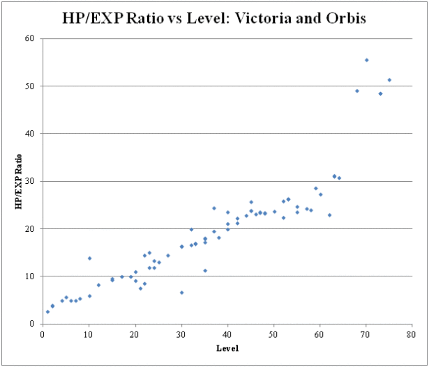

Hello, and welcome to my website!
My name is Brian Xie, and I'm a sophomore majoring in computer science (6-3) at MIT. My academic interests include software engineering, machine learning, back-end development, and game theory.
I'm also co-president and webmaster of the MIT Poker Club, a fast-growing club that spreads the love of poker and emphasizes making positive expected value decisions. In addition to playing poker, I enjoy cooking, learning about urban planning, and analyzing strategy games in my free time.
Contact me at brianxie@mit.edu.
Check out my Github to see the source code behind these projects!
Synapse Technology Corporation
Timeline: January 2018
Technologies: Tensorflow, Python
Summary: Developed deep learning architectures to enhance the accuracy of Synapse’s automated threat detection system deployed at security checkpoints. Revamped Tensorflow’s object detection API to perform joint inference of dual-view x-ray images by enforcing consistency between detections of both views.
See More ▾
See Less ▾
Synapse Technology Corporation is a startup headquartered in Palo Alto, CA. I interned as a computer vision engineer in this group during January 2018 through the MIT externship program. Our goal is to develop a system that automates threat detection (e.g. firearms, sharps, explosives) and deploy this system at airport security checkpoints across the world. Extensive research has shown that humans typically perform very poorly in detection tasks with infrequent true positives due to boredom and fatigue. Automating the threat detection process would thereby dramatically improve detection accuracy, reduce false positive rates, and eliminate much of the cognitive load on security checkpoint operators.
When I first came across the externship listing, I was immediately attracted to the tremendous impact of the technology and how interesting the project was. Having gone through many onsite interviews during the 2017 fall semester, I was pretty fed up with the long lines at TSA screening checkpoints and how the operators always seemed to think that my laptop was a bomb (so much so that I decided to purchase TSA precheck). I also had some prior experience in machine learning, especially working with Tensorflow and large-scale data processing.
For a bit of context, typically x-ray scanning machines used at security checkpoints give x-ray scans of two views of a bag/tray – the top view and the side view. However, most existing object detection architectures can only process a single image at a time. The goal of my project was to extend Synapse’s existing threat detection architecture to incorporate information from both views of the x-ray and perform joint inference. There are many scenarios in which a threat may be occluded or difficult to detect in one view versus the other – such an architecture could reduce false positive/negative rates for objects which are difficult to detect while boosting confidence in true positives.
After my onboarding, I spent a few days researching papers to better familiarize myself with the field of object detection in computer vision. Some of these included (Deep Residual Networks, Fast RCNN, Faster RCNN, Autonomous Vehicles, Xray images). Compared to conventional computer vision tasks such as image classification, object detection is an incredibly complex problem. Not only are there sometimes multiple objects in an image, the network must predict bounding boxes for the object in addition to its class. The most recent architecture is known as Faster-RCNN, and from a high-level perspective the steps are essentially as follows:
- First stage feature extractor: Takes the input image, passes it through a pretrained object detection feature extractor such as VGG19. For my application, since accuracy is more relevant than speed, I used a deeper network, Resnet101.
- Region proposal network (First stage box predictor): Based on the convolutional feature map extracted from the previous step, predict a list of a small number (typically on the order of 100) of rough proposal boxes that have high probability of containing an object.
- Second stage feature extractor: For each proposal box, crop the features corresponding to its spatial location, and downsample the feature map to a fixed shape. Pass it through more convolutional layers to obtain feature maps corresponding to each proposal box.
- Second stage box predictor: From the feature map, perform a bounding box regression (which will refine the bounding box prediction from the region proposal network) and a class prediction; the resulting bounding boxes are the final predictions.
Afterwards, I spent a few days performing hyperparameter optimization on the existing architecture to better familiarize myself with the API and running jobs on Synapse’s internal computing infrastructure.
In the second week, I began to implement a simple joint architecture that takes images of both views as input to perform object detection. When I was first presented with this project, I honestly thought I’d finish the entire project within a few weeks. The reality could not be farther from that belief. I spent seven whole days writing my initial implementation. Tensorflow’s object detection API, while powerful and fairly easy to perform hyperparameter optimization with, is very inflexible with its core implementation. The entire API was designed with the assumption that one image would be used as input. As such, I ended up sifting through almost the entire API of over 50,000 lines of Tensorflow code (which encodes much more information than the same number of lines of most other languages). Between packaging the dataset into a TFRecord file, the data decoder, preprocessing, the network architecture, the loss function, and much more, everything had to be changed/duplicated to accommodate the dual-view pipeline. After seven long days of toiling with the architecture, I successfully started the training and evaluation process for the network.
Unfortunately, looking at the results of the evaluation the next day, there was clearly something wrong with the network – random bounding boxes with around 50% confidence were predicted all throughout the image, most of which didn’t have any correlation with a threat item. The next week primarily involved long critical thinking sessions to identify various bugs in my architecture and completely revamping the architecture. Finally, after a lot of thought I settled upon an architecture that utilizes both image views to enforce consistency between the predicted bounding boxes for the two images. (I cannot share the exact details)
It’s too bad that my externship experience was so short – there are so many further experiments and optimizations I want to try for the architecture I developed. I just finished writing the final version of the architecture the day before my final day at work, so I wasn’t at a stage in which I had achieved significant performance improvements over the existing architecture.
Working at Synapse has been one of my most rewarding experiences. Spending days upon days sifting through a 50k line API helped me build valuable technical skills that Michael Hartl coined as “technical sophistication”, kind of like the computer analog of mathematical intuition. In such a short time, I’ve gained so much in different directions, from software engineering to high-level visualization and critical thinking.
Another aspect of Synapse that I loved was the work environment. Being a startup, resiliency, responsibility, and communication were critical. Even as an intern, I felt very much a part of the company’s day-to-day operations and the direction/goal of the company as a whole, which allowed me to gain plenty of technical exposure to the hardware, server-side, and business aspects of the system deployment. This transparency, combined with the amazing things the full time employees were accomplishing on a day-to-day basis, truly motivated me to achieve results and put my best effort into the work. In retrospect, I’m proud of what I’ve achieved and grateful for this amazing opportunity.
Affinity
Timeline: Feb 2017 - Aug 2017
Technologies: Tensorflow, Python, C++, SQLite
Summary: Optimized deep convolutional neural networks for virtual drug screening by predicting binding affinity of complexes. Constructed an extendible, easy-to-use machine learning API for molecular geometry.
See More ▾
See Less ▴
Affinity is a research team at the Center for Bits and Atoms in the MIT Media Lab. I worked in this group during Spring/Summer 2017. We focus on applying deep learning to predict interactions between proteins and small drug-like molecules. Specifically, our research goals are:
- Accelerated Virtual Screening (short term) -- Current drug discovery relies on slow and inaccurate physics-based algorithms to filter potential drug candidates that target a protein. We apply deep learning techniques to achieve better accuracy and screen molecules faster.
- Generative Drug Discovery (long term) -- Given a molecule, generate or "autocomplete" a small molecule with strong binding affinity (motivation behind our team name!) that is synthesizeable and has low toxicity (in essence, an effective drug).
In order to facilitate research towards these goals, I worked extensively with a grad student to develop two high-level APIs:
- Affinity: High-level library in Tensorflow, Python, and C++ dedicated to models and methods for molecular geometry. (private github)
- AffinityDB: Library of Python/SQL operations that support multithreading to create and manipulate databases. Github
Working in Affinity has been an incredibly rewarding experience. Over six months, I've learned countless machine learning architectures and their applications to computational chemistry. Moreover, I've gained so many invaluable core software development skills. From using Tensorflow, SQL, C++, and various chemistry-related Python libraries, I can better visualize high-level operations and quickly adapt to unfamiliar APIs. From revamping Affinity and the database into APIs, I've become proficient at constructing well-organized, efficient, and easily extendible code.
For a more detailed description about Affinity, follow me through this awesome journey below!
Affinity, Spring '17 ▾
When I first came across Affinity, I was fascinated by the project and its potential impact. We mostly focused on the first research goal. Applying deep learning to virtual screening consists of two tasks:
- Docking the small molecule, or finding the minimal-energy position of the ligand with respect to the receptor.
- Predicting the binding affinity of the ligand and receptor. My research focuses on this task.
Since drugs typically work by binding to a particular protein and acting as an inhibitor or promoter, binding affinity is the single best predictor of drug effectiveness. Done successfully, this could be revolutionary. Drug discovery is a lucrative field - a single drug can easily be valued at over a billion dollars. However, as mentioned, current physics-based screening techniques are slow, computationally expensive, and inaccurate. In addition, the drugs that pass the screening must be physically tested for factors like toxicity.
From a high level perspective, predicting binding affinity is very similar to image processing, which is why we feel that convolutional networks are appropriate. In image processing, convolutions exploit 2D local relationships to get low-level features like edges, then combine them to understand more complex features like eyes or feet. To compute binding energy, we can individually consider the interactions between neighboring atoms, then combine these interactions to arrive at the final binding energy.
I've always been interested in physical sciences and was just getting into deep learning. My courseload wasn't too demanding at the time, so I was ready to dedicate lots of time to perform exciting, meaningful research. Little did I know that I'd soon embark on one of my most stressful but also rewarding experiences ever.
Along with several other freshmen, I spent the first few weeks learning core concepts in machine learning, getting up to speed with Affinity's github and research progress, and learning the basics of Tensorflow. I had some background in machine learning, so I understood the background readings and codebase surprisingly well. But there was one huge challenge that I had to overcome first, which often ended up being my biggest source of stress: using Linux.
As my freshman self will tell you, I was a devout Windows user for its superior GUI. When I joined Affinity, my mentor immediately double-booted Linux onto my laptop for research. Before this, I had no idea what basic terminal commands like 'pip', 'git', 'ssh', or even 'cd' were. As a result, I spent a solid three days before I successfully downloaded and installed Tensorflow without any bugs, something that might take me 10 minutes today.
Then I began working on a project, and for the rest of the semester, I worked on optimizing a convolutional neural network architecture known as atomic convolutions. This approach treats molecules as a sparse pointcloud of atoms instead of 3D images. In addition, the network pre-computes each atom's nearest neighbors as a matrix. Convolutional layers compute a weighted sum of the features of each atom's nearest neighbors, rather than convolving each point with nearby voxels.
We had a simple classification task: label protein-ligand pairs as either binding (1) or non-binding (0). To construct the dataset, we first downloaded about 10,000 protein-ligand crystal structures from the PDB (Protein Data Bank) to get our positive examples. To get our nonbinders, we took the same receptors, but randomly selected "decoy" ligands that were structurally similar but chemically different from the crystal ligand. We then used Autodock Vina to dock these decoys in the protein and got our negative examples.
I benchmarked my results on an architecture created by IBM known as DeepVS and tried to improve performance. This model also uses feature embedding: for each atom, initially embed some number of features. Each training iteration then updates these features, and eventually they'll encode meaningful physical information, like electronegativity or partial charge. I incorporated many improvements, by optimizing hyperparameters, increasing network depth, and optimizing different weights for different atomic interactions.
That sounds pretty simple, but actually implementing it in Tensorflow was so challenging. I had mostly used Java and C in the past, and I simply couldn't visualize many of the high level operations. In addition, the way Tensorflow is organized made it extremely difficult for (inexperienced) me to debug my code. I took a step-by-step approach by first laying out all the operations sequentially, then writing a Python implementation, finally transforming it into Tensorflow by crawling through the expansive API.
Once I finished, I had a highly efficient model that could process several hundred examples per second. I evaluated our performance on the test set, which was the equivalent of about 60% classification accuracy. While results were not great, they were still better than the accuracy of the base model in the paper. I gave a final presentation on the entire pipeline and felt pretty proud of myself. I had invested the most time into Affinity and clearly came out on top among the freshmen in terms of learning and research progress, and I was very excited to focus my efforts during summer to further my research!
Affinity, Summer '17 ▾
Summer 2017 was action packed, so I've split it into three sections: Research, Affinity API, and Database API.
Research
I picked right up from spring semester by tackling a new benchmark, Atomic Convolutional Networks by Vijay Pande's group at Stanford (hereby referred to as VijayNet). While conceptually similar to IBM's network, this architecture introduced several radically different operations. Some important differences were:
- Atomistic fully connected layers: Typically in CNNs, convolutional layers are stacked at the beginning of the network to transform the multidimensional input data into a feature vector. This 1D vector is then passed through several fully-connected layers to coompute the output. VijayNet passes each atom's individual features through separate fully-connected layers before finally performing fully-connected layers on the entire molecule's features.
- Radial pooling: Radial pooling can be thought of as feature binning. Several Gaussian filters with learnable parameters (mean and variance) are applied to a tensor, which effectively discretizes the values of the feature. This dramatically reduces the number of parameters and allows us to train different weights for different feature bins.
- The model learns a regression task rather than a classification task. The model predicts the exact binding affinity between protein-ligand crystal pairs.
I implemented the base model in Tensorflow and introduced many improvements, such as training separate weights for different atom types and creating a more physics-motivated convolutional layer. The biggest challenge was writing pointcloud_pairlist, a geometry operation that takes two pointclouds and computes pairs of nearest neighbors between them. While a brute-force algorithm is only a few lines, it considers every pair of points and takes O(N^2) time and memory, where N is the number of atoms in the molecule. To reduce the complexity to O(N), I used a common technique in computer gaming - I first binned the coordinates into a grid with side length equal to the maximum interaction distance, then I considered all posible interactions in neighboring grid cubes. This algorithm is easy to write in Python, but atrociously difficult in Tensorflow because it's impossible to modify individual values in a Tensor object. After a week of struggling I managed to write an efficient method that runs at several hundred examples per second.
I also wrote an implementation for graph convolutions. This architecture treats molecules as undirected graphs in which edges represent bonds and vertices represent atoms. This algorithm can only consider the ligand by itself, since there are no covalent/ionic bonds between the protein/ligand. As such, this method is extremely useful for predicting ligand properties like toxicity, but not so much for binding affinity. Check out the visualization of graph convolution operations I created below!
Finally, I developed a new convolutional architecture, quadruplet convolutions. This network computes all sets of four neighboring points within some maximum interaction distance and convolves each atom's features by a weighted sum of its quadruplets' features. I came up with two approaches:
- Atom clustering: This novel architecture successively evolves atomic features and groups neighboring atoms into "super-atoms", until the super-atom can see the entire molecule. This method elegantly introduces pooling into an atomic convolution architecture. Each convolutional layer has three steps: 1) Cluster the pointcloud into sets of four neighboring points. 2) Convolve each atom's features with its neighbors. 3) Perform a max pooling of the atom features.
- The second method is simpler. A convolutional layer evolves each atom's features by convolving along each quadruplet that it's a part of. The motivation is that four atoms determine a dihedral angle, an important structural property that can be a useful predictor
Throughout the summer, we pored through numerous papers, looking for inspiration for new convolutional architectures to achieve better performance. I learned about so many different techniques, like variational autoencoders, evolutionary learning, and spatial transform networks. I was most fascinated by Generative Adversarial Networks (GAN), which are commonly used in image generation. The model contains two networks - a generator and a discriminator. Simply put, the generator tries to generate images that resemble real images as closely as psosible, while the discriminator tries to distinguish generated and real images. Trained end-to-end, both the generator and discriminator successively learn until the generator can produce good quality images.
Affinity API
I worked with a grad student to radically transform the Affinity github into a clean, organized API that is importable just like Tensorflow.
At the start of summer, the github was a disaster. We had a ton of code (particularly on the database side), but it was archaic, poorly documented, and difficult to reuse. We envisioned a work environment in which functions are easily generalizeable and standardized to make model development easier.
Conceptually, each model has three parts: 1) an input pipeline that connects to the database and supplies the model with training examples, 2) a network that processes the input data and returns an output, and 3) a model that defines a cost function and trains the network. As such, we divisioned our github into several importable modules:
- utility functions: I wrote many subroutines for input pipes and networks. These are saved in four submodules:
- c_lib: I wrote several C++ operations and connected them to Tensorflow to speed up code. In fact, pointcloud_quadruplets (used for quadruplet convolutions) is written in C++.
- geom: Geometry ops, including pointcloud_pairlist that I wrote.
- nn: Operations used in the networks, such as atomistic_fc_layer that I wrote.
- utils: Other random utility operations.
- input: We have many different datasets, and each dataset has its corresponding input pipe. Each input pipe takes a filename queue (containing file paths to training examples), preprocesses the data with many threads, and creates a data queue with the desired information. To make coding simpler, we standardized the input pipe interface so that interacting with each database requires essentially the same commands.
- networks: We encapsulated each network into a class with two functions: __init__, which initializes parameters, and compute_output, which does exactly that. It's that simple! All the work is in the background.
- models: The model is the main function that trains the network everything together. With our API, even complex models like VijayNet are only about 20 lines of code.
Database API
I also worked with a grad student to transform our database system into an API, AffinityDB, with importable, standardized database actions. Written in Python, it uses SQLite and supports multithreaded execution of database actions and insertion into an SQLite table.
In the past, issues with the database were the biggest source of problems with our models and a huge time sink. The new database API that I helped create elegantly resolves many problems:
- Database actions like download_pdb are organized in a module and are easily reusible.
- Multithreaded execution dramatically speeds up database creation.
- Standardized methods like retrieve (from SQLite table) and run_multithread make processing databases much easier.
I also created two datasets: VRS1 (Vijay Regression Set 1, which was used for VijayNet) and ARS2 (Affinity Regression Set 2). ARS2 uses a much better decoy-finding algorithm than our default dataset. It uses several Python chemistry libraries like rdkit to ensure that decoys are structurally similar (similar number of atoms) but chemically different (we impose a maximum common substructure within the ligands).
In Conclusion...
Working in Affinity has been a fantastic experience. Back in February, I couldn't even use terminal and could barely envision how numpy operations worked. I'm proud of how much I've progressed.
The massive time investment I put into organizing our github into clean, standardized modules really paid off. By laying the groundwork for fast development, every team member is developing models and creating databases at an unparalleled speed. I've also learned so many software development skills from working on the API, from constructing a simple, standardized interface to learning how modules are imported.
On my last day, I wrote a tutorial that details everything important about Affinity. It contains a Tensorflow tutorial, description of our research goals, and an introduction to the affinity and database APIs. While I won't be there next semester, I hope the new freshmen that will join the team will be able to learn about the revamped Affinity from it. At the end of the day, all things come full circle, I guess.
See Less ▴
TeensyTetris
Timeline: Mar 2017 - May 2017
Technologies: Python/MySQL (server), Arduino/C/C++ (client)
Summary: Built Arduino IoT device with single and multiplayer Tetris with complete functionality, including immediate sending of row-clears. Check out our Technical Report for details on our implementation!
See More ▾
See Less ▴
For my 6.S08 Interconnected Embedded Systems final project, I worked in a team of four to implement single and multiplayer Tetris. The objective of the game is to manipulate the blocks using translations, rotations, and swaps to fill horizontal rows on the board. Once one or more rows are completed, the player’s score increases, the row is cleared from the board, and the blocks above the completed rows fall. As the game progresses, the blocks fall faster, increasing the difficulty of the game. The game terminates once the blocks stack to the top of the board. In multiplayer Tetris, each row that a player clears is instantaneously sent to the bottom of the opponent's board. In addition to gameplay, we also created a viewable database for players to view their personal best score, 2P rating, as well as the all-time top scores.
The Arduino "gameboy" uses a Teensy 3.2 Microcontroller, Color 320x240 TFT Touchscreen, a wifi module, battery, and buttons. All the key features of Tetris gameplay are implemented, including:
- Translation: Left/right buttons translate blocks.
- Rotation: Up button rotates blocks according to standardized rules.
- Gravity: Pressing/holding the down button increases block falling speed.
- Storage: Touching the screen stores the current block for future use.
- Scoring: Scores are displayed and are calculated by standardized rules.
- Database: Top scores and 2P mode ratings (similar to chess ratings) for each player is stored and can be viewed.
- 2P Mode: Players can connect with other online players and cleared rows are immediately sent to opponent.
Below is a video of two players battling against each other in a 2P game!
I had the most experience with Tetris mechanics, so I led the team's progress throughout the development process. My individual contributions were:
- I created a clean, extendible class implementation for the blocks, buttons, and board that allowed us to quickly develop other features. I followed OOP paradigms by splitting the functionality and internal computation accordingly (e.g. Block contains fields orientation and coords and method rotate(), while Board contains methods initialize_block() and fall()).
- I developed most of the internal logic, such as block rotation, collision detection, scoring updates, etc. This sounds simple but is actually extremely challenging due to edge cases, such as attempting to rotate a block at the edge of the board.
- I set up the state machine and UI so that the player can easily navigate between the 1P, 2P, and rankings modules.
- I implemented the MySQL databases for 2P mode. There are two tables, which store the following:
- Player status: The first database contains each player's ID and status ("ready", "ongoing", or "terminated"). This table is used to establish a connection with another player and determine whether a game should terminate. Each player's status is initialized to "terminated". Once the player tries to establish a connection with another player by ID, his status becomes "ready". The Teensy periodically queries the database to check the opponent's status, and when it becomes "ready", both players' statuses become "ongoing" and the battle begins. During the game, the database is periodically queried; if the opponent's status turns to "terminated", then the player has won!
- Row clears: The second database contains a history of row clears from all players. Each time a player clears row(s), the player's ID and number of rows cleared is posted to the database. The internal logic periodically checks whether the opponent has cleared any rows by looking for updates in the database and displaying the rows. We check for row clears every few seconds, so row clears are close to instantaneous.
Working on this project was an incredibly enjoyable and enriching experience. I really enjoy back-end development, and it was extremely fulfilling to see how the internal logic and server-side code that I wrote actually mechanics that would display on the screen. I learned so much from applying OOP paradigms and using unfamiliar technologies, particularly server requests and MySQL databases. I'm very proud of the robust, low-latency device that my team and I were able to build in six short weeks.
See Less ▴
Pokerbots
Timeline: January 2017
Technologies: Java
Summary: Constructed poker-playing AI for Heads-up No Limit Hold'em with Discards by implementing Counterfactual Regret Minimization. Click below and check out our Strategy Report for details on our implementation!
See More ▾
See Less ▴
Pokerbots is an annual competition held at MIT over the January term. It is a computerized poker tournament, and teams have one month to create a completely autonomous poker bot to compete against other teams.
Each year, a unique format is introduced to prevent competitors with prior poker experience from gaining an unfair advantage. This year's game was Heads Up No-Limit Hold'em with Discards. After the flop or turn is dealt, each player can choose to select one of his hole cards, discard it, and draw a random card from the deck to replace it. All other rules are identical to Heads-Up No-Limit Hold'em (HUNL). I have a lot of experience playing poker and actually consider myself a specialist in HUNL, so I was really excited to use my background to gain an intuitive understanding of the game, apply machine learning knowledge, and create an awesome bot.
I formed a team of three with two other freshmen, Tiancheng Qin and Allen Cheng. We used a combination of machine learning and traditional game theory techniques. In order to tackle the task at hand, we developed a three-part plan:
- Initial Impressions and General Strategy: We spent the first few days familiarizing ourselves with the game. We played and analyzed hundreds of hands/situations, and used our poker intuition to develop some simple strategical guidelines.
- Equity Calculator (Toy Task): We then spent a week creating a program that would approximate the equity of a particular hand (such as 88) versus a random hand. In this toy task, there is no betting - the only decision nodes are whether to swap a card.
- Developing the Bot: We spent the final two weeks creating our final product. The main task is to optimize betting strategy. We developed a system of parameters that encapsulated key aspects of game states to probabilistically select actions, and used the reinforcement learning algorithm Counterfactual Regret Minimization (CFR) to update these parameters.
I'll primarily discuss our high-level implementation and motvations. For more details about the back-end code, check out the strategy report!
I. Initial Impressions and General Strategy
After playing through several hundred live hands and extensive analysis, we came up with several important strategical guidelines:
- Equities are much closer to random. Each discard opportunity functions somewhat like an additional street, with more opportunities to improve one's hand. Essentially, a player's initial holdings are not as relevant and average hand strength will be significantly higher, which directly motivates (2) and (3).
- Slowplay less often. Sometimes in HUNL, you might want to feign weakness to "trap" the opponent into betting into you when you have a good hand. This is no longer the case - the discard mechanism greatly increases the chance that your opponent's hand strength improves, so it is more important to charge the opponent and prevent him from freely actualizing his equity.
- Bet sizing should be larger. Since equities are closer, one must bet more to force opponents to pay an appropriate price to actualize their equity.
- Pocket pairs decrease in value. Pocket pairs are unable to take advantage of the discard mechanism because doing so would break up the pair. As a result, strong pocket pairs like KK should be played very aggressively preflop. These pairs lose a lot of their value postflop because of the higher and more dynamic hand strengths, so it's crucial to put in as many chips into the pot as possible with a guaranteed equity edge.
- Suitedness and connectivity is not as important preflop. In order to take advantage of a flush/straight draw, no cards associated with the draw can be discarded, making it more difficult to improve the hand. Having high cards is more important than connectivity; for example, A3 is significantly stronger than 89 because A3 can discard its 3 and improve more on average.
II. Equity Calculator (Toy Task)
We decided that calculating the equity of each specific hand against a random hand was a good toy task for two reasons. First, this would allow us to develop core functionality that is necessary for the final bot, especially the algorithm that decides whether to swap and a class that plays two bots against each other. Second, the resulting equity table would help quantify our strategy guidelines and provide important insights moving forward. Using the same program, we were also able to compute the equity of two specific hands against one another.
I primarily developed the swapping algorithm during this week. I started off with an obvious, rudimentary algorithm of swapping any card that doesn't directly connect with the board. Unfortunately, this algorithm fails when flush and straight draws come into play, which dramatically complicates the algorithm. For example, one should devalue draws on paired boards due to full house possibilities. I spent several days doing statistical analysis to mathematically justify when exactly to keep or swap draws.
Finally, we combined our self-playing program and our swap algorithm. We simulated the results of 2 billion random hands, and determined each hand’s overall winning probability. Here are the results:
The table is read as follows:
- The rows correspond to the first card, in decreasing order of rank.
- The columns correspond to the second card, in the same way.
- Entries in the upper right correspond to suited cards, entries in the lower left correspond to unsuited cards.
For example, row 2 column 3 (0.55715) corresponds to KQs, and row 13 column 12 (0.42844) corresponds to 32o. As expected, most unpaired cards have very close equity, and the equity of pairs drops off steeply as their values decrease. This table strongly motivated our preflop strategy.
III. Developing the Bot
For the betting strategy, we used a machine learning approach by constructing a system of parameters that probabilistically select the betting action and using the reinforcement learning Counterfactual Regret Minimization (CFR) to iteratively update the parameters.
For each game state, there is a corresponding set of weights that provide the probabilities of taking every possible action. The first step was to develop an abstraction for the game state. Every team had a hard limit of 10GB for the final bot and we were also heavily limited by computational resources. Ideally, the bot would receive all the information about the game state as input to compute its action. However, bet sizes are continuous and keeping exact records of hole/community cards would take trillions of parameters, which is clearly infeasible. We employed several major strategies to reduce the number of parameters:
- Separate preflop from postflop action. Since hand strengths change so much from the flop, ignoring preflop betting when determining postflop strategy doesn't lose much.
- Bet levels. Conceptually, a bet level abstracts away different bet sizes and simply differentiates between the number of bets that go in. The bet levels are integers ranging from 0 to 5, so 0 represents a check or fold, 1 represents a call or bet, and so on. Each bet level has a corresponding threshold or "chip level", the number of chips the bot would be willing to put into the pot, which drives future decisions. This abstraction is simple - each street's betting history requires only about 10 parameters. Unfortunately, as we later discovered, it actually eliminated some crucial information.
- Combine board texture and absolute strength to get relative strength. Betting strategy is largely determined by the strength of your hole cards relative to the board. Instead of computing relative strength, we fed the absolute strength and board texture as input. The board texture consists of two metrics: wetness and volatility. Wetness measures the likelihood that a hand connects with the board in some way, and volatility measures the likelihood that future community cards will change relative hand strengths. For example, a flop of QsJsTs is very wet, while 962 rainbow is not. A board of 6s5s3c is very volatile while A92 is not. The combination of absolute hand strength and board texture approximately determines relative strength.
We reduced the number of parameters to about 100 million. The final step was the CFR update mechanism. Initially, when the player instances are first constructed, the probabilities at each decision node are set as a random, uniform distribution. Some of the weights are then initialized using poker intuition to ensure more accurate and faster convergence.
To train our weights, we used a Fixed-Strategy Iteration variant of CFR. The problem with directly using CFR is that we don't know the opponent's strategy, making it impossible to calculate the EV of an alternative line. Instead, each bot's strategies were fixed over 20 billion hands (enough so that almost all decision nodes are visited at some point) and the bots accumulate profits for each action by backpropagating the EV from the leaf nodes. At the end of the 20 billion hands, the weights are adjusted by scaling them according to the net profit. We continued this process indefinitely, gradually improving the bot over time.
IV. Reflections
Unfortunately...we overlooked a tiny off-by-one bug that caused our bot to bet instead of check, raise instead of call, etc. We discovered the bug several hours before the submission deadline, and we simply did not have enough time to retrain the bot. Needless to say, our bot didn't perform optimally.
There were several other aspects we could have improved upon. As mentioned, our bet level model was problematic. The primary problem is that it treats bets & calls or raises & calling raises as equivalent. The same amount of money goes in at the end, but from a strategical standpoint, they are completely distinct and should result in different future actions. Another recurring problem occurred - what if we have AA preflop, we select max bet level 5, and our opponent doesn't comply by immediately folding? In this case, which weight should be updated? We should have used the bet level model to distinguish different bet sizes, but a dynamic check/bet and fold/call/raise model to determine actions.
We kept a standardized bet size regardless of the game state, but a strategically advantageous adjustment is to make larger bets when the board is more wet/volatile and smaller bets otherwise. Additionally, we could make raise sizes as a function of the pot size rather than the opponent's bet, which protects against abnormally small/large bets. Neither improvement requires additional parameters.
Finally, we could implement "strategy cleaning" to speed up convergence. Once the weight of some option drops below a threshold (such as 0.01), we zero the probability of taking that action and re-normalize. This helps refine the weights, since our model uses exponentials and the weights never fully reach 0.
All in all, I'm incredibly proud of what we accomplished, despite a few shortcomings. In one month thoroughly analyzed a unique variant of poker using game theory & statistical analysis and wrote thousands of lines of code to implement the strategy. This was my first large-scale programming project, and I'm so glad that it combined some of my greatest passions - poker, machine learning, and game theory.
See Less ▴
Electrical Engineering and Computer Science
6.S08 Interconnected Embedded Systems
6.004 Computation Structures
6.006 Introduction to Algorithms
6.009 Fundamentals of Programming
6.031 Elements of Software Construction
6.033 Computer Systems Engineering
6.036 Introduction to Machine Learning
6.046 Design and Analysis of Algorithms
6.176 Pokerbots Competition
6.867 Machine Learning (grad)
6.UAT Oral Communication
Economics/Management
14.01 Principles of Microeconomics
14.02 Principles of MAcroeconomics
14.12 Economic Applications of Game Theory
15.S50 Poker Theory and Analytics (TA)
Mathematics
18.03 Differential Equations
18.211 Combinatorial Analysis
18.600 Probability and Random Variables
18.615 Introduction to Stochastic Processes
Current coursework (Spring 2018): 6.031, 6.033, 6.UAT, 14.02, 18.615. All other courses are completed.
Welcome to my personal corner! This is where I write about my personal interests - click on the modules to learn more about me!
Poker/Gaming
Poker is an integral part of my identity - it's exhilarating and I love to play in my free time. Contrary to popular belief, poker is much more a skill-based game grounded in mathematics than psychological warfare. I enjoy applying game theory concepts to analyze the extensive decision making processes involved in poker. Of course, it also feels great to turn a profit at the end of a session! I consider myself a heads-up no limit Hold'em specialist, but I am actively to gain experience in other games such as Pot Limit Omaha.
I am currently co-president and webmaster of the MIT Poker Club. As part of the executive committee, we organize events such as tournaments, workshops, and talks about trading. Joining the Poker Club in my freshman year was my best decision - I've become close with so many people with the same passion and similar academic interests. The upperclassmen are awesome mentors, and I've learned so much from them.
In addition to poker, I enjoy playing and analyzing a variety of other strategy games, such as Settlers of Catan, 升级 (tractor), and competitive Pokemon. I'm also an avid fan of rhythm games like DanceDanceRevolution - it's so exciting to move to the beat of the music, and it's also great exercise!
Below are some of the articles I've written on gaming strategies:
My Best 3rd Gen OU Teams
Date Written: September 19, 2015
Summary: Among all the metagames in competitive Pokemon, 3rd Gen OU is by far my favorite. I've detailed three of my most frequently used teams.
See More ▾
See Less ▴
3rd generation Pokemon is by far my favorite generation. Not only does ADV fix a lot of the problems that plague 1st and 2nd gen, it offers the most balanced metagame. Unlike 2nd gen which is completely stall oriented or 5th gen which is largely hyper-offensive oriented, ADV provides an environment in which both offensive and defensive teams can be successful. There’s a good variety of viable Pokemon, moves, abilities, and items, without going overboard or becoming too complex. Of course, the lack of stupid entry hazards like Sticky Web or Stealth Rock makes the game awesome, as well.
Below are two of my favorite teams to use in ADV. The first one is significantly better due to its consistency. While both teams use some fairly defensive Pokemon, such as Swampert, Snorlax, and WishMence, both teams are offensively oriented. There is also a bonus team at the end!
Team 1: Physical Sweep
Swampert @ Leftovers
- Ability: Torrent
- EVs: 252 HP / 216 Def / 40 SpA
- Relaxed Nature
- Earthquake
- Ice Beam
- Hydro Pump
- Roar
Snorlax @ Leftovers
- Ability: Immunity
- EVs: 144 HP / 68 Atk / 132 Def / 164 SpD
- Adamant Nature
- Body Slam
- Counter
- Shadow Ball
- Self-Destruct
Magneton @ Leftovers
- Ability: Magnet Pull
- EVs: 4 HP / 252 SpA / 252 Spe
- Modest Nature
- Thunderbolt
- Hidden Power [Fire]
- Thunder Wave
- Toxic
Gengar @ Leftovers
- Ability: Levitate
- EVs: 252 HP / 52 Def / 12 SpA / 192 Spe
- Timid Nature
- Thunderbolt
- Ice Punch
- Will-O-Wisp
- Destiny Bond
Metagross @ Leftovers
- Ability: Clear Body
- EVs: 160 HP/ 252 Atk / 96 Spe
- Adamant Nature
- Earthquake
- Meteor Mash
- Explosion
- Agility
Gyarados @ Leftovers
- Ability: Intimidate
- EVs: 54 HP / 252 Atk / 204 Spe
- Adamant Nature
- Dragon Dance
- Substitute
- Earthquake
- Hidden Power [Flying]
As you might be able to tell by the name, this team is a physical sweeping team, despite some of the unusually defensive Pokemon on this team. Note that aside from Leftovers, there is no recovery at all – this team is not designed to stall for long periods of time!
First of all, Swampert and Snorlax serve as physical and special defense pivots respectively. Swampert is essential to stopping threats like Salamence, Tyranitar, Aerodactyl, and other physical attackers, while Snorlax stops special threats like Zapdos or Regice very well.
Magneton is designed to get rid of Forretress and Skarmory so that Snorlax, Metagross, and Gyarados become much more effective. It plays another crucial role in preventing Spikes from being set up, since this team no spinners. Beyond that, it can’t do much, but it can counter some special threats like Zapdos and Regice.
Gengar shuts down physical attackers with Will-o-Wisp and is a good all purpose switch against many bulky waters and physical attackers.
Metagross can be a very potent sweeper late game with Agility, but for the rest of the match it’s a huge physical threat with Explosion and Meteor Mash. Gyarados, on the other hand, is designed to be a late-game physical sweeper with Dragon Dance and Substitute.
Countering Common Threats
The highly unusual mix of types and Pokemon on this team (I’ve never seen anyone else use a team remotely similar to this!) provide good resistance against more or less every Pokemon. Of course, countering opponents’ threats often revolves around good prediction more so than the Pokemon themselves, but here are some common tips to get around most top tier OU threats:
- Use the first few turns to scout what exactly your opponent has on each of his/her Pokemon. This is very important for this team because each Pokemon on this team plays a crucial role in defending against common threats. It’s also very important that you obtain this information very quickly, since this team has no recovery. Gather information about your opponent’s Pokemon, formulate a plan as quickly as possible, and sweep using that information. Note that I have three Pokemon with suicide attacks (Metagross, Snorlax, Gengar) to eliminate walls that would otherwise block sweeps. Gyarados in particular requires a lot of information to successfully sweep.
- Swampert walls Tyranitar and Metagross, but the first time you see them switch out immediately (usually into Metagross or Gengar) to make sure that they don’t have HP Grass. Swampert is a very common wall and many players use HP Grass to immobilize Swampert. In this case, it’s a key defensive pivot and it’s very important you keep Swampert alive until at least mid-game.
- Switch Snorlax into most special attackers like Zapdos, Raikou, Starmie, etc and your opponent will probably switch into something like Salamence or Tyranitar. Counter is a highly unusual move on Snorlax and you will almost certainly be able to land a kill on these if you predict properly. Make sure that they don’t run Dragon Dance before using Counter though. Otherwise, you’ll probably fail and destroy the surprise factor.
- If you have no other good way to remove a particular wall, just blow it up – that’s what Snorlax, Metagross, and Gengar are there for! Snorlax Self-destructs and Metagross Explosions can be predictable, but very few people run Destiny Bond on Gengar. It’s very good at removing Zapdos (which would otherwise completely wall Gyarados) and some other stuff.
Pokemon Specific Strategies
- Swampert: As mentioned earlier, switch it out the first time you see Metagross, Tyranitar, or anything that could carry HP Grass to protect Swampert. Metagross or Gengar usually wall most of these attackers pretty well anyways. Do NOT switch out Hydro Pump for another move! Without it, Swampert cannot OHKO Aerodactyl or Dugtrio. It also provides better coverage and much higher damage against Tyranitar and Claydol. This team is not designed to last very long, so having Protect or Toxic is contrary to this team’s goal of quick scouting and sweeping.
- Snorlax:
- You can basically switch in Snorlax into any special attacker, as mentioned earlier. From there you can usually force a switch with Body Slam.
- Most players will switch in a threatening physical attacker like Salamence or Tyranitar to your Snorlax. If you have enough information about your opponent that they do not have Dragon Dance or some useful non-attacking move, take them out with Counter! They won’t expect it and it can nab you an extra kill.
- Self-destruct is almost always a guaranteed kill – use it against annoying walls like Suicune. Be sure to predict Substitutes, however.
- Magneton:
- Get some damage on your opponent’s Forretress before switching in your Magneton. Forretress will almost always live a Modest HP Fire with roughly 10%. Skarmory can sometimes be OHKO’ed by Thunderbolt, but it’s still better to get some damage first.
- Most good players will use Whirlwind the first turn they bring in their Skarmory to scout a Magneton. Instead of switching into Magneton immediately, deal some damage first. What you really do not want to do is to reveal the surprise early, because your opponent can often predict your switches and switch into Dugtrio to destroy your Magneton, and you will have next to no means to getting rid of opponent Forretress or Skarmory. The best way to trap Skarmory/Forretress is to switch in Magneton on a predicted double switch to avoid a Whirlwind/Earthquake.
- Because of the extra speed investment, this Magneton can also easily destroy other Magneton; just Thunder Wave, Substitute, and HP Fire to destroy your opponent.
- Gengar
- This Gengar has an unusually high amount of HP and defense EV’s since its main purposes are to scout, destroy physical sweepers with Will-o-Wisp, and take down threats with Destiny Bond. The 12 special attack EV’s are very important because they ensure 100% OHKO with Ice Punch and Thunderbolt on Salamence and Gyarados, respectively.
- Don’t make it obvious you’re trying to use Destiny Bond. Most advanced players will question unusual moves such as staying in with a Gengar against Zapdos and will do things like use Substitute or Thunder Wave to thwart your plans.
- Metagross:
- Although it can serve as a fairly effective late game sweeper, Agiligross’s real power comes during mid game. Agility, Meteor Mash, and Explosion create an offensive powerhouse that can easily take down two Pokemon if used correctly. Of course, make sure you have enough information about your opponent’s team before doing this.
- Don’t reveal Agility too early to keep your opponents confused – you could potentially be running a mixed attacker, HPGross, or even Choice Band. Agility’s biggest strength is to nullify a lot of common threats to Metagross like Dugtrio.
- The problem with using Metagross with Explosion is that it’s very predictable. Agiligross resolves this problem well because it allows you to explode before your opponents can set up a Substitute. Use it to your advantage.
- Metagross is very useful against common Choice Band threats like Tyranitar and Salamence because of Metagross’s wide spectrum of resistances, especially flying and rock. It’s also completely walls most Blissey and Celebi and forces a switch.
- Gyarados:
- Avoid bringing this in until late game, when threats like Zapdos and Aerodactyl have been removed, otherwise you’re going to get immediately walled. Against specific pokemon on your opponent’s team this Pokemon can have great potential, but you really need to plan ahead well and not ruin the surprise too early.
- Substitute! Most bulky waters (for the most part, you’ll be switching into these) cannot destroy a substitute with Ice Beam; use that to your advantage. Some Milotic may even try to Toxic you, which is even better.
- Gyarados fares very poorly against Salamence, and it’s crucial that you get rid of it before bringing this in (usually with Snorlax + Counter, but Metagross or Gengar work well too).
- I put a very specific amount of speed EV’s so that Gyarados just outspeeds Jolly Dugtrio after +1 from Dragon Dance. Since this set is designed to late game sweep, being able to outsweep base 120 Pokemon is crucial.
General Tips
This is an advanced team. If used properly, it can be very potent. However, it requires very good prediction skills, a general understanding of how common threats perform and how this team counters them, and good planning to be successful. It’s also highly skill oriented rather than based on luck, as it counters most threats fairly equally and no moves are actually luck oriented. As such, if you’re a beginner to ADV OU, I recommend you try a simpler team to gain a greater understanding of the metagame (such as a Blissey + Skarmory core) before switching to this team. In fact, one of my favorite aspects of this team is the lack of Blissey, Skarmory, or other stupid walls.
As mentioned earlier, since this team has no recovery, quick scouting and planning is crucial towards ultimately winning. Try to make your opponent reveal his/her Pokemon and their movesets as quickly as possible. This can be either achieved by prediction switches, bringing in different threats, or just phazing. Usually, for this team it’s not too detrimental if you reveal your Pokemon (except Gyarados and Magneton) since they have unusual sets that most players don’t use. Each Pokemon has its own specific list of Pokemon that it defends against, so it’s crucial that you get a good idea of what’s on your opponent’s team before you rashly suicide-bomb.
Team 2: Pure Power
Swampert @ Leftovers
- Ability: Torrent
- EVs: 252 HP / 216 Def / 40 SpA
- Relaxed Nature
- Earthquake
- Ice Beam
- Hydro Pump
- Roar
Snorlax @ Leftovers
- Ability: Immunity
- EVs: 144 HP / 68 Atk / 132 Def / 164 SpD
- Adamant Nature
- Body Slam
- Counter
- Shadow Ball
- Self-Destruct
Magneton @ Leftovers
- Ability: Magnet Pull
- EVs: 4 HP / 252 SpA / 252 Spe
- Modest Nature
- Thunderbolt
- Hidden Power [Fire]
- Thunder Wave
- Toxic
Salamence @ Leftovers
- Ability: Intimidate
- EVs: 252 HP / 252 Def / 4 Spe
- Bold Nature
- Wish
- Protect
- Flamethrower
- Earthquake/Toxic
Heracross @ Choice Band
- Ability: Guts
- EVs: 4 HP / 252 Atk / 252 Spe
- Adamant Nature
- Megahorn
- Focus Punch
- Rock Slide
- Sleep Talk
Raikou @ Leftovers
- Ability: Pressure
- EVs: 4 HP / 252 SpA / 252 Spe
- Timid Nature
- Thunderbolt
- Hidden Power [Ice]
- Substitute
- Calm Mind
This team isn’t very good against high-level players because this team centralizes around one or two Pokemon and is highly inconsistent. But I sometimes like to use this team simply because it’s extremely interesting to play and completely wrecks most inexperienced players.
This team is designed in a way such that the goal in the early and middle game is to attack with Heracross as often as possible (ideally burned or poisoned), while the late game goal is to clean up with Raikou. With 383 attack, a Choice Band, and a Guts boost, Heracross does insane amounts of damage, especially with Megahorn and Focus Punch. Anything that isn’t cleaned up by Heracross usually is fairly weak against Raikou.
Magneton gets rid of Skarmory and Forretress so that Heracross can thrive. Salamence runs a very odd set that is designed to support Heracross by providing it with Wish recovery and favorable switch-ins.
As mentioned, Raikou has Calm Mind and Substitute in order to late-game sweep. Late in the game, Snorlax can use Self-destruct to create a clear path for a sweep.
Finally, Swampert and Snorlax are my defensive and specially defensive pivots respectively. They anchor the team and block a lot of common threats such as Tyranitar, Salamence, Zapdos, and Regice. Once Skarmory/Forretress has been eliminated Magneton can serve as a decent special defender against Zapdos and some other specific Pokemon.
Countering Common Threats
This team wasn’t initially designed with resistances in mind. It’s slightly based off of one of AceStarThe3rd’s teams: Swampert, Cloyster, Raikou, Heracross, Snorlax, Vaporeon. But I made a couple of crucial edits. Cloyster serves mostly as a spinner and a Pokemon that sets up Spikes, which is relatively unnecessary due to the hyper-aggressive nature of my team. The only other useful move was Explosion, which I delegated to Snorlax with Self-destruct. Replacing it with Magneton gives me much more flexibility and also allows me to completely eliminate Skarmory and Forretress instead of trying to counter them with Spikes and Rapid Spin. Vaporeon was replaced with WishMence for a couple of reasons. First, I had too great of an electric/grass weakness and I needed to lessen the burden on Snorlax. Second, I needed a levitating Pokemon. Salamence also provides greater type synergy with Heracross because it lures out bulky waters, which is usually what Heracross wants to switch into. Finally, Salamence resists other physical attackers like Heracross and Snorlax much better than Vaporeon or even Swampert, which is something I direly needed.
Thankfully, after some edits my team is much more reliable and has better resistances against common threats, but it’s still fairly inconsistent. Here are some general tips to getting around common OU threats:
- Dugtrio: If your opponent has a Dugtrio, you’re probably screwed. It can immediately destroy three Pokemon on your team (Magneton, Heracross, Raikou), two of which are absolutely essential to the team plan. Without your Heracross, eliminating special walls is extremely difficult, so make sure not to sacrifice your Snorlax and hope for the best.
- Know when your opponents will use Toxic/Will-o-Wisp. Getting the status condition is very, very helpful due to the enormous power increase. One of the biggest benefits of this team is its ability to absorb status conditions with impunity, so use that to your advantage. Also, if you’re running Sleep Talk you might consider switching Heracross into a predicted sleep move.
- This team also has a huge problem with fast walls (especially Celebi) because of how slow my team is, aside from Raikou. Celebi essentially walls this whole team. When you encounter Celebi it’s best to scout a little first to get a good idea of its moveset, then you can switch into the corresponding Pokemon to deal with it. If you’re having a huge problem with Celebi and other similar walls, you could consider switching Magneton for Dugtrio, but for the most part Dugtrio won’t be doing much because you want to revenge-kill with Heracross due to its massive power.
- Do NOT prematurely blow up Snorlax. No other Pokemon on this team (aside from Raikou, which really should be saved for late-game) has the potential to sponge up special attacks so well, which can potentially allow for a special sweeper to screw you over.
- Don’t be a hero and over-predict. Each Pokemon (aside from Magneton after it eliminates Skarmory/Forretress) has a crucial role in this team’s success, and accidentally sacrificing any one of them is likely to lead to a losing proposition.
- Aside from providing Wish support for Heracross, Salamence can also run Toxic, which can stall out certain Pokemon as necessary. Although this team is generally hyper-offensive, sometimes a stalling Salamence can be beneficial. Earthquake is put mostly for coverage against Tyranitar and Metagross and isn’t terribly important.
- Like the previous set, Swampert walls Tyranitar and Metagross, but the first time you see them switch out immediately (usually into Metagross or Gengar) to make sure that they don’t have HP Grass. Swampert is a very common wall and many players use HP Grass to immobilize Swampert. In this case, it’s a key defensive pivot and it’s very important you keep Swampert alive until at least mid-game.
Pokemon Specific Strategies
- Swampert: As mentioned earlier, switch it out the first time you see Metagross, Tyranitar, or anything that could carry HP Grass to protect Swampert. Metagross or Gengar usually wall most of these attackers pretty well anyways. Do NOT switch out Hydro Pump for another move! Without it, Swampert cannot OHKO Aerodactyl or Dugtrio. It also provides better coverage and much higher damage against Tyranitar and Claydol. This team is not designed to last very long, so having Protect or Toxic is contrary to this team’s goal of quick scouting and sweeping.
- Snorlax:
- You can basically switch in Snorlax into any special attacker, as mentioned earlier. From there you can usually force a switch with Body Slam.
- Most players will switch in a threatening physical attacker like Salamence or Tyranitar to your Snorlax. If you have enough information about your opponent that they do not have Dragon Dance or some useful non-attacking move, take them out with Counter! They won’t expect it and it can nab you an extra kill.
- As mentioned earlier, do NOT prematurely blow up Snorlax. No other Pokemon has such good special defense, and the lack of Snorlax can easily cause you to be screwed by opposing special sweepers like Raikou or Zapdos. However, if you have scouted out your opponent’s team well and have a good investment for blowing up Snorlax (such as getting rid of Celebi!), then Self-destruct can be a good idea.
- Magneton:
- Get some damage on your opponent’s Forretress before switching in your Magneton. Forretress will almost always live a Modest HP Fire with roughly 10%. Skarmory can sometimes be OHKO’ed by Thunderbolt, but it’s still better to get some damage first.
- Most good players will use Whirlwind the first turn they bring in their Skarmory to scout a Magneton. Instead of switching into Magneton immediately, deal some damage first. What you really do not want to do is to reveal the surprise early, because your opponent can often predict your switches and switch into Dugtrio to destroy your Magneton, and you will have next to no means to getting rid of opponent Forretress or Skarmory. It is usually best to bring in Magneton on a predicted double-switch.
- Because of the extra speed investment, this Magneton can also easily destroy other Magneton; just Thunder Wave, Substitute, and HP Fire to destroy your opponent.
- Salamence:
- With Intimidate, a defense boosting nature, 252 HP and defense, you can pretty much bring Salamence into any physical attack, even Rock Slide. It serves sort of like a secondary physical wall after Swampert.
- The great thing about Salamence is that it lures out bulky waters, which you can then proceed to Toxic or set up Wish and switch into Heracross. Generally, bulky waters can’t really do much against Heracross.
- Similarly, Salamence is a great partner for Heracross because most Pokemon that counter Heracross are physical attackers (aside from Celebi … in which case you’re kind of screwed), and Salamence can defend against them very well.
- Although this team is geared towards offense and quick destruction, you can easily stall with this Salamence with Toxic, Protect, and Wish if necessary.
- Earthquake can replace Toxic if you want coverage for Tyranitar and fire Pokemon, but otherwise it doesn’t contribute too much. You can fake something like a Lum Berry set by using Earthquake, but generally people will be able to tell the damage difference.
- Make sure to heal Salamence from time to time with Wish as well as your other Pokemon to keep up its HP.
- Heracross:
- Although status is good in general, don’t try to become paralyzed. Heracross is one of the only fast Pokemon on this team and serves more as a revenge killer rather than a bulky attacker like Metagross. Paralyze makes Heracross too vulnerable to attacks from Pokemon which would otherwise have to switch out because of Heracross’s overwhelming power, making Heracross far less threatening.
- Always try to switch in with a Wish to restore your HP as much as possible to protect Heracross’s longevity.
- It’s usually safe to switch in Heracross against all bulky waters, especially since many of them carry Toxic. The same can be said for switching into Blissey. Be careful about switching into Snorlax though, since Heracross doesn’t have much defense and you could risk becoming paralyzed by a Body Slam. Usually Heracross works better as a revenge killer after opposing Snorlax knocks out one of your Pokemon.
- It’s a good idea to get a general idea of how much Heracross normally does to different variants of different Pokemon with a damage calculator before using this team because it’s crucial to know when it’s safe to bring this thing in.
- Although Focus Punch is extremely powerful, avoid using it too early in the game because it could potentially screw you over.
- Hidden Power Ghost usually isn’t a great choice because most Gengar or Dusclops aren’t going to stay in anyways, and you can always just use Rock Slide and Megahorn, respectively. The last slot can be filled with Sleep Talk or Façade (note that Sleep Talk cannot choose Focus Punch)
- Raikou:
- As mentioned earlier, don’t bring in Raikou until you’ve gotten rid of anything that could easily prevent a Raikou sweep like Blissey or Snorlax. Raikou almost always loses against these special walls except in exceptional situations, so try to use your Heracross or own Snorlax to get rid of these before attempting a sweep.
- I personally prefer Hidden Power Ice because it can actually deal decent damage to opposing Celebi and also kill Salamence. If you prefer to counter Swampert more, then switch to Hidden Power Grass, but otherwise it doesn’t have much going for it.
- Raikou with a Timid nature rarely OHKO’s Dugtrio with Hidden Power Ice without any Calm Mind boosts, so even if you predicted the switch properly you’re still likely screwed.
- Know when to stop setting up more Calm Minds and actually attack. This is something that comes more out of experience than theory.
- Always use Thunderbolt unless there’s a 4x difference or more between Thunderbolt and Hidden Power. It’s a common misconception, but Thunderbolt, after STAB, actually does slightly more than twice what Hidden Power would do, assuming neutral damage for both.
General Tips
Aside from baiting the Toxic onto your Heracross, play this team fairly straightforwardly. Unlike the other team I posted, this team focuses more on the pure power of its Pokemon (Heracross especially, Raikou to a limited extent). Regardless of how well you predict what’s important is that you can get off an attack with your Heracross. What you use isn’t as relevant simply because of the massive amounts of damage that any attack will do.
Don’t use this team in general against high level players because they will almost always have a good check to this Heracross (Celebi, Dugtrio, etc). This team is especially good at destroying unsuspecting amateurs who aren’t familiar with how Heracross works. But even so, be careful because the resistances on this team aren’t particularly synergetic and losing one Pokemon could mean the end of this team.
This team isn’t terribly advanced because it’s fairly straightforward, but still isn’t easy to play. At least, it’s much more difficult to utilize than a SkarmBliss team for obvious reasons. Again, I love this team not because of how good it is, but how it achieves such an interesting play dynamic. It doesn’t really stall in the slightest with Skarmory or Blissey and instead looks for a quick destruction with pure power.
Team 3: Troll
Snorlax @ Leftovers
- Ability: Thick Fat
- EVs: 4 HP / 252 Atk / 112 Def / 140 SpD
- Adamant Nature
- Curse
- Rest
- Return
- Shadow Ball
No, this is not a typo. This team actually has one Pokemon.
Now don’t get me wrong, this team is definitely not a good team. In fact, it rarely works and usually loses. But when it actually works, it’s absolutely hilarious, which is why it’s a “troll” team. I actually got this idea off of the Curselax set description on Smogon, which says, “If Curselax is the last Pokemon on your team, there is a strong possibility that you can make a comeback, as Snorlax can boost up and beat down common counters such as Skarmory, which can no longer phaze it.”
So I made a team with just Snorlax so that Skarmory can’t phaze it out, just for kicks and giggles. (WHO KICKS AND GIGGLES?!)
Anyways, this team can work extremely well in very specific situations, and in the other 90% it completely fails – out of 20 or so tries I’ve only been successful twice. But the high percentage of losses is well worth the troll factor that you will bring when your opponent can’t phaze out your Snorlax and loses to a one Pokemon team.
This team is pretty straightforward – keep using Curse until you have a decent number of boosts (this can vary depending on your opponent’s team), use Rest when necessary, and sweep up your opponent’s team with Return and Shadow Ball afterwards. Return is generally superior to Body Slam in this case because even if you get your opponent Paralyzed, Snorlax will still probably be slower than your opponent because of all the Curse boosts. It’s better to have higher attack with Return. Earthquake can be a possible replacement for Shadow Ball, but it does mean you automatically lose against opposing Gengar, which many people run.
The EV spread is a little bit different from a standard Curselax set. There’s far more investment into attack so that Snorlax can actually hit hard to finish off your opponents before they screw you over. Otherwise, there’s a little more special defense investment than defense investment because defense will ultimately be boosted by Curse while Special defense remains constant. Thankfully, Snorlax already has a very high special defense stat, so it can tank those hits fairly well.
This team works best when your opponent has a team something similar to the following: Regice, Skarmory, Jolteon, Dugtrio, Snorlax, Swampert. Generally, this team will fail whenever your opponent has any of the following conditions/moves: Leech Seed, sleep moves, Explosion, Haze, Perish Song, lots of Intimidates, etc. The list goes on and on, so you really shouldn’t use this team ever in competitive play. I like to use this team against friends who I want to troll most of the time.
Of course, your opponent needs to have something like a Skarmory, which your opponent thinks will tank Snorlax hits and can simply use Whirlwind afterward. By then your Snorlax should already have +2 and could potentially screw your opponent over after a few more boosts.
But regardless of how bad or inconsistent this team is, the hilarity that comes after a win is well worth it.
See Less ▴
Advanced Catan Strategy
Date Written: August 19, 2015
Summary: Settlers of Catan is my favorite board game, and having played hundreds of games, I decided to write a strategy guide based on my experiences. This article will be very long - read at your own risk!
See More ▾
See Less ▴
Table of Contents
(I): Introduction
(II): Assumptions
(III): Basic Theory
- (III.1) Initial Settlement Placement
- (III.2) Expansion
- (III.3) Resources
- (III.4) The Robber
(IV): Advanced Theory
- (IV.1) Longest Road Strategy
- (IV.2) Middle Strategy
- (IV.3) DevCards/Army/Cities Strategy
- (IV.4) Development Cards
- (IV.5) Settlement Placement (cont.)
- (IV.6) The Robber (cont.)
- (IV.7) Ports
- (IV.8) The Meta-game
- (IV.9) Trading
- (IV.10) Miscellaneous
(V): Preferences
(I): Introduction
There are plenty of strategy guides for Settlers of Catan online. Most of the strategy is a matter of personal preference. In this article, I explain what I find to be the most effective strategy to winning in Catan. Keep in mind that all of these strategies may or may not work correctly depending on the map and metagame. Do not implement any of this information mechanically without familiarizing yourself with the board. I write this article under the following assumptions:
(II): Assumptions
- You understand and can execute basic strategy to Settlers of Catan.
- You are playing with "good" players who make sound, rational decisions.
- You are playing a 4-person game.
- You are playing the base game, with no expansions.
(III): Basic Theory
(III.1) Initial Settlement Placement
Initial settlements are the most important aspect (strategy-wise) and often determine the outcome of a game. Hence, it is paramount that you choose your initial settlements wisely. I am not going to go into too much depth with regards to advanced theory and future planning, but here are some basic strategies you should follow:
(III.1.i) Maximize your resource production.
This should be obvious, but whenever possible you should try to place a settlement at a location which gives you the most resources. Generally, you should aim for at least 10-12 dots for your first settlement (depending on the placing order) and at least 8-10 dots for your second settlement.
(III.1.ii) Vary your resources and numbers.
This should also be fairly obvious, as building anything requires a wide variety of different resources. Ideally, you would have at least some supply of every resource. Doing so would reduce your dependence on trades from others and allow you to expand fairly easily without too much reliance on other players.
Varying numbers is not as crucial, but still helpful. Try to avoid placing all settlements on a couple of numbers, especially if the resources don’t complement each other very well. Although a couple of good rolls can put you in the lead, even the slightest bad luck can screw you over completely, putting you firmly behind your opponents.
(III.1.iii) Obtain resources which complement each other.
Wood always comes with brick. Similarly, wheat is always paired with ore. Thus, it makes sense to secure a good supply of both wood and brick or both wheat and ore early on in your initial settlements so that your resources complement each other, facilitating expansion. Even better, place them on the same number so that you can easily build what you want without going over 7 resources. Using the same reasoning, you should try to avoid obtaining wood without brick or ore without wheat (and vice versa), unless you have access to some port to convert those resources to other useful resources.
(III.1.iv) Build settlements such that you can easily expand.
This is very, very important as some sort of expansion is almost always necessary for winning. If you are hemmed in with no good places to build new settlements, you will most certainly lose as you will have few ways of obtaining new resources. This tip requires a bit of prediction with regards to where your opponents will place their settlements. However, it is nearly imperative that you give yourself an expansion option that gives you access to a port. Late game, ports tend to be incredibly useful, especially if you have a good 2-1 port and a great deal of that particular resource.
By the same token, you should generally avoid pointing your road inland, especially if it’s your first settlement. Inland spots are typically fully occupied by the time the initial settlement phase ends, leaving you with nowhere to expand and wasting a road.
(III.1.v) Avoid building initial settlements on ports.
Although you should leave yourself with ports as expansion opportunities, you should avoid building an initial settlement on a port because it tends to stunt your expansion. Doing so often leaves you blocked from other potential settlement locations and decreases your overall resource production. Besides, very early on ports are generally not particularly useful as resource production is very slow and a great deal more trading between players occurs. However, if there is a particular port which has at least 8+ dots (assuming you’re placing your second settlement) which completes your five resources, by all means place your settlement there.
(III.2) Expansion
Early expansion is usually cited as the cornerstone to victory. In most cases, it is. Note, however, that “expansion” does not necessarily mean a lot of roads – it just means obtaining more resource production. You want to build more settlements and cities to increase resource production and make your resource production more flexible. Here are some general tips with regards to how you should expand.
(III.3.i) Expand to obtain resources which you have little access to.
Ideally, with your first two settlements you would have at least decent access to all five resources. Unfortunately, this is not always possible and you may have to forgo a particular resource. As such, it is important that you immediately claim a settlement at which you can obtain that resource.
(III.3.ii) In a board with an unusual disparity in resources, ports are crucial. Also, ports are imperative late-game.
Ports are extremely useful in certain maps, and not so useful in other maps. A more extensive analysis is presented in the Advanced Theory section. This will be more basic strategy.
Obviously, if you have an abundance of a particular resource you want to build a settlement on a 2-1 port for that specific resource. Similarly, if you are approaching the late game and want to turn your focus on building cities, obtaining a port to trade off wood and brick can be very effective. In most other situations, obtaining a 3-1 port is best as it gives you more flexibility.
Oftentimes you will find that one resource is extremely difficult to come by. In that case, having an effective port puts you at a significant advantage over the other players because it will allow you to obtain that rare resource much more easily. 4-1 trading is a very ineffective way to obtain resources because not only is it wasteful, but by the time you have 4 of one resource you will generally have far over 7 resources in your hand and are extremely vulnerable to the robber. The resource you traded for will also be prone to getting stolen as you will often have to wait another turn before buying what you wanted.
Towards the end of the game, you will be producing resources much faster than you did at the beginning of the game. This makes ports far more profitable as you will often have many of one resource to trade. Having a port also prevents you from going over 7 resources easily as you can often trade and use unnecessary resources. The port can help you give your final push to victory.
(III.3) Resources
The value of each resource depends on the map layout and the rarity of the resource, so a quantitative analysis is difficult. However, there are some general tips you should always consider.
(III.3.i) The number of tiles for each resource.
All the resources have four tiles except brick and ore, which each have 3 tiles. As such, brick and ore tend to be more valuable than the others. In general, sheep tends to be the least used resource and wheat the most used, but not necessarily the most valuable.
(III.3.ii) The rarity of each resource.
Before placing your initial settlements, take a look at the numbers corresponding to each resource and evaluate the rarity of each resource. For example, if ore has numbers 2, 4, 11, then it will be very rare and correspondingly valuable. On the other hand, if wheat has numbers 4, 5, 6, 8 then it will be fairly easy to come across and its value drops significantly.
(III.3.iii) The location of the desert.
Unless the desert is placed in the center, generally the desert tends to shut down a particular sector of the map. If there is a large concentration of a particular resource in that sector, its value increases significantly as its accessibility drops.
(III.4) The Robber
In a sense, the robber acts as an equalizer. Stealing a resource from another opponent (usually the one with the highest winning potential) prevents luck from propelling one particular player too quickly to victory. Also, it diminishes the value of “good” settlement placements as the robber will usually sit on some 5, 6, 8, or 9.
Good robber manipulation is often the key to winning in Catan. Where to place the robber depends on a couple of important aspects.
(III.4.i) Settlement placement and potential resource production.
Obviously, whenever you move the robber you want to place it on a tile which produces resources for your opponents and not yourself. Also important is the probability that number is rolled and the number of settlements/cities “occupying” it. To obtain the potential resource production, simply take the number of settlements (count cities as 2) and multiply it with the relative probability that number is rolled (number of dots). In general, place the robber on the place with the largest potential resource production that doesn’t harm you.
(III.4.ii) Resource Rarity.
Also take into account the distribution of other resources. A resource with only one good production tile will be much more valuable than those with more than one. For example, if brick tiles had numbers 8, 2, 3, then placing the robber on the 8 would likely halt your opponents much more than other places (assuming you’re not built on it) with the same potential resource production.
Similarly, if there are two good production tiles for a particular resource, placing the robber on the one you do not occupy (assuming you occupy one of them) will make that resource very coveted, leading to profitable trades for you. For example, if wheat had numbers 5, 8, 2, 11, placing it on the 5 when you solely occupy the 8 will give you wheat and rarely to anyone else, giving you trading leverage.
(III.4.iii) The 7 card limit.
This rule is one of the keys to Catan mechanics as it prevents excessive accumulation, forcing players to either make unprofitable trades or start out with a favorable resource distribution.
Usually this limit isn’t particularly important early on as your resource production is so slow that you would be unlikely to go over 7, even if you end your turn with 6 resources in hand. Also, trading between players is more prevalent early on since most people have not yet built on a port and do not have a sufficiently extensive settlement arrangement to be self sufficient. As such, you can usually obtain the resources you need before you obtain too many cards.
As your resource production increases, however, it becomes extremely important not to end with too many cards as you can easily go over 7. As a general rule of thumb, you should try to avoid ending a turn with more than 5 cards, unless you are very close to building a city/settlement or do not want to use a particular resource you have poor access to. Usually, building a road, buying a development card, or trading (with the bank or otherwise) is a good way to decrease the number of cards in your hand.
(IV): Advanced Theory
Beyond basic strategies, there are far more in-depth strategies which can be effective in specific situations. As I mentioned earlier, Catan is an extremely variable game that has no definitive best strategy because of its variable board layout. Below I will outline some of the most effective strategies that are most often implemented. Keep in mind, however, that most strategies are a combination of the three listed below.
(IV.1) Longest Road Strategy
Prerequisite: This strategy requires a large amount of wood and brick to be executed properly. Usually, ore is the resource that is relatively neglected, but not necessarily.
Strategy: This strategy, as the name suggests, revolves around building a lot of roads and build a new settlement. However, avoid obtaining longest road until late-game, or else your opponents will target you even more for your early expansion. Also, a key aspect of this strategy is to constrict your opponents’ expansion opportunities by cutting off opponents.
Contrary to popular belief, development cards should be bought aggressively early on in the game when using the longest road strategy. The main reason is that you will have little use for your ore until late game, since you will not be producing ore quickly enough to build cities early on. Also, sheep and wheat are only needed for settlements and not roads, so you will often have some excess. Later on though (generally after you have 4 settlements or so), you should stop buying development cards completely and save up for cities, unless you already have 2 knights or something of the sort, in which case you should also pursue largest army and end the game as quickly as possible.
Quick early expansion can usually be achieved with this strategy, but it’s important to not expand too quickly. Doing so will establish you as a target, likely causing a person using the cities/knights/dev-cards strategy to win easily. Focus more on roads than settlements during the first couple of turns so that you can have expansion potential, but not actually expand. This is another reason you should buy more development cards in the beginning. Slowly ease into the middle-game, covertly buying development cards and obtaining expansion potential.
Late game, you will have to begin building cities at some point. Usually you will need at least 2 with this strategy, unless you draw victory point cards. However, good ore spots tend to be taken early on, so you will have to obtain your ore through trading. A sheep port works best because you probably expanded into some good sheep spots in your expansion. Also, sheep is completely useless in the end-game, and you can still retain your road-building potential with wood and brick in case someone challenges your longest road. A 3-1 port also works and gives you more versatility, with potential of converting wood and brick into ore. However, the larger number of resources required to obtain the ore can put you at a vulnerable position as an opponent challenging your longest road could completely halt your city building (with resources diverted towards road building). If it’s clear nobody will challenge your road, a 3-1 port is usually better.
If you ever obtained either a year of plenty or a monopoly card when buying development cards early on, make sure to save it until the end-game. This will make your city-building process much easier. Saving a road-building card can also be helpful in case other contend your longest road.
Pros:
- Quick early expansion puts you ahead of other opponents early-game.
- Lots of potential spots to build your settlements at all times.
- Ability to easily constrict opponent expansion by preventing them from building a settlement at good spots.
- Extra 2 points from longest road.
- Deceptive early development card buying early on can protect you from the robber or give a final boost to victory.
Cons:
- In most cases, your early expansion will establish you as a target for the robber.
- This strategy is easily blocked. Not only will you often be robbed, other players can screw over your longest road easily by blocking or preventing your two settlements from connecting.
- Late game city-building can be extremely difficult.
- very predictable - it's difficult to suddenly jump into victory as you can with other strategies.
- Longest road is often heavily contested (much more so than largest army) and requires significant resource consumption late-game to retain your road status.
- The value of wood and brick drops significantly late game, while wheat and ore become more valuable.
When to use this strategy: This strategy works best when your opponents pursue the middle strategy. This usually means that there will be a fairly even distribution of the resources. It also works extremely well when there isn’t enough ore along with not too much wood and brick. Constricting opponents with your roads is extremely effective in that situation. Obviously, if you have access to both great sources of wood and brick you should probably capitalize upon that by pursuing this strategy. This is also a good strategy when you don’t have enough wheat.
When to avoid this strategy: This may be counterintuitive, but avoid using this strategy when it is clear that multiple opponents plan to use a largely devcards/army/cities strategy. Against these players, your constricting will have little to no effect as your opponents have no plans to expand via more than one or two extra settlements. Also, you will be the clear target as you have far fewer knights and no “invisible” victory points. Furthermore, your end-game city-building will not be quick enough to compete with these opponents. Obviously, you should also avoid this strategy when there isn’t sufficient wood or brick to sustain it. The strategy also tends to fail when there’s too much wood and brick, because you will have too many opponents competing for longest road.
(IV.2) Middle Strategy
Prerequisite: This strategy requires some access to every resource, or at least expansion opportunities so that you can obtain every resource easily. An effective 2-1 port nearby is also very helpful.
Strategy: The basic plan flows as follows:
- Obtain a decent balance of at least 4 of the resources (along with access to the missing one if applicable) in your starting settlements.
- Build to the nearest effective 2-1 port or a 3-1 port if that isn’t available.
- Focus on the resource you have a port for, and trade as necessary with the bank to obtain resources you need.
You might notice the flow I mentioned above is extremely vague. This is intentional – one of the great strengths of the middle strategy is that your options are versatile and you can convert to either the longest road or largest army strategies as necessary, depending on your opponents’ actions and assuming you have sufficient resources for each of the two strategies. This also means that the middle road strategy is the least straightforward to play because of all the potential variance.
In this strategy, you should avoid development cards unless absolutely necessary (such as when you need to get rid of cards but cannot do anything else). Knights are definitely not worth the cards you used, two of which could be used to build a city. Year of Plenty and Road Building are generally not worth the cards you used since you have decent access to every resource. Monopoly and victory point cards are helpful, but they will rarely come.
Unless you are under competition for a specific 2-1 port that helps you significantly, you should focus on getting a good spectrum of every resource before focusing on a port to maximize your resource production. Early on, ports tend not to be too useful since your resource production is so slow and trading between players is fairly prevalent. With development cards out of the picture, choosing what to build at any given point is fairly straightforward.
If you find that nobody is going for longest road, you should try to obtain it late-game since it doesn’t require significant resource input. The same cannot be said about largest army, since it requires much more resources and a significant amount of time to secure and there will almost certainly be some player in the end with at least a knight or two.
Pros:
- This strategy is very versatile, so even if you get blocked you can easily change your plan as the situation dictates.
- You have average expansion rates in both early-game and late-game, so it’s unlikely that you will be pinned as the clear target for the robber at any given point.
- You have little trouble obtaining the resources that you need, so you won’t need to trade significantly.
- Your 2-1 port will be very helpful late-game.
Cons:
- You’re unlikely to obtain the 2 point boost from either longest road or largest army, forcing you to expand significantly more.
- You can sometimes get seriously screwed by opponents from both strategies: opponents focusing on longest road can easily cut you off from your desired settlement locations and opponents focusing on largest army can place the robber on you without fear that you will remove it with a knight.
- In a 4-person game, unless you build all around the coast it’s very difficult to have enough places to build settlements in the first place to obtain enough victory points, so you will almost always have to either go for longest road or try your luck with development cards at some point, making this strategy slightly meaningless. For the most part, it just doesn’t work very well.
- If you don’t have a good 2-1 port, it’s difficult to maintain a hand with at most 7 cards unless you waste your resources on development cards.
- You will not have much trading leverage. Opponents focusing on road can simply obtain resources from those focusing on army and vice versa.
When to use this strategy: When there’s an excess of exactly one resource, playing the middle strategy is fairly powerful, as long as you obtain the corresponding 2-1 port. It’s also pretty helpful when there’s a lack of one particular resource because your wide spectrum of resources will command more trade leverage. For the most part, you should simply pursue this strategy in the beginning if you don’t have the resources to pursue the other two. Keeping your options open is crucial when you’re under immediate competition for specific settlements early-game.
When to avoid this strategy: In general, if you have the right setup to pursue either largest army or longest road you should do so and avoid the middle strategy. In almost every game, you will need either longest road or largest army to win. This strategy is also very difficult to pursue if you’re placing first or second because very often there will be no good place for you to build your second settlement and still obtain a wide spectrum of resources. Your ability to pursue the middle strategy is especially dependent on your initial placements, possibly even more so than the other two strategies.
(IV.3) DevCards/Army/Cities Strategy
Prerequisite: The bare minimum is that you have at least a good supply of sheep, wheat, and ore. Wood and brick are not crucial for this strategy, but having a small supply of them can be helpful in the early parts of the game.
Strategy: As the name suggests, this strategy revolves around using sheep, wheat, and ore to buy a lot of development cards and build cities quickly. Expansion via roads and settlements is not as important, and if utilizing this strategy correctly you will generally need only one or two extra settlements beyond your initial settlements, which will usually be uncontested ports.
It is usually best to choose your initial settlements such that you still get a (albeit bad) source of wood and brick to make it easier to build your extra settlements you need. Another very good option is to have good sources of sheep, wheat, ore, and either wood or brick, along with access the corresponding port. This method facilitates easier early settlement building while allowing you to maximize your building potential late game. It is also possible to build completely on sheep, wheat, and ore and have absolutely no access to the other resources. However, your early settlement expansion will become dependent on what you can draw for your development cards, making this strategy very inconsistent.
The trickiest part of this strategy is balancing development cards and cities. Another difficult aspect of this strategy involves when to use the development cards you buy. This usually comes with experience, but there is also some theory behind it. The major considerations you should keep in mind are the following: your resources in hand, your sources of wheat/ore, and the actions of your opponents.
Usually, cities are the better choice when applicable because it also increases your resource production, allowing you to buy development cards quicker later on. You should even try to avoid buying development cards early on if you anticipate that you may expand into a region with high wood and brick concentration, perhaps changing your strategy to middle strategy temporarily. However, in many cases buying development cards later than earlier can be a severe detriment because you can only play one dev-card per turn. There are also several cards (i.e. road building and year of plenty) which are only helpful early on and can give you a huge boost when you try to build roads and extra settlements.
If you have two wheat and three ore, then you will almost always want to upgrade to a city except in extreme circumstances (e.g. you have 8 points, but 2 knights). If you are very close (at most one number roll) then you usually want to save up for a city. For example, suppose you have 1 wheat and 2 ore, and rolling a 5 gives you wheat and ore. Then, you probably want to save up your resources for a city as well.
Obviously, if you don’t have any more settlements to upgrade to cities you should buy development cards. You should also buy development cards in the following situations:
- You have more than 7 cards, but not enough to build a city.
- You are nowhere close to building a city (2 distinct rolls or more). If you have to wait a long time before building the city you want, then usually the short-term expansion potential that may come out of buying a development card outweighs the potential long-term benefits of getting a city.
- You can end with zero cards in your hand without trading 4 ore for another resource (trading wheat, sheep, or any other resource is fine). Ideally, you want to use as much of your resources each turn as possible, especially with a development card strategy, because your resource production will be in short bursts and is unpredictable. This discourages other people from robbing you.
- You are in competition for the largest army against another person who has or will soon have the same number of knights you have, and you do not have a knight in hand.
The best way to analyze when you should use your development cards is to understand the meta-game and your opponents’ perceptions of you. As a player using the development card strategy, your goal is almost always to avoid attracting attention until the very end when it is already too late to stop you. As such, you want to make your development card usage as reasonable as possible and avoid irritating other players with your plays until very late. The two major themes are to always make it seem like you have a knight and avoid irritating other players. Let’s take a look at the individual development cards to see how you should approach playing them:
Knight (56%): Your goal is to use knights only when necessary and irritate the other players the least. First of all, avoid an army war at all costs. Entering such a conflict will drastically drain your resources. Make sure to determine who else is likely to pursue largest army early on so that you can ensure that you don’t steal from them. If the other players are at all sensible, then the other person possibly pursuing largest army will place it on someone else to avoid angering you and causing you to play another knight. Since you avoid placing the knight on him, he will probably be grateful and not place the knight on you either. This mutually beneficial relationship is crucial to detracting attention from you. If for some reason you did enter an army war, then try to play a knight every turn, even if the robber doesn’t sit on your resources. Of course, if you’re about to win and only need largest army then use your knights whenever.
If there is one clear leader, by all means rob that player. But if there is no clear leader, try to consistently place the knight on the player who acts before you. The other two players will be grateful for your “mercy” and avoid placing the knight on you, especially if you are discreet and not in the lead. The other player may get pissed off, but since he acts directly before you the robber will sit on his resources for far longer than they would on your resources. By all means, avoid placing the robber on a common square for all players if possible because that would simply cause more anger, contrary to popular belief.
Another key strategy is to avoid getting largest army too early in the game. The reasoning is similar to why you should avoid longest road early on – it clearly displays your extra victory points and attracts unwanted attention to you.
If the robber is placed on a “weak” square for you (e.g. low rolling frequency, unnecessary resource, etc.), it’s usually best to avoid playing knights, even if you have one. The only other times that it might make sense to play a knight even when the robber doesn’t sit on your resources is when one player is about to win, or when you have too many development cards sitting behind.
- Monopoly (8%): This is the most powerful card in the game. As such, you definitely do not want to play it early game. Not only will you not get as many resources as if you played it late game, but it launches you clearly in the lead when you want to attract as little attention as possible. Save this card until the end, when you can launch a surprise attack and win almost immediately. Any other use for this card would simply annoy your opponents early to mid game, which is extremely undesirable.
- Year of Plenty (8%): Use this as soon as possible to build a settlement. This card is also quite powerful for dev-card strategy players because it gives access to resources you cannot produce (which almost always exist). Do not play this card until you have enough resources to build a settlement immediately, however. Also avoid playing this card when you need only one resource, and not both. Late game, you may want to use this card to build cities and buy development cards, even though it may not be the most efficient usage of this card.
- Road Building (8%): This card should also be used as soon as possible for settlement expansion. Do not use it until you have a settlement ready, however. Also, do not try to block opponents by using roads to constrict their settlement potential, unless it would be extremely helpful for that player. If for some reason you have 8 or more points and nobody has taken longest road, you can also play this card to take longest road and win.
- Victory Point (20%): Ideally, this is a card that you obtain late-game to pull a surprise win, but sometimes you get this early on in the game. Thankfully, your opponents are not able to view your dev-card holdings, so you want to “bluff” and make others believe without a doubt that it’s a knight. But you need to have some credibility.
The best way to achieve that credibility is to always have another knight in hand when you also have a development card. As such, you should aggressively buy development cards after you obtain a victory point until you come across a knight.
Another important tidbit: try to build wheat and ore on the same number to facilitate building. Also, whenever possible try to get an even number of wheat for each time you roll and three ores to make it easier to build cities.
Pros:
- You will attract very little attention. For the most part, your victory points are hidden in your cards and only the more observant players will notice that you’re about to win even when you only have 6 visible victory points with 3 cities!
- The robber is unlikely to be on your resources. Not only do you have an arsenal of knights to block this situation, other players will generally avoid placing the robber on you knowing that you can immediately take it off.
- You don’t need to expand with roads and settlements very much, making this strategy much more difficult to combat. Also, other players will be unable to block you with the robber easily.
- You need a fairly limited variety of resources, which prevents you from going over 7 cards easily. At any given point if you have too many resources you can always buy a development card to decrease that number.
- Wheat and ore increase in value as time goes on, which you will have a lot of.
- Development cards can be extremely powerful if you buy the right ones.
- Unpredictable, especially if you have a large number of development cards in hand.
Cons:
- Resource production will be very erratic. Since you will have only 3 or 4 cities at most, resource production will be concentrated in those spots and not as a consistent production.
- Since you have very few distinct resource tiles which produce resources for you, even if you have a lot of knights the robber on your tiles can be more detrimental than for another player.
- You will be heavily reliant on trading early on to build your extra settlement(s). Some bad luck and uncooperative opponents can screw you over massively, putting you way behind, so much so that you simply cannot recover.
- This strategy is highly reliant on development cards, which is random by nature. Bad luck with development cards (e.g. victory points early on, too many knights and not any other cards, etc.) can seriously screw you over!
- An interesting past game: Once I played the dev-card strategy. I quickly built two cities and not long after built another settlement and another city. During this period I was consistently buying development cards and not long after I got largest army. Unfortunately, by this time I was completely walled in – all roads leading out of my cities were essentially blockaded by opponents’ roads. I did already have a victory point card, however, so I figured I could just focus my resources and draw another one. I was well in the lead at this point, so I was confident of my win. As it turns out… the deck ran out! Another player was also using the same strategy and combined we drew every development card! With 9 points, 11 knights, 1 victory point card, and 4 other cards, I theoretically could not win! I was extremely furious when I saw that the other player had drawn 3 victory points in the 6 dev-cards he bought! This just goes to show you the power of luck in this strategy at times. Obviously, this is an extreme example, but bad luck (such as too many knights) can seriously screw you over at times.
When to use this strategy: Obviously, when you have mostly sheep, wheat, and ore you can’t really do anything else. But you don’t need completely those three resources. A wheat-ore combination (when you have wheat and ore on the same number) is extremely powerful and often justifies pursuing this strategy. Pursuing this strategy is also a good idea when you have a lot of one of wood/brick/sheep and the corresponding port. This can be extremely powerful when you occupy the only good resource production places for wheat and ore. Ideally, you want every other player competing for longest road, but it usually also works decently well when a lot of players are playing middle road since they rarely have development cards and knights.
When to avoid this strategy: When there’s no wheat or ore, obviously this isn’t feasible. At the same time, when there’s too much wheat or ore it may actually be better to try to pursue the longest road strategy, since a lot of people would be pursuing cities and development cards. These players would not expand settlement-wise very much and allow you more or less an uncontested board for longest road, assuming you have the right resources. Also, this strategy doesn’t work as well against high-level players simply because they will be far more observant and notice that you’re quietly getting victory points all over the place, even if they aren’t directly visible.
(IV.4) Development Cards
I discussed development card strategy a lot in the previous part, but that was mostly directed towards the dev-card strategy. The following section will discuss that more in general. Development cards are probably the most complex aspect of the game and good usage is what truly distinguishes beginner players from more advanced players.
(IV.4.i) When to buy development cards.
As mentioned earlier, how you should buy development cards depends significantly on the strategy you pursue (see the above guides for a more detailed explanation). However, there are some general guidelines you should always keep in mind:
- When you have too many resources (usually 7 or more is a good guideline early game; decrease this number accordingly depending on your resource production), you should usually buy a development card. This is almost always less wasteful than trading 4-1 or 3-1 with the bank.
- If you are very close to building a city or settlement (usually defined as one roll), avoid development cards at all costs, even if you have 7 cards. If you have 8, you may want to consider trading with the bank to obtain the missing resource instead, assuming you have poor access to one of the resources. If buying the development card wouldn’t hurt your building possibilities, go ahead and buy the card.
- If you are absolutely certain that you will not pursue largest army, simply avoid development cards. Testing your luck and trying to get a victory point card is generally a bad idea unless it’s obvious that your opponent will win immediately otherwise.
- When you can get rid of all your cards by buying a development card (trading with the bank or otherwise), you should almost always do so unless you’re very close to building something.
- When in competition for largest army, buy as many knights as you need for obvious reasons.
(IV.4.ii) What to do with the different cards.
- Knight (56%): Unless you are pursuing largest army, usually getting a knight is the worst dev-card you can get. As mentioned earlier, always try to place the robber on the player acting directly before you so that the robber stays on your opponents’ tiles more often, unless there’s a clear winner. Avoid robbing from a particular person solely for the particular resource that you want unless you know for certain that their hand is almost entirely that resource. Most of the time, you simply won’t get the resource you want, and you’ll be left with nothing but an unfavorable relationship with the other player. The best way to think of playing knights is: try to make your robbing as “logically sound” as possible so that they won’t have any real reason to hold bad feelings against you and potentially screw you over in the future. All of the other strategies listed in the dev-card strategy section also apply, assuming a similar situation.
- Monopoly (8%): This is still the most powerful card, but only if you have an effective port to capitalize on the resources or either a lot of wheat or a lot of ore so that you can use monopoly and build several cities. Again, this card works best as an end-game finisher. Resource production is faster late-game so you will obtain significantly more resources with this card. Also, playing it early-game is almost always a mistake as it creates very poor relationships with all the opponents, making you the clear leader and target early on, something you definitely do not want. When using this card, you should have potential to obtain at least two victory points (such as two cities or a lot of brick to snatch longest road); otherwise it’s probably not worth it.
- Year of Plenty (8%): The value of this card depends on your strategy. Unless you’re playing the dev-card strategy, however, you almost always want to use this to build a city, since with the other strategies it is very difficult to accumulate 2 wheat and 3 ores without going over 7 cards. Under no circumstances should you use this card without immediately building something, nor should you waste one of the resources you obtain from this card.
- Road Building (8%): Unless you’re about to win or have nothing better to do with it, do not use this card to obtain or extend the longest road. You should almost always use this card when you have a settlement ready and need a place to build it. Again, you should almost never waste the second road, nor should you play this without immediately building a settlement. Another good use of this card is to block a player off from a great settlement location, but make sure to keep in mind how other perceive you when making such a move.
- Victory Point (20%): This is one of the best development cards you can get. However, it can be detrimental early on as it essentially becomes a dead card until you win. In any case, whenever you get this card you should always bluff and say it’s a knight. This won’t work very often, but it may slightly prevent others from placing the robber on you. This card will provide a huge surprise factor in general and prevent you from gaining too much attention, which is always good.
A lot of the times, what development cards you get early on in the game can dictate what strategy you should pursue. Obviously, if you draw a couple of knights it’s a good idea to pursue largest army. However, if you draw only one knight in many cards or even not any at all, you have a wonderful opportunity to pursue longest road. The other development cards can facilitate city-building very well, or can divert attention from you via a hidden victory point card. When trying to buy development cards, keeping your options open is the key to success. It’s rare that you will get exactly the development cards you want in the ideal order, but being able to shift your plans based on your cards makes you unpredictable and launches you ahead easily.
(IV.5) Settlement Placement and Resources (Cont.)
Catan has a limitation that you cannot build a settlement directly adjacent to another one. This leads to some interesting theory with respect to where you should build in relation to the other settlements. Normally, players pursuing the middle strategy need the most potential settlement building locations since they need to keep their options open. Players pursuing the dev-card strategy barely need to expand settlement-wise at all, while players building longest road have more road building potential, giving them more potential settlement locations naturally. As such, all other players should try to constrict middle strategy players by building in a way as to limit the number of potential settlement locations on the entire board, as long as it doesn’t impact their own resource production significantly (e.g. building across from a settlement instead of on the corners of an equilateral triangle). Conversely, middle strategy players should try to maximize the number of potential settlement placement locations.
Of course, this does not mean you should actively try to block your opponents unless the locations which you build to are actually beneficial to you as well. If you’re building just to block someone else, you’re only going to invoke bad feelings. At the same time, those resources could have been used elsewhere for a better purpose.
When placing your initial settlements, you should almost always avoid pointing your road into the center, especially if you plan to pursue a dev-card strategy. If you plan to pursue longest road, then it usually isn’t too much of an issue, but you should still avoid it. With so many settlements in the central area, it’s unlikely that a decent location in the center will remain, and your best bet is to try to obtain an effective port.
(IV.6) The Robber (Cont.)
See (Development cards) and (DevCard/cities/army strategy) or see (Meta-game) for more robber information. However, there are a couple of extra important tidbits.
(IV.6.i) Give your opponent incentive not to steal from you.
The main advantage to rolling a 7 is being able to steal a resource. However, in most situations your opponent will be looking for one or two specific resources. Often you can take advantage of this fact.
When you’re ahead, players will likely place the robber on one of your resource production tiles regardless of what resource they want. They will also likely steal from you unless it’s obvious that you have a bunch of junk in your hand that your opponent probably won’t want. If you’ve kept track of the resources well and know that your opponent does not want what you have, you either choose to say something like, “I have a bunch of sheep that you probably don’t want” or even reveal your cards. Your opponents will probably steal from another player with their new information. Only do this when you have a couple of the same card in your hand, otherwise you’re simply giving too much information to the other opponents.
When you’re behind, your opponents aren’t likely to steal from you, but if they’re particularly desperate for a particular resource, or even an opponent used the above strategy, point out that you’re behind! Your opponent may feel pity, but even if not he/she will think twice about not stealing from the opponents which are ahead. If all else fails, you can always promise a trade later on in exchange for stealing from someone else.
(IV.6.ii) Always steal from someone.
Some other strategy guides out there suggest placing the robber in the desert early on to prevent grudges. Unfortunately, that completely defeats the purpose and benefit of the robber in the first place, whose biggest benefit is the ability to steal something. Less experienced players might hold grudges against you, but more experienced players generally have more discipline and will not begin attacking you just for putting the robber on him/her once.
Instead, make it seem like you’re having a tough decision. Apologize to your opponents, mentioning how it’s the only good place to put it, but don’t overdo it either. This manipulation more or less should cancel out any bad feelings.
(IV.6.iii) Try to target the player acting directly before you.
Ideally, you want to be fairly friendly with the two players after you, and rob from the player directly before you. The reason is simple: it will lead to the robber being on your tiles less often than your opponents.
Suppose, in a hypothetical situation, that you are in an army war with the player directly before you. Assuming no 7’s are rolled and no other players play knights, then on average the robber will stay on your opponent’s tiles for 3 out of 4 turns and on your tiles for 1 out of 4 turns. Clearly, this is gives you a fairly large advantage. Even if neither of you have knights, on the average the robber will stay on that opponent more often.
Some guides claim that “sharing the pain” is the best strategy. This usually works fine early on because nobody has knights, and trading is fairly prevalent so robber position itself is fairly irrelevant. But later on, with knights and a dearth of trading, robber positioning becomes pretty crucial and it’s important to keep the robber off of you as much as possible.
(IV.7) Ports
Ports are almost always essential later on in the game because of the high rate of resource production and the lack of effective player-to-player trading. Depending on the type of resource production and your strategy, your ideal port will differ, but here are some general guidelines:
In the beginning of the game, it’s crucial to isolate out which resources are more abundant and where the corresponding ports are. If there is an effective way that you can have easy access to the port (while blocking out other people from the port) and have good production of that one resource, you will be in good shape. Sometimes there’s a truly great situation in which the port even lies on the corresponding resource, in which case you definitely want to take advantage of it, given that the spot isn’t significantly worse than other potential spots in terms of resource production and the production of that resource is good.
Of course, you don’t get such opportunities all the time, whether someone else claimed it first or it just doesn’t exist. In that case, it’s important to reassess your situation and see which ports are viable places to expand to (generally, you don’t want to expend more than 2 roads just to expand to a specific port, unless you are truly desperate with a ton of one resource). If there are similarly viable expansion areas near your settlements for that resource, it may be good to consider pursuing it.
In many situations, your best bet is simply a 3-1 port. Focusing too early on a specific 2-1 port can easily screw you over. It’s entirely possible that another opponent, seeing your focus in resource production on one resource, intentionally steal your port by building directly onto it, even if it isn’t profitable for him. Had you been more flexible and kept your options open, this sort of catastrophe wouldn’t occur. However, you would have to trade off potential trading leverage by not focusing on the 2-1 port early on.
In particular, a 3-1 port is often better than a resource-specific port for those pursuing longest road strategy or those with a highly balanced resource distribution. The reasons are simple. Those going for longest road have lots of both wood and brick, and neither is useful without the other, so both need to be traded. Of course, if you have a highly balanced resource distribution then it doesn’t help to try trading off one resource. The exception to this is sheep: usually sheep is used far less than the other resources and as long as you have a decent supply of this, sheep ports are almost always good.
(IV.8) Meta-game
If you’re playing online via a site such as playcatan.com, then you can probably safely ignore most of this information and still succeed. On online simulators, all of the statistics such as number of points and number of development cards are very clearly displayed on the screen, which makes it difficult to divert attention to others if someone begins to target you.
While playing in person, however, it’s crucial to divert attention to other players. If for some reason your opponents decide to target you, you’ll lose out on a lot of potential resource production due to the robber and a lot of missed opportunities due to other peoples’ unwillingness to trade with you. This will allow other people to discreetly charge ahead, usually leading to victory.
As such, it’s key to not expand too quickly compared to others early on. Doing so will set you as the target. Instead, for example if you have 3 settlements and your opponents all have 2, it may be a good idea to put off on another settlement or city and instead buy a couple of development cards to “buy time”. At the same time, these development cards can potentially ward off robbers if you get knights. Usually, this isn’t a problem later on in the game because of how resource production increases. Late in the game you almost certainly have a port from which you can obtain other resources, and your resource production will be so fast that the robber likely won’t affect you too much. However, early on in the game when you only have a few potential resource production areas and no port leverage, consistently having the robber on you can be absolutely devastating.
The best possible scenario is simply that your opponents ignore you as a target completely and decide to focus on someone else to attack, regardless of the number of potential victory points you have. This will usually be the case when you are far behind, but will generally not happen. As such, you have to communicate with the other players such that they will have good, sound “reasons” to ignore you temporarily.
Usually, any action (building, buying a development card) is likely to get the other players’ attention. Often they will reassess who should be the target at those points, so it’s key that you “blame” your action on something else sound. For example, if you suddenly decide to build three roads to take longest road, you can claim that “someone else with longest road already has 8 points, and they might win!” Regardless of whether your claim is entirely accurate or not (for example, you could have 5 victory points but tons of development cards), it’s important to constantly make these claims to potentially confuse your opponents and just take off some attention.
This is why the Devcard strategy tends to be very strong – simply because people tend to ignore you in general. You won’t likely have a lot of “visible” victory points because several points should be locked in victory point cards or largest army (which should not be claimed until the end).
(IV.9) Trading
Until now I’ve more or less ignored the effect of trading on the gameplay. Generally, when you’re in an online game player-to-player trading doesn’t play a huge role in trading, but when you’re in person it becomes crucial. This is kind of an extension of the meta-game section.
Trading, by its very nature, benefits two people – the players conducting and accepting the trade. The players not involved in the trade cannot possibly benefit from the trade. However, they can suffer if one player uses his/her new resources to block other players. These simple observations create more or less all of the strategy involving trading.
There are a couple of general guidelines which you should follow when a trade is being offered:
(IV.9.i) Keep track of each player’s resources.
This guideline sounds much harder to perform accurately than it actually does – this concept is fairly straightforward and easy to perform well. The underlying concept is that you should always know what your opponents are trying to do with the resources they obtain from a trade. That way, you can get a good idea of whether or not to carry through with the trade or not.
As an extreme example, suppose both you and your opponent are competing for one road which would lead to a profitable port. During your opponent’s roll, you obtain two bricks, leaving you with a wood and two bricks. If you think your opponent may have wood but clearly not brick and offers a sheep and wheat for a brick, you should not take the trade. Even though you would be able to immediately build a settlement somewhere else with your resources, the pros of the trade for you are far outweighed by the fact that you will be cut off from a very profitable port.
A couple of other possible examples:
- When your opponent clearly lacks ore and has no more settlements left, don’t trade him ore until he’s desperate and offers a very profitable trades.
- If you control more or less all the wheat, avoid trading wheat with the other players. This will force them to trade with the bank or offer lucrative trades, likely giving you a comfortable advantage.
(IV.9.ii) Assess each player’s “danger level” when trading.
More simply put, limit trading with players who are more likely to be victorious and trade more with players who are behind. Trading with players with more victory potential puts them dangerously ahead, and even though you benefit from the trade you are unlikely to win. Instead, always try to trade with the players that pose the least danger so that you can catch up to the leader and potentially win. Note that the most dangerous player does not necessarily mean the player with the most victory points! A player with 3 cities, 2 knights, and 2 development cards underneath is far more dangerous than a player with 5 settlements, longest road, but little ore production. Even though the first player has one less victory point (6 to 7), he has significantly more potential for victory with his knights and development cards, whereas further expansion for the second player is very difficult.
This is another reason why you want to avoid leading too early in the game – opponents will brand you as a target and avoid trading with you, causing you to quickly lose your lead and usually end up not victorious.
(IV.9.iii) If a trade is guaranteed to occur, try to take part in it.
The reasoning is simple: if a trade will occur regardless of whether you attempt to take part in it, you don’t want other people benefitting from the trade. Even if trade wouldn’t benefit you significantly, you should go through with it (unless it actually harms you) so that another player doesn’t benefit from the trade.
When “stealing” the trade from another player, try to make up some excuse, much as you would when you’re building something. Say something like “but opponent X has more victory points!” If you’re behind or have a legitimate reason in your claim, this will usually work, but if you’re significantly ahead obviously this strategy will not work properly.
However, only use this strategy when neither player seems desperate. If either is, that player will likely offer more resources in the trade, defeating the purpose of your “steal” and benefitting the other opponent even more.
(IV.9.iv) Limit trading on opponents’ turns; trade more on your turn.
Again, the benefits to trading are that you can obtain resources which help you build things that would otherwise be difficult to create. As such, you want to do as much trading as possible during your turn for three reasons:
- You are able to immediately use the resources you get, preventing other players from stealing them or causing you to go over 8 resources in hand.
- Other players must wait until their turn to use the resources they obtain, preventing them from obtaining the benefits that you get.
- By building a few turns earlier, you will also get the benefit of more potential resource production during the turns between your opponent’s turn and your turn.
Against inexperienced players, you can reasonably expect to promise the trade on your turn and have it be successful, but most experienced players will be using the exact same strategy against you. In that case, you must simply assess whether the benefits your opponent gains is worth the value of the trade.
(IV.9.v) Don’t trade such that you have over 8 cards.
This is pretty much self-explanatory. Even if you are getting a favorable 2-1 trade with some other player, avoid it in most situations so that you don’t have to discard in case a 7 is rolled. However, only use this strategy if you reasonably expect not to have to discard if you don’t trade. In particular, towards the endgame this strategy is irrelevant because of the quick rates of resource production.
(IV.9.vi) Aggressively request more on trades during opponents’ turns.
This strategy should not be overused but is definitely crucial towards obtaining the most lucrative trades. This usually works best when your opponent is desperate but there isn’t much public interest in the trade. If other opponents display interest in the trade, this will most definitely not work.
Almost always request two resources for a particular resource, and even three sometimes if it’s a valuable resource. For the most part, your opponents should consent, assuming they are desperate enough. Even if they don’t consent, however, the great thing about this strategy is that you can conduct the trade your opponent offered during your turn. You not only give yourself potential to get extra resource, you can end up trading on your turn instead of your opponent’s. The only potential drawback is that your opponent may obtain the resource he/she wanted between turns, in which case the trade becomes null, and you lose out on a good opportunity.
There are a couple of reasons why this works so well:
- If your opponents are experienced enough, they will too know that trading on their turn is superior to trading anytime else, so they will try to secure the trade they want more than they would otherwise.
- Opponents will often submit to impulsive desires and will easily consent to something like “I’ll give you my ore if you give me a brick and something else”, because the “something else” doesn’t seem like it impacts the opponent very much.
Knowing your opponent and what resources he has in particular is crucial for this to work – if you know exactly what he doesn’t particularly want, you can request for that resource without much trouble.
However, don’t overdo this strategy either. If you constantly request more, others will see you as a greedy player and avoid trading with you simply because they know you won’t consent to their offers.
(IV.9.vii) Offer trades to gain information about your opponent’s resources and plans.
If you don’t have a good grasp of your opponent’s strategy or what resources they have, a good strategy is to just test the waters by offering some random resource for trade. This is a good strategy even if you don’t have the resource that you’re advertising – just give some random excuse for not following through with the trade.
Opponents who need that resource will probably jump at the opportunity and start offering all sorts of different resources. Based on their response, you can gauge how badly they want a particular resource and what they probably plan on building in the near future. Also, you can then decide how much the trade would benefit your opponent.
Conversely, if there seems to be no interest in your resource you can usually conclude that nobody really cares much about that resource and can easily request it in your trades. For example, if there’s no interest for sheep you can often just tack on a sheep to your trading request.
Again, use this only sparingly because your opponents will eventually become suspicious why you never follow through with your trades and realize that you’re offering trades you can’t make. In that case, your reputation will suffer greatly and nobody will be willing to trade with you.
(IV.10) Miscellaneous
Any miscellaneous information that I forgot to add, or any frequently asked questions will be listed here in the future.
(V): Preferences
Now with all those strategies available, which is the “best”? I’m sure you’re tired of hearing this by now, but it depends on a lot of factors. However, I have a strong personal preference for the DevCard/Cities strategy. I also have a couple of more specific preferences which tend to guide my play-style. My ideal setup goes something along the lines of:
- Initial settlements: 4+ dots for sheep, wheat, and ore (ideally with less sheep), a good source of either wood or brick.
- Third settlement: More of wood/brick or wheat/ore and the corresponding port.
- Victory condition: 3 cities, largest army + 2 victory point cards OR 3 cities, 1 settlement, largest army + 1 victory point card.
Of course, this rarely happens so perfectly and I usually have to adapt to the board.
See Less ▴
A Study on the HP/EXP Ratio
Date Written: March 4, 2015
Summary: ClassicMS was a private server for old-school 2008 Maplestory, set in v62. I take the HP and EXP of every monster in this version, analyze the data, and construct visualizations for it.
See More ▾
See Less ▴
I. Introduction
The HP/EXP ratio was one of the most important concepts in Maplestory in determining where the most idea location to train is. This is no longer the case, as more or less all monsters now have the same HP/EXP ratio at a given level, so spawn and map layout are the more important factors.
The HP/EXP ratio is defined as just that: the ratio of the amount of HP a monster has to the amount of EXP that same monster gives. For example, Zombie Lupins have 1800 HP and give 90 EXP when killed, for a HP/EXP ratio of 20. Essentially, it takes 20 points of damage to gain 1 experience point when training on Zombie Lupins. A lower HP/EXP ratio indicates that a monster gives more EXP for the same amount of damage and is favorable for the player.
This ratio typically becomes worse as the monster’s level increases, or at least from level 1-70. The ratio starts out at a low 2.67 for snails, and increases all the way to a maximum of 55.56 for Tauromacis and Klocks, until leveling out and dropping back down to around 20 or so at higher levels.
If this is the case, why wouldn’t every player simply train on low level or extremely high level monsters, since they have better HP/EXP ratios?
The problem is that you don’t get extra EXP when you “overkill” a monster. Snails have the best HP/EXP ratio in the game, giving 3 EXP for a measly 8 HP, for an HP/EXP ratio of approximately 2.67. But regardless of whether you hit 8 damage or 8,000 damage (which would give 3,000 EXP if the EXP/HP ratio held up), you still gain the same amount of experience. Had this not been in place everyone would train solely on snails!
On the other side of the spectrum, training against very high level monsters is also problematic. Certain classes can have accuracy problems, significantly reducing damage output. These monsters also have much higher defense, which can easily mitigate a large portion of the damage that could otherwise been dealt.
There are also many other considerations, like the map layout and the amount of “down time,” during which you have to move around to reach other monsters. Thus, it is important to balance the ideal HP/EXP ratio with minimal overkill, all while minimizing loss of damage due to defense and inefficient “down time.
II. The HP/EXP Ratio versus Level
There are a lot of guides out there discussing training locations. But in order to gain a greater conceptual understanding of the reasoning behind a lot of these training locations, it’s important to see approximately how the HP/EXP ratio varies with level.
In order to create a comprehensive graph, with the HP/EXP ratio as the dependent variable and the level as the independent variable, I compiled data (Location, Name, Level, HP, EXP) for all normal monsters into a graph. The concept of normal monster is pretty self explanatory, but most notably the list does not include any of the following:
- Boss monsters
- Summons by boss monsters (especially Zakum summons)
- Event monsters (such as the Pie Boss)
- Monsters in typically inaccessible maps
- Anything with 999 avoidability or otherwise not designed to be killed
- Anything introduced after v62 (in particular, this does not include the Malaysia expansion or Twisted Jesters)
Of course, some monsters are more normal than others, as we will see. Below is a table with all relevant data:
See table ▾
| Location | Monster | Level | HP | EXP | HP/EXP Ratio |
|---|---|---|---|---|---|
| Victoria | Snail | 1 | 8 | 3 | 2.67 |
| Victoria | Blue Snail | 2 | 15 | 4 | 3.75 |
| Victoria | Shroom | 2 | 20 | 5 | 4 |
| Victoria | Stump | 4 | 40 | 8 | 5 |
| Victoria | Red Snail | 5 | 45 | 8 | 5.63 |
| Victoria | Slime | 6 | 50 | 10 | 5 |
| Victoria | Pig | 7 | 75 | 15 | 5 |
| Victoria | Orange Mushroom | 8 | 80 | 15 | 5.33 |
| Victoria | Ribbon Pig | 10 | 120 | 20 | 6 |
| Victoria | Dark Stump | 10 | 250 | 18 | 13.89 |
| Victoria | Octopus | 12 | 200 | 24 | 8.33 |
| Victoria | Bubbling | 15 | 240 | 26 | 9.23 |
| Victoria | Green Mushroom | 15 | 250 | 26 | 9.62 |
| Victoria | Axe Stump | 17 | 300 | 30 | 10 |
| Singapore | Biner | 18 | 280 | 30 | 9.33 |
| Victoria | Ghost Stump | 19 | 330 | 33 | 10 |
| Masteria | Street Slime | 19 | 320 | 35 | 9.14 |
| Victoria | Blue Mushroom | 20 | 350 | 32 | 10.94 |
| Victoria | Stirge | 20 | 300 | 33 | 9.09 |
| Ariant | Desert Rabbit (F) | 20 | 350 | 32 | 10.94 |
| Victoria | Jr. Necki | 21 | 285 | 38 | 7.5 |
| Masteria | Urban Fungus | 21 | 350 | 37 | 9.46 |
| Masteria | Glutton Ghoul | 21 | 300 | 37 | 8.11 |
| Ariant | Desert Rabbit (M) | 21 | 400 | 34 | 11.76 |
| Victoria | Horny Mushroom | 22 | 300 | 35 | 8.57 |
| Victoria | Dark Axe Stump | 22 | 550 | 38 | 14.47 |
| Aqua | Pinboom | 22 | 500 | 36 | 13.89 |
| Ariant | Jr. Cactus | 22 | 450 | 37 | 12.16 |
| Orbis | Jr. Sentinel | 23 | 600 | 40 | 15 |
| Victoria | Wooden Mask | 23 | 500 | 42 | 11.9 |
| Ariant | Bellamoa | 23 | 500 | 42 | 11.9 |
| Singapore | Batoo | 23 | 450 | 40 | 11.25 |
| Ludibrium | Trixter | 23 | 450 | 42 | 10.71 |
| Aqua | Seacle | 23 | 500 | 42 | 11.9 |
| Victoria | Zombie Mushroom | 24 | 500 | 42 | 11.9 |
| Aqua | Krappy | 24 | 500 | 45 | 11.11 |
| Victoria | Rocky Mask | 24 | 600 | 45 | 13.33 |
| Ariant | Ear Plug Plead | 24 | 550 | 45 | 12.22 |
| Ariant | Sand Rat | 24 | 600 | 55 | 10.91 |
| Victoria | Wild Boar | 25 | 550 | 42 | 13.1 |
| Zipangu | Crow | 25 | 550 | 42 | 13.1 |
| Aqua | Cico | 25 | 550 | 42 | 13.1 |
| Masteria | Killa Bee | 25 | 730 | 60 | 12.17 |
| Ariant | Cactus | 25 | 550 | 47 | 11.7 |
| Victoria | Evil Eye | 27 | 720 | 50 | 14.4 |
| Ariant | Scarf Plead | 27 | 700 | 50 | 14 |
| Masteria | Boomer | 27 | 700 | 55 | 12.73 |
| Ariant | Royal Cactus | 28 | 750 | 55 | 13.64 |
| Singapore | Stopnow | 28 | 700 | 50 | 14 |
| Ludibrium | Green Trixter | 28 | 780 | 55 | 14.18 |
| Aqua | Bubble Fish | 28 | 740 | 52 | 14.23 |
| Aqua | Flower Fish | 29 | 790 | 58 | 13.62 |
| Ariant | Meercat | 29 | 780 | 58 | 13.45 |
| Ariant | Scorpion | 29 | 780 | 58 | 13.45 |
| Victoria | Fierry | 30 | 800 | 120 | 6.67 |
| Zipangu | Flaming Raccoon | 30 | 900 | 55 | 16.36 |
| Orbis | Ice Sentinel | 30 | 900 | 55 | 16.36 |
| Orbis | Fire Sentinel | 30 | 900 | 55 | 16.36 |
| Orbis | Sentinel | 30 | 900 | 55 | 16.36 |
| Zipangu | Cloud Fox | 30 | 920 | 55 | 16.73 |
| Ludibrium | Drumming Bunny | 30 | 950 | 60 | 15.83 |
| Aqua | Krip | 30 | 900 | 55 | 16.36 |
| Masteria | Mighty Maple Eater | 30 | 950 | 65 | 14.62 |
| Masteria | Psycho Jack | 30 | 850 | 73 | 11.64 |
| Ariant | Kiyo | 30 | 870 | 60 | 14.5 |
| Ludibrium | Brown Teddy | 30 | 950 | 60 | 15.83 |
| Ludibrium | Chirppy | 31 | 800 | 62 | 12.9 |
| Victoria | Ligator | 32 | 1200 | 60 | 20 |
| Victoria | Fire Boar | 32 | 1000 | 60 | 16.67 |
| Aqua | Mask Fish | 32 | 1000 | 65 | 15.38 |
| El Nath | Leatty | 32 | 1000 | 60 | 16.67 |
| Ariant | Sand Dwarf | 32 | 1000 | 60 | 16.67 |
| Magatia | Cube Slime | 32 | 1000 | 62 | 16.13 |
| Ariant | Dark Sand Dwarf | 32 | 1000 | 62 | 16.13 |
| Ludibrium | Ratz | 32 | 1000 | 65 | 15.38 |
| Ludibrium | Pink Teddy | 32 | 1050 | 65 | 16.15 |
| El Nath | Dark Leatty | 33 | 1100 | 65 | 16.92 |
| Orbis | Jr. Lioner | 33 | 1100 | 65 | 16.92 |
| Orbis | Jr. Grupin | 33 | 1100 | 65 | 16.92 |
| Orbis | Jr. Cellion | 33 | 1100 | 65 | 16.92 |
| Victoria | Sakura Cellion | 33 | 1100 | 65 | 16.92 |
| Singapore | Nospeed | 33 | 1000 | 60 | 16.67 |
| Ludibrium | Roloduck | 34 | 1200 | 70 | 17.14 |
| Ludibrium | Black Ratz | 34 | 1150 | 70 | 16.43 |
| Ludibrium | Tick | 34 | 1100 | 70 | 15.71 |
| Victoria | Curse Eye | 35 | 1250 | 70 | 17.86 |
| Victoria | Jr. Wraith | 35 | 1200 | 70 | 17.14 |
| Orbis | Star Pixie | 35 | 1300 | 72 | 18.06 |
| Victoria | Jr. Boogie | 35 | 1700 | 150 | 11.33 |
| El Nath | Jr. Pepe | 35 | 1400 | 75 | 18.67 |
| Magatia | Rumo | 35 | 1400 | 75 | 18.67 |
| Ludibrium | Bloctopus | 35 | 1300 | 72 | 18.06 |
| Ludibrium | Panda Teddy | 36 | 1400 | 77 | 18.18 |
| Masteria | Fire Tusk | 36 | 1450 | 85 | 17.06 |
| Ludibrium | Helly | 36 | 1350 | 77 | 17.53 |
| Ludibrium | Retz | 36 | 1400 | 78 | 17.95 |
| Aqua | Scuba Pepe | 36 | 1420 | 80 | 17.75 |
| Victoria | Lorang | 37 | 1950 | 80 | 24.38 |
| Ludibrium | Chronos | 37 | 1750 | 82 | 21.34 |
| Victoria | Lupin | 37 | 1500 | 77 | 19.48 |
| Ludibrium | Propelly | 37 | 1700 | 82 | 20.73 |
| Aqua | Jr. Seal | 38 | 1850 | 85 | 21.76 |
| Victoria | Indigo Eye | 38 | 1550 | 85 | 18.24 |
| Singapore | Freezer [2] | 38 | 1900 | 80 | 23.75 |
| Magatia | Triple Rumo | 38 | 1850 | 85 | 21.76 |
| Ludibrium | King Bloctopus | 38 | 1850 | 85 | 21.76 |
| Ludibrium | Planey | 38 | 1830 | 85 | 21.53 |
| Ludibrium | Toy Trojan | 39 | 1920 | 92 | 20.87 |
| Ludibrium | Tweeter | 39 | 1900 | 85 | 22.35 |
| Victoria | Cold Eye | 40 | 2000 | 85 | 23.53 |
| Victoria | Zombie Lupin | 40 | 1800 | 90 | 20 |
| Ludibrium | Tick-Tock | 40 | 1900 | 95 | 20 |
| Aqua | Poopa | 40 | 1900 | 95 | 20 |
| Aqua | Poison Poopa | 40 | 1910 | 97 | 19.69 |
| Victoria | Crystal Boar | 40 | 1900 | 90 | 21.11 |
| Mu Lung/Herb Town | Chipmunk | 40 | 1900 | 95 | 20 |
| Masteria | Nightmare | 40 | 1930 | 120 | 16.08 |
| Ariant | Desert Giant | 40 | 1800 | 95 | 18.95 |
| Zipangu | Paper Lantern Ghost | 40 | 1920 | 93 | 20.65 |
| Omega Sector | Barnard Gray | 40 | 1930 | 95 | 20.32 |
| Aqua | Flyeye | 41 | 1600 | 95 | 16.84 |
| Ludibrium | Platoon Chronos | 41 | 2050 | 99 | 20.71 |
| Omega Sector | Mateon | 41 | 2080 | 99 | 21.01 |
| Masteria | Electrophant | 41 | 1600 | 95 | 16.84 |
| Mu Lung/Herb Town | Red Porky | 41 | 2000 | 99 | 20.2 |
| Ludibrium | Robo | 41 | 2000 | 99 | 20.2 |
| Orbis | Nependeath | 42 | 2100 | 99 | 21.21 |
| Victoria | Iron Hog | 42 | 2200 | 99 | 22.22 |
| Aqua | Freezer | 42 | 2300 | 102 | 22.55 |
| Magatia | Iron Mutae | 42 | 2400 | 102 | 23.53 |
| Omega Sector | Zeta Gray | 42 | 2300 | 102 | 22.55 |
| Ludibrium | Block Golem | 42 | 2400 | 102 | 23.53 |
| El Nath | Jr. Cerebes | 43 | 2300 | 102 | 22.55 |
| Aqua | Sparker | 43 | 2300 | 103 | 22.33 |
| Mu Lung/Herb Town | Black Porky | 43 | 2400 | 103 | 23.3 |
| Singapore | Octobunny | 43 | 2150 | 120 | 17.92 |
| Ludibrium | Master Robo | 44 | 2450 | 105 | 23.33 |
| Victoria | Skeledog | 44 | 2450 | 107 | 22.9 |
| Masteria | I.AM.ROBOT | 44 | 2490 | 120 | 20.75 |
| Omega Sector | Plateon | 44 | 2480 | 105 | 23.62 |
| Orbis | Lunar Pixie | 45 | 2500 | 105 | 23.81 |
| Victoria | Copper Drake | 45 | 2700 | 105 | 25.71 |
| Ludibrium | King Block Golem | 45 | 2600 | 110 | 23.64 |
| Victoria | Iron Boar | 45 | 2750 | 115 | 23.91 |
| Zipangu | Dark Cloud Fox | 45 | 2600 | 110 | 23.64 |
| Zipangu | Extra A | 45 | 2800 | 135 | 20.74 |
| Omega Sector | Ultra Gray | 45 | 2550 | 110 | 23.18 |
| KFT | Moon Bunny | 45 | 2600 | 110 | 23.64 |
| Mu Lung/Herb Town | Red Flower Serpent | 45 | 2550 | 110 | 23.18 |
| Masteria | Leprechaun [2] | 45 | 2800 | 135 | 20.74 |
| Magatia | Reinforced Iron Mutae | 45 | 2550 | 110 | 23.18 |
| Mu Lung/Herb Town | Blue Flower Serpent | 45 | 2550 | 110 | 23.18 |
| Victoria | Tortie | 46 | 2550 | 110 | 23.18 |
| Ludibrium | Master Chronos | 46 | 2600 | 115 | 22.61 |
| Omega Sector | Mecateon | 46 | 2600 | 110 | 23.64 |
| Orbis | Dark Nependeath | 47 | 2700 | 115 | 23.48 |
| Victoria | Mummydog | 47 | 2750 | 117 | 23.5 |
| Zipangu | Extra B | 47 | 2800 | 139 | 20.14 |
| Mu Lung/Herb Town | Jar | 47 | 2700 | 117 | 23.08 |
| Magatia | Mithril Mutae | 47 | 2750 | 117 | 23.5 |
| Victoria | Clang | 48 | 3000 | 128 | 23.44 |
| Mu Lung/Herb Town | Ginseng Jar | 48 | 2800 | 123 | 22.76 |
| Singapore | Trucker | 48 | 3000 | 160 | 18.75 |
| Victoria | Wraith | 48 | 2800 | 120 | 23.33 |
| El Nath | Jr. Yeti | 50 | 3700 | 135 | 27.41 |
| Victoria | Drake | 50 | 3200 | 135 | 23.7 |
| Zipangu | Extra C | 50 | 3100 | 148 | 20.95 |
| KFT | Hodori | 50 | 3800 | 140 | 27.14 |
| Mu Lung/Herb Town | Straw Target Dummy | 50 | 3000 | 135 | 22.22 |
| Masteria | Phantom Tree [1] | 50 | 3500 | 122 | 28.69 |
| Masteria | Sophilia Doll (+Ground) | 50 | 3800 | 170 | 22.35 |
| Singapore | Tippo Red | 50 | 2900 | 130 | 22.31 |
| Magatia | Reinforced Mithril Mutae | 50 | 3000 | 135 | 22.22 |
| Masteria | Gryphon | 50 | 3300 | 220 | 15 |
| El Nath | Firebomb | 51 | 3600 | 142 | 25.35 |
| Mu Lung/Herb Town | Wooden Target Dummy | 51 | 3200 | 142 | 22.54 |
| Victoria | Croco | 52 | 3800 | 170 | 22.35 |
| Orbis | Luster Pixie | 52 | 4000 | 155 | 25.81 |
| Orbis | Cellion | 53 | 4200 | 160 | 26.25 |
| Orbis | Lioner | 53 | 4200 | 160 | 26.25 |
| Orbis | Grupin | 53 | 4200 | 160 | 26.25 |
| KFT | Hogul | 53 | 4500 | 165 | 27.27 |
| Mu Lung/Herb Town | Bellflower Root | 53 | 4200 | 160 | 26.25 |
| Singapore | Tippo Blue | 53 | 3200 | 140 | 22.86 |
| Mu Lung/Herb Town | Sr. Bellflower Root | 54 | 4400 | 168 | 26.19 |
| Magatia | Roid | 54 | 4400 | 168 | 26.19 |
| Victoria | Stone Golem | 55 | 4000 | 170 | 23.53 |
| El Nath | Hector | 55 | 4600 | 170 | 27.06 |
| Victoria | Malady | 55 | 4200 | 170 | 24.71 |
| Mu Lung/Herb Town | The Book Ghost | 55 | 4500 | 175 | 25.71 |
| Zipangu | Red Slime | 55 | 6000 | 240 | 25 |
| El Nath | Dark Jr. Yeti | 56 | 4400 | 180 | 24.44 |
| KFT | Samiho | 56 | 4500 | 185 | 24.32 |
| Mu Lung/Herb Town | Grizzly | 56 | 4800 | 185 | 25.95 |
| El Nath | Coolie Zombie | 57 | 4500 | 190 | 23.68 |
| El Nath | Miner Zombie | 57 | 4500 | 190 | 23.68 |
| Victoria | Skeleton Soldier | 57 | 4600 | 190 | 24.21 |
| El Nath | White Fang | 58 | 5800 | 220 | 26.36 |
| Victoria | Dark Stone Golem | 58 | 4800 | 200 | 24 |
| Mu Lung/Herb Town | Reindeer | 58 | 5600 | 205 | 27.32 |
| Singapore | Pac Pinky | 58 | 5000 | 200 | 25 |
| Magatia | Neo Huroid | 58 | 5600 | 205 | 27.32 |
| Victoria | Mixed Golem | 59 | 6000 | 210 | 28.57 |
| Zipangu | Nightghost | 60 | 7100 | 220 | 32.27 |
| Victoria | Red Drake | 60 | 6000 | 220 | 27.27 |
| El Nath | Pepe | 60 | 7200 | 220 | 32.73 |
| KFT | Blin (+Morphed) | 60 | 10500 | 330 | 31.82 |
| Mu Lung/Herb Town | Panda | 60 | 6500 | 225 | 28.89 |
| Masteria | Voodoo | 60 | 6800 | 335 | 20.3 |
| Masteria | Hoodoo | 60 | 6800 | 335 | 20.3 |
| Singapore | Selkie Jr. | 60 | 5500 | 220 | 25 |
| Zipangu | Water Goblin | 60 | 7100 | 220 | 32.27 |
| Ludibrium | Buffy | 61 | 7400 | 230 | 32.17 |
| Victoria | Wild Kargo | 62 | 5500 | 240 | 22.92 |
| Zipangu | Leader A | 62 | 10000 | 310 | 32.26 |
| Mu Lung/Herb Town | Peach Monkey | 62 | 7500 | 240 | 31.25 |
| Ludibrium | Soul Teddy | 63 | 7600 | 245 | 31.02 |
| Victoria | Officer Skeleton | 63 | 7500 | 240 | 31.25 |
| Orbis | Jr. Lucida | 63 | 7600 | 245 | 31.02 |
| Singapore | Slimy | 63 | 5800 | 250 | 23.2 |
| Magatia | Rurumo | 63 | 7600 | 245 | 31.02 |
| El Nath | Dark Pepe | 64 | 7800 | 250 | 31.2 |
| Zipangu | Leader B | 64 | 9000 | 320 | 28.13 |
| Victoria | Ice Drake | 64 | 7700 | 250 | 30.8 |
| Mu Lung/Herb Town | Mr. Alli | 64 | 7800 | 250 | 31.2 |
| El Nath | Yeti | 65 | 11000 | 255 | 43.14 |
| Magatia | Homun | 65 | 11000 | 255 | 43.14 |
| Ludibrium | Lazy Buffy | 66 | 9400 | 260 | 36.15 |
| Mu Lung/Herb Town | Sage Cat | 66 | 9000 | 255 | 35.29 |
| Ludibrium | Master Soul Teddy | 67 | 11000 | 265 | 41.51 |
| El Nath | Dark Yeti | 68 | 13000 | 265 | 49.06 |
| Victoria | Dark Drake | 68 | 13000 | 265 | 49.06 |
| Mu Lung/Herb Town | Kru | 68 | 12500 | 265 | 47.17 |
| Singapore | Mr. Anchor | 68 | 11500 | 275 | 41.82 |
| Magatia | Saitie | 68 | 13000 | 265 | 49.06 |
| Victoria | Tauromacis | 70 | 15000 | 270 | 55.56 |
| Ludibrium | Klock | 70 | 15000 | 270 | 55.56 |
| Leafre | Rash | 70 | 14500 | 270 | 53.7 |
| Mu Lung/Herb Town | Captain | 70 | 15000 | 282 | 53.19 |
| Masteria | Windraider | 70 | 16000 | 800 | 20 |
| El Nath | Cerebes | 72 | 15200 | 295 | 51.53 |
| Zipangu | Extra D | 72 | 15100 | 465 | 32.47 |
| Leafre | Beetle | 72 | 15200 | 295 | 51.53 |
| Leafre | Hobi | 72 | 15000 | 295 | 50.85 |
| Orbis | Lucida | 73 | 15500 | 320 | 48.44 |
| Victoria | Commander Skeleton | 73 | 15300 | 315 | 48.57 |
| Magatia | Homunculus | 73 | 15500 | 320 | 48.44 |
| Ludibrium | Buffoon | 74 | 16000 | 340 | 47.06 |
| Leafre | Dark Rash | 74 | 15500 | 340 | 45.59 |
| Victoria | Taurospear | 75 | 18000 | 350 | 51.43 |
| El Nath | Werewolf | 75 | 16000 | 350 | 45.71 |
| Ludibrium | Dark Klock | 76 | 18000 | 370 | 48.65 |
| Leafre | Dual Beetle | 76 | 18000 | 370 | 48.65 |
| Leafre | Green Hobi | 76 | 18000 | 370 | 48.65 |
| Ludibrium | Deep Buffoon | 77 | 19000 | 385 | 49.35 |
| El Nath | Yeti & Pepe | 78 | 20000 | 875 | 22.86 |
| Leafre | Hankie | 78 | 20000 | 400 | 50 |
| El Nath | Lyncanthrope | 80 | 27000 | 850 | 31.76 |
| Masteria | Wolf Spider | 80 | 28000 | 1200 | 23.33 |
| Leafre | Harp | 80 | 27000 | 850 | 31.76 |
| Masteria | Stormbreaker | 80 | 38000 | 1650 | 23.03 |
| Magatia | Homunscullo | 80 | 27000 | 850 | 31.76 |
| El Nath | Dark Yeti & Pepe | 82 | 29000 | 1415 | 20.49 |
| Ludibrium | Ghost Pirate | 83 | 30000 | 1100 | 27.27 |
| Leafre | Blood Harp | 83 | 30000 | 1100 | 27.27 |
| Ludibrium | Death Teddy | 85 | 32000 | 1300 | 24.62 |
| Leafre | Birk | 85 | 32000 | 1420 | 22.54 |
| Aqua | Goby (+Bombing Fish House) | 85 | 23750 | 1400 | 16.96 |
| Ludibrium | Dual Ghost Pirate | 87 | 35000 | 1500 | 23.33 |
| Leafre | Dual Birk | 88 | 37000 | 1620 | 22.84 |
| Leafre | Black Kentaurus | 88 | 37000 | 1600 | 23.13 |
| Leafre | Red Kentaurus | 88 | 37000 | 1600 | 23.13 |
| Leafre | Blue Kentaurus | 88 | 37000 | 1600 | 23.13 |
| Ludibrium | Master Death Teddy | 89 | 40000 | 1720 | 23.26 |
| El Nath | Bain | 90 | 45000 | 1800 | 25 |
| Leafre | Blue Dragon Turtle | 90 | 40000 | 1780 | 22.47 |
| Masteria | Firebrand | 90 | 66000 | 3260 | 20.25 |
| Aqua | Bone Fish | 92 | 48500 | 2000 | 24.25 |
| Ludibrium | Spirit Viking | 93 | 50000 | 2100 | 23.81 |
| Leafre | Red Dragon Turtle | 93 | 49000 | 2100 | 23.33 |
| Aqua | Squid | 94 | 46000 | 2200 | 20.91 |
| Ludibrium | Phantom Watch | 95 | 53000 | 2300 | 23.04 |
| Leafre | Rexton | 95 | 50000 | 2280 | 21.93 |
| Masteria | Elderwraith | 95 | 51000 | 2480 | 20.56 |
| Aqua | Risell Squid | 97 | 49000 | 2500 | 19.6 |
| Leafre | Brexton | 97 | 55000 | 2500 | 22 |
| Leafre | Red Wyvern | 97 | 53000 | 2500 | 21.2 |
| Ludibrium | Gigantic Spirit Viking | 98 | 58000 | 2600 | 22.31 |
| Ludibrium | Grim Phantom Watch | 99 | 60000 | 2800 | 21.43 |
| Aqua | Shark | 100 | 56000 | 3000 | 18.67 |
| Zipangu | Dreamy Ghost | 100 | 68000 | 3200 | 21.25 |
| Leafre | Green Cornian | 100 | 56000 | 3000 | 18.67 |
| Masteria | Typhon | 100 | 56000 | 3200 | 17.5 |
| Masteria | Nightshadow | 100 | 70000 | 3600 | 19.44 |
| Leafre | Blue Wyvern | 101 | 57000 | 3050 | 18.69 |
| Aqua | Cold Shark | 102 | 58500 | 3100 | 18.87 |
| Leafre | Dark Wyvern | 103 | 60000 | 3150 | 19.05 |
| Leafre | Dark Cornian | 105 | 67000 | 3700 | 18.11 |
| Leafre | Jr. Newtie | 105 | 68000 | 3800 | 17.89 |
| Ludibrium | Thanatos | 108 | 70000 | 4100 | 17.07 |
| Ludibrium | Gatekeeper | 108 | 78000 | 4300 | 18.14 |
| Leafre | Nest Golem (+Transform) | 110 | 148000 | 8050 | 18.39 |
| Leafre | Skelegon | 110 | 80000 | 4500 | 17.78 |
| Leafre | Skelesaurus | 113 | 85000 | 4750 | 17.89 |
| Masteria | Crimson Guardian | 120 | 120000 | 6100 | 19.67 |
Notice that I included some multi-stage monsters like the Transforming Nest Golem, while excluding others like Yeti and Pepe. For the multi-stage monsters I included, I simply added the HP and EXP of each individual part to obtain a value for the HP and EXP columns.
Well, obviously that’s a lot of data and would probably be better suited to be put onto a scatter-plot, with level as the independent variable and HP/EXP ratio as the dependent variable:
Now, you can clearly see that there’s an approximately linear relationship between the HP/EXP ratio and the level of the monster from level 1-60, increasing from close to 0 to a little less than 30. But from there, the ratio suddenly jumps up to a maximum of 55.56 at level 70 before just as quickly dropping back down to 30, after which the ratio monotonically decreases.
For players who are unfamiliar with Maplestory, this odd pattern might seem incredibly strange and unmotivated, but there are actually good reasons behind it. The initial complete version actually didn’t have any non-boss monsters stronger than level 75, since only Victoria Island and later Orbis were implemented. As you can see, from level 1 to 75, the HP/EXP ratio more or less monotonically increases. Here’s a graph including only the monsters in Victoria Island and Orbis:
Of course, this graph doesn’t have a whole lot of data, but you can clearly see how before the addition of higher-level monsters, the curve was very well defined. With the addition of higher-level monsters through El Nath, Ludibrium, Deep Sea Gorge, Minar Forest, and more, the HP/EXP curve deviated from the initial design significantly.
However, there are certain monsters which definitely deviate from the typical “horn shaped” pattern. For example, with the addition of Masteria, there are a plethora of monsters with unusually favorable HP/EXP ratios, such as the Windraider, which is level 70 (which typically have poor HP/EXP ratios), with a reasonable HP/EXP ratio of 20. Other deviants include monsters which can inflict status (Fierry, Jr. Boogie), flying monsters that are more difficult to kill (Flyeye, Gryphon), or with any condition that otherwise makes it difficult to kill (Jr. Necki, Wild Kargo). But something you’ll probably notice is that certain regions have much more favorable HP/EXP ratios, especially Masteria. Thus, I’ve included the entire graph, but separated the monsters based on location. Note that some monsters exist in multiple continents (e.g. Dark Axe Stumps are on Victoria and in KFT), so I used the “main” location (Dark Axe Stumps in Victoria).
Because there’s so much data, it’s a little bit difficult to discern what exactly is going on, but there are several points of note:
- Masteria monsters consistently provide unusually good HP/EXP ratios for their level. The graph is also very erratic due to the “strange” nature of Masteria.
- Singapore monsters also have unusually good HP/EXP ratios, but not as much.
III. HP/EXP Ratio and Training
Of course, the purpose of all this study is to see how it pertains to training. As you might have noticed, the levels 60-75 are often considered the “hell levels” for a variety of reasons:
- All of your 2nd job skills are already set, and your 3rd job skills aren’t particularly useful at low skill levels, so you get little to no skill damage increase. Your damage is fairly stagnant, while your EXP TNL continues to increase approximately exponentially.
- The HP/EXP ratio is horrendous. This more or less forces you to train on lower level monsters like Coolies or at FoG, which can be inefficient. (Nowadays, Windraiders and such are viable options so this is no longer such a problem)
- A lot of monsters in this level range do annoying things (like status effects, super high KB, etc.)
This explains for a large part why level 60-80 monsters are rarely trained on – because of the awful HP/EXP ratio. Before Masteria, most people would train at FoG or Coolies until they reached the DT level, when HP/EXP ratios became workable again. For example, even though the map layout at pirates is almost perfect for archers with Arrow Rain/Eruption, they aren’t widely trained on because of the atrocious HP/EXP ratio.
The pattern also explains why at lower levels (before 3rd job advancement), 1-hitting or 2-hitting is typically far more effective than trying to go against stronger monsters. Not only do monsters have worse HP/EXP ratios as their level increase, they also hit higher and have more annoying traits that make them more difficult to kill. Besides, before 3rd job most classes don’t have particularly effective mobbing skills. In general, when mobbing it’s much more important to focus on the “overkill” problem, while the EXP/HP ratio and movement speed are more important considerations in 1v1 training.
However, once you get a decent amount of skill (usually 20+) into your main 3rd job attacking/support skill (Strafe, Fury, Shadow Partner, etc.), training against much stronger monsters suddenly becomes far more effective because your new power allows you to break the defense of higher level monsters more effectively. Once you hit level 80 or so, spending many hits (sometimes as many as 40) can be the most effective way of training because of the good HP/EXP ratio at higher levels and the minimal movement. Many new active skills that help defensively or as a support role also make training more efficient.
All in all, your training preference largely depends on your personal preferences. I actually have a personal preference to towards training on stronger monsters (for example, I trained on Windraiders starting at level 50, and Nightshadows around 85). I’ve developed a lot of protocols that make training in those situations more efficient. I find it somewhat uninteresting to constantly train on low level monsters.
Of course, don’t look solely at HP/EXP ratio for good training locations. Make sure to take into consideration the overkill problem, the overall map layout, movement required, and other relevant factors.
See Less ▴
Comprehensive Archer to Bowmaster Guide
Date Written: February 22, 2015
Summary: In ClassicMS, the bowman is my favorite class - the myriad of attacking and support skills make training unique and interesting to play. This guide contains everything from AP/SP allocation to training locations.
See More ▾
See Less ▴
Welcome to my Archer to Bowmaster guide!
This guide is written by me (CosmynX) and is specific to ClassicMS, but is applicable to most versions around v62. Much of the information regarding the skill build and training spot is based off of personal preference due to the large variance in potential archer builds. Most information is taken from the Hidden Street, but some data (Arrow Bomb, Inferno, Strafe, etc) is inaccurate, and I note these discrepancies in the sections below.
I have written this guide because the Bowman is by far my favorite class. The myriad of attacking skills used (Arrow Bomb, Arrow Rain, Strafe, Inferno, Hurricane) make training largely variable. More importantly, using proper strategy is extremely important due to the low HP. We have skills such as Dragon’s Breath, Puppet, Arrow Bomb, Hawk, Power Knockback, etc.
Table of Contents
(I): AP Build and Background Information
- (I.1) Low STR
- (I.2) STRless and Comparison
- (I.3) HP Washing and INT
(II): First Job Advancement
- (II.1) Archer Skills
- (II.2) Critical Shot
- (II.3) Skill Builds
- (II.4) Training Locations
(III): Second Job Advancement
- (III.1) Hunter Skills
- (III.2) Mastery
- (III.3) Skill Builds
- (III.4) Training Locations
(IV): Third Job Advancement
- (IV.1) Ranger Skills
- (IV.2) Skill Analysis
- (IV.3) Skill Builds
- (IV.4) Training Locations
(V): Fourth Job Advancement
- (V.1) Bowmaster Skills
- (V.2) Skill Builds
- (V.3) Skill Analysis
- (V.4) Mastery Books
- (V.5) Training Locations
(VI): Summary
- (VI.1) Training Locations
- (VI.2) Skill Build
(I) AP Build and Background Information
A bowman’s damage range is calculated as follows:
- Maximum Damage = 1.2 * (4 * DEX + STR) * WA/100
- Minimum Damage = Maximum Damage * (% Mastery)
As you can see, damage is largely based upon DEX and STR. Thus, when you roll, your stats should be something of similar to the following:
- Strength: As high as possible (unless you plan on going pure STRless, then it doesn't really matter)
- Dexterity: As high as possible
- Intelligence: As high as possible, without affecting the other stats
- Luck: 4-5
DEX adds more damage than STR and gives accuracy, so the only real purpose of STR is to equip bows. INT is important if you wish to HP wash later on.
Now there are two main ways you can build an archer: (I.1) Low STR or (I.2) STRless.
(I.1) Low STR:
Essentially, being low STR is adding just enough STR, with all of your STR gear, to wear equip your desired bow, and pumping the remaining points into DEX. As mentioned above, you never want to add more STR than you need. As a side note, I don’t consider “Normal STR” to be an actual build. However, being low STR requires a bit of planning ahead. Consider the following example:
I have a level 50 Hunter, and I want to equip a level 54 Cao Cao bow by level 54, which requires 58 STR. I currently have 55 STR (base + equips). The next couple of levels should proceed as follows:
- Level 51: +5 DEX
- Level 52: +5 DEX
- Level 53: +5 DEX
- Level 54: +2 DEX, +3 STR
The above strategy gives you slightly more DEX and thus slightly more damage during levels 51-53, while still allowing you to wear your Cao Cao bow at level 54. As a final note, make sure to take into account your STR from equipment! If your bow gives +2 STR, you must add 2 extra STR to ensure you can wear your next bow.
(I.2) STRless and Comparison:
A STRless bowman is exactly what it sounds like: you add no STR. This forces you to equip bows without STR requirements such as the Maple Bow, Maple Kandiva Bow, or the Bow of Magical Destruction. Note that unlike other classes, archer armor has no STR requirements.
Whether you choose to go STRless or low STR depends on your future plans, but as a general rule of thumb, below are the damage comparisons for each level range:
- 10-20: STRless > low STR
- 20-35: STRless < low STR
- 35-54: STRless > low STR
- 54-64: STRless < low STR
- 64-80: STRless > low STR
- 80-200: STRless < low STR
Again, recall the damage formula Max Damage = 1.2 * (4 * DEX + STR) * WA/100. Weapon attack becomes far more valuable as your level increases because at a certain point, you cap your STR and begin pumping everything into DEX (usually this is 105 STR with a Nisrock). With equal funding, STRless wins out in earlier levels and low STR is superior in later levels.
So should you go STRless or low STR? Personally, I prefer normal STR because it’s more exciting to change your weapon occasionally. Also, the Cao Cao Bow is just freaking awesome. Another viable option is to go STRless until around level 70 or so, and then pump into STR to return to low STR. This gives you the strengths of higher damage earlier on while still maintaining high endgame damage.
(I.3) HP Washing and INT
To be added later. For now, see the following guide:
(II) First Job Advancement
(II.1) Archer Skills
The Blessing of Amazon (16)
Increases accuracy.
-- Level 1: +1 Accuracy
-- Level 16: +16 Accuracy
The Eye of Amazon (8)
Pre-requisite: The Blessing of Amazon Lv.3
Increases the range of attack for both bows and crossbows
-- Level 1: Range of attack for bows and crossbows +15
-- Level 8: Range of attack for bows and crossbows + 120
Critical Shot (20)
Allows you to perform a critical attack with a certain success rate
-- Level 1: 12% success rate, critical damage 105%
-- Level 10: 30% success rate, critical damage 150%
-- Level 20: 40% success rate, critical damage 200%
Focus (20)
Pre-requisite: The Blessing of Amazon Lv.3
Focusing to temporarily increase accuracy and avoidability
-- Level 1: MP -8; accuracy +1 and avoidability +1 for 70 seconds.
-- Level 10: MP -10; accuracy +10 and avoidability +10 for 170 seconds.
-- Level 20: MP -16; accuracy +20 and avoidability +20 for 300 seconds.
Double Shot (20)
Pre-requisite: Arrow blow Lv.1
Fires two arrows at once to attack an enemy twice.
-- Level 1: MP -8; Damage 76% x 2 Hits
-- Level 10: MP -11; Damage 100% x 2 Hits
-- Level 20: MP -16; Damage 130% x 2 Hits
Arrow Blow (20)
Fires an arrow with authority. Applies more damage than usual.
-- Level 1: MP -6; Damage 141%
-- Level 10: MP -9; Damage 195%
-- level 20: MP -14; Damage 260%
(II.2) Critical Shot
The information for Critical Shot is slightly misleading. A critical hit does not actually double your damage – it adds a flat 100% basic attack to EACH shot. This is why Double Shot does more damage than Arrow Blow on the average. Double Shot can critical twice per use, and each critical adds 100% for up to 460% basic attack. Arrow Blow, on the other hand, only has one chance for critical and can only hit up to 360% basic attack.
Of course, since bowmen have extremely unstable damage, only knowing the maximum damage isn’t particularly useful. Below is the calculation for the average damage due to critical:
Average damage = (Chance of Critical) * (Critical Bonus + Normal Damage) + (Chance of Non-Critical) * (Normal Damage)
Rearranging the above equation and using the fact that the chance of getting either a critical or a noncritical is just 100%,
Average damage = (Chance of Critical + Chance of Non-Critical) * (Normal Damage) + (Chance of Critical) * (Critical Bonus) = Normal Damage + (Chance of Critical) * (Critical Bonus)
So for example, at level 20 you have a 40% chance of hitting a critical with +100% critical bonus. Therefore the average damage for Double Shot is 2 * (130% + 100% * 0.4) = 340%, and the average damage for Arrow Blow is (260% + 100% * 0.4) = 300%.
(II.3) Skill Builds
(II.3.i) Standard Build:
Level 10: + 1 Arrow Blow [1]
Level 11: +1 Double Shot [1], +2 The Blessing of Amazon [2]
Level 12: +1 The Blessing of Amazon [3], +2 The Eye of Amazon [2]
Level 13: +3 The Eye of Amazon [5]
Level 14: +3 The Eye of Amazon [8, MAX]
Level 15: +3 Double Shot [4]
Level 16: +3 Double Shot [7]
Level 17: +3 Double Shot [10]
Level 18: +3 Double Shot [13]
Level 19: +3 Double Shot [16]
Level 20: +3 Double Shot [19]
Level 21: +3 Double Shot [20, MAX], +2 Critical Shot [2]
Level 22: +3 Critical Shot [5]
Level 23: +3 Critical Shot [8]
Level 24: +3 Critical Shot [11]
Level 25: +3 Critical Shot [14]
Level 26: +3 Critical Shot [17]
Level 27: +3 Critical Shot [20]
Level 28: +3 Focus [3]
Level 29: +3 Focus [6]
Level 30: +3 Focus [9]
Detailed Analysis: Note that increasing Double Shot from level 1 to level 20 adds (130 – 76) * 2 = 108% basic attack, while adding critical adds only 80% basic attack to Double Shot’s damage.
- [1 Arrow Blow], [1 Double Shot]: This should be fairly obvious, get an attack skill. Double Shot actually does significantly more damage than Arrow Blow at level 1, so get a point into it at level 11.
- [3 Blessing of the Amazon], [8 Eye of the Amazon]: The importance of range highly depends on your training location. For example, if you prefer to train in the Slime Trees (which I actually don’t recommend unless you’re a warrior or magician), which is largely vertical-based, you won’t need range at all. For the most part, however, early on you’ll be training at places such as HHG in which range is paramount.
- [20 Double Shot]: Double Shot increases DPM the most, so naturally you will get this. This will also ensure somewhat better damage stability as compared to if you added Critical Shot first. Because of the free NX on this server the extra MP cost should be negligible.
- [20 Critical Shot]: Critical Shot is the only other skill that increases your damage. Get it right after Double Shot.
- [9 Focus]: At this point, you can get Focus or Eye of the Amazon. Since archers already have extremely high accuracy, more isn’t really necessary. The avoidability helps slightly. But more importantly, unless you plan on doing a Final Attack build, you’re going to have 11 extra points, which will conveniently max out focus, while you will have 4 extra points with Eye of the Amazon.
(II.3.ii) Final Attack Build: A Final Attack (2nd job skill) build is exactly the same, but put the last 9 points into The Blessing of Amazon instead of Focus.
(II.4) Training Locations
NOTE: Quests at this level range are extremely good EXP if you know how to maximize your EXP gain from them. For example, there are around 5 quests which require you to kill pigs. Instead of doing them separately, you can do them together, resulting in fantastic EXP gain.
Entries will be in the form below:
Map Name
List monster(s) that spawn in the map. (Those in parentheses appear in the map, but don’t make a significant portion of the EXP.)
Level Range: X-X
EXP/HP Ratio: 1/X
Overall Rating: A, B, or C
Recommendations/ Notes: Skills, damage, added speed/jump, etc, any other tips.
As a general rule of thumb, if you are more funded than the average player you should go to the training spots earlier, and if you’re unfunded then go later.
In first job, movement speed is generally much more important than in other level brackets. Most monsters can be easily killed within a few shots and you should never have to worry about dying.
Henysis Hunting Grounds [First two levels]
Level Range: 10-15
Snails, Shrooms, Slimes
EXP/HP: Blue Snails 1/3.8; Red Snails 1/5.6; Shrooms 1/4; Slimes 1/5
Overall Rating: B-
Recommendations/Notes: Training should be straightforward. You may want to find a higher level friend to take the upper platforms to crank up spawn, however.
Ellinia: Dungeon, Southern Forest I
Level Range: 10-17
Slimes
EXP/HP: 1/5
Overall Rating: B-
Recommendations/Notes: This map is entirely vertical without any useful sniping locations, so using ranged weapons is not recommended. Instead, add some STR early on and use a melee weapon.
Lith Harbor: The Pig Beach
Level Range: 10-20
Pigs, Ribbon Pigs, (Iron Hog)
EXP/HP: Pigs 1/5; Ribbon Pigs 1/6
Overall Rating: C-
Recommendations/Notes: This map is nowhere near as good as people claim it to be, especially for archers since the map has so many bumps. Also, because few players are actually on ClassicMS at a time, the Iron Hog will almost be there and is a royal pain in the ass. This is, however, one of the few place which have decent spawn of ribbon and normal pigs to complete quests which require you to kill them.
Henesys Hunting Grounds [top levels]
Level Range: 14-22
Green Mushrooms, Orange Mushrooms, (Stumps), (Red Snails)
EXP/HP: Orange Mushrooms 1/5.3, Green Mushrooms 1/9.6
Overall Rating: B+
Recommendations/Notes: Like the lower platforms for Henysis Hunting Grounds, there are sniping platforms on each side. However, by this level better opportunities open up (such as Bubblings). Training here is fairly easy and straightforward, however. You may want to train with a lower level player who takes the lower platforms to crank up spawn.
Kerning City: Subway Line 1 Area 1
Level Range: 17-30
Bubblings
EXP/HP: 1/9.2
Overall Rating: A
Recommendations/Notes: Training at bubblings can be a formidable task for less experienced players. They move quickly, have high defense, and have 30 KB. However, the spawn is absolutely amazing and if you can exercise proper mob control this map’s EXP gain will be much, much higher than almost any other map. Ideally, you want to train with a mage who takes the bottom platform. Whenever possible you want to snipe from the top platforms. If you are training solo, however, make sure to kill the bottom platform every once in a while so that you don’t get overwhelmed.
Ant Tunnel I/IV:
Level Range: 25-30
Horny Mushrooms, Zombie Mushrooms
EXP/HP: 8.57 (Horny Mushrooms), 11.90 (Zombie Mushrooms)
Overall Rating: B
Recommendations/Notes: The spawn is decent, but the map layout isn’t particularly friendly to archers. In particular, there are a couple of platforms which archers cannot hit at all. A nice part about Ant Tunnel I is that @fm takes you to the top of the map.
Kerning Party Quest:
Level Range: 21-30
Overall Rating: C
Recommendations/Notes: KPQ is nowhere near as good EXP as others say it is, especially since 2x coupons are readily available. It’s a nice break from grinding and you can get some decent items such as 10% Overall Armor for DEX, but otherwise the EXP is barely a third of better places, such as Bubblings.
Ludibrium Party Quest:
Level Range: 25-200
Overall Rating: A initially, decreasing as you level.
Recommendations/Notes: LPQ is decent EXP when you’re low levelled IF you’re with a party that knows what it’s doing. You can get some decent scrolls such as Shield for Weapon Attack from this PQ, but past 35 the EXP is pretty bad.
Excavation Site:
Level Range: 25-30
Wooden Mask, Rocky Mask
EXP/HP: 11.90 (Wooden Mask), 13.33 (Rocky Mask)
Overall Rating: B
Recommendations/Notes: Spawn is decent and there are pretty good sniping locations all across the maps. However, this map also requires a large amount of climbing, so unless you have a partner to split the map with, you may want to find somewhere else.
(III): Second Job Advancement
(III.1) Hunter Skills
Bow Mastery (20)
Increases the bow mastery and accuracy. It only applies when a bow is in hand.
-- Level 1: +15% bow mastery, +1 accuracy
-- Level 10: +35% bow mastery, +10 accuracy
-- level 20: +60% bow mastery, +20 accuracy
Final Attack: Bow (30)
Pre-requisite: Bow Mastery Lv.3
With a certain success rate, another attack follows after performing an attacking skill. Only works with a bow in hand.
-- Level 1: 2% success rate, final attack with bow damage 105%
-- Level 15: 30% success rate, final attack with bow damage 175%
-- Level 30: 60% success rate, final attack with bow damage 250%
Bow Booster (20)
Pre-requisite: Bow Mastery Lv.5
Uses HP and MP to temporarily boost up the attacking speed of the bow. It only works with a bow in hand.
-- Level 1: HP -29, MP -29; Increase in bow attacking speed for 10 seconds.
-- Level 10: HP -20, MP -20; Increase in bow attacking speed for 100 seconds.
-- Level 20: HP -10, MP -10; Increase in bow attacking speed for 200 seconds.
Power Knock-Back (20)
Increases the success rate for pushing off the monsters when swinging a bow. As the level rises, the number of monsters that one can push off with one swing increases.
-- Level 1: MP -8; Knock-back +2%, damage 105%, knock-back 2 enemies.
-- Level 10: MP -8; Knock-back +18%, damage 145%, knock-back 3 enemies.
-- Level 20: MP -15; Knockback +40%, damage 200%, knock-back 6 enemies.
Soul Arrow: Bow (20)
Pre-requisite: Bow Booster Lv.5
Temporarily allows the character to fire bow arrows without using up the arrows. Only works with a bow in hand.
-- Level 1: MP -15; Attack for 30 seconds without using up an arrow
-- Level 10: MP -15; Attack for 300 seconds without using up an arrow
-- Level 20: MP -20; Attack for 600 seconds without using up an arrow
Arrow Bomb (30)
Fires arrows with bombs attached to it. If struck cleanly, the bomb explodes on the enemy, knocking out some of the enemies around with a certain success rate. Can’t attack more than 6 at once, and it only works with a bow in hand.
-- Level 1: MP -14, Stunner 31%, damage 72%
-- Level 15: MP -14, Stunner 45%, damage 100%
-- Level 30: MP -28, Stunner 60%, damage 130%
(NOTE: This is a different damage table than the one on BBB hidden street)
(III.2) Bow Mastery
Mastery is what determines your minimum damage. It will be given in percentage form, and to obtain your minimum damage simply multiply your maximum damage by that percentage.
In almost any class that obtains it (with the exception of assassins), mastery is more or less universally necessary, and is generally maxed first. As you probably already know, archers have extremely unstable damage, and Mastery helps decrease damage variance somewhat. Initially you begin with 15% mastery, and end with 60% mastery by level 19.
To calculate the average damage, simply take the average of the minimum and maximum damage. Hence without mastery, you will do on average 57.5% of your maximum, and at level 19 you will do on average 80% of your maximum. This translates to a 22.5% increase in damage for all skills. Note that since Mastery applies equally to both non-critical and critical shots, it doesn’t influence anything with regards to criticals. Hence in the later parts of this guide, the effect of Mastery will be ignored and assumed to exist.
(III.3) Skill Builds
(III.3.i) Starting Builds
(III.3.i.a) Standard
Level 30: +1 Arrow Bomb [1]
Level 31: +3 Bow Mastery [3]
Level 32: +3 Bow Mastery [6]
Level 33: +3 Bow Mastery [9]
Level 34: +3 Bow Mastery [12]
Level 35: +3 Bow Mastery [15]
Level 36: +3 Bow Mastery [18]
Level 37: +1 Bow Mastery [19], +2 Bow Booster [2]
Level 38: +3 Bow Booster [5]
Level 39: +1 Bow Booster [6], +2 Soul Arrow [2]
Level 40: +2 Arrow Bomb [3], +1 PKB [1]
Level 41: +3 Arrow Bomb [6]
Level 42: +3 Arrow Bomb [9]
Level 43: +3 Arrow Bomb [12]
Level 44: +3 Arrow Bomb [15]
Level 45: +3 Arrow Bomb [18]
Level 46: +3 Arrow Bomb [21]
Level 47: +3 Arrow Bomb [24]
Level 48: +3 Arrow Bomb [27]
Level 49: +3 Arrow Bomb [30, MAX]
The standard build focuses on maximizing DPS. Level 1 Arrow Bomb gives decent mobbing power, despite the low damage, and you should add a point into it at level 30. Bow Mastery stabilizes your wildly unstable damage, ending 2-digit damage forever. A moderate amount of Booster and Soul Arrow are added for a small damage increase and relieve the need for arrows. The 60 second timer should be sufficient until later levels. Afterwards, max Arrow Bomb to further increase your mobbing potential. Note that 1 PKB is added to allow you to whack two monsters at once and increase your whacking damage significantly.
(III.3.i.b) Early Booster/Soul Arrow
Level 30: +1 Arrow Bomb [1]
Level 31: +3 Bow Mastery [3]
Level 32: +2 Bow Mastery [5], +1 Bow Booster [1]
Level 33: +3 Bow Booster [4]
Level 34: +1 Bow Booster [5], +2 Soul Arrow [2]
Level 35: +1 Bow Booster [6], +2 Bow Mastery [7]
Level 36: +3 Bow Mastery [10]
Level 37: +3 Bow Mastery [13]
Level 38: +3 Bow Mastery [16]
Level 39: +3 Bow Mastery [19]
Level 40-49: Same as Standard Build
This build is inferior to the first one as it decreases your damage significantly from levels 31-39, but it does relieve you of the need to hold arrows.
(III.3.ii) Finishing Second Job
(III.3.ii.a) Standard No Final Attack Build
Level 50: +3 PKB [4]
Level 51: +3 PKB [7]
Level 52: +3 PKB [10]
Level 53: +3 PKB [13]
Level 54: +3 PKB [16]
Level 55: +3 PKB [19]
Level 56: +1 PKB [20, MAX], +1 Bow Booster [7], +1 Soul Arrow [3]
Level 57: +3 Bow Booster [10]
Level 58: +2 Bow Booster [12], +1 Soul Arrow [4]
Level 59: +2 Bow Booster [14], +1 Soul Arrow [5]
Level 60: +2 Bow Booster [16], +1 Soul Arrow [6]
Level 61: +3 Bow Booster [19]
Level 62: +1 Bow Booster [20, MAX], +1 Soul Arrow [7], +1 Focus [10]
Level 63: +3 Focus [13]
Level 64: +3 Focus [16]
Level 65: +3 Focus [19]
Level 66: +1 Focus [20, MAX], +1 Bow Mastery [20, MAX], +1 Soul Arrow [8]
Level 67: +3 Soul Arrow [11]
Level 68: +3 Soul Arrow [14]
Level 69: +3 Soul Arrow [17]
Level 70: +3 Soul Arrow [20, MAX]
Final Attack gives a mediocre damage increase at best, and actually decreases your DPM if you’re using Arrow Bomb. Not to mention that it’s just plain annoying when a Final Attack shot comes out of nowhere when you’re using a mob skill. Most players choose to simply skip over FA and put the 30 points into other skills.
The usefulness of PKB depends mostly on your training location. For example, at V/Hoodoos it is extremely useful while at GS2 or Windraiders it is almost never used. If you choose the latter, you can leave PKB for later until you obtain a more tolerable timer for Bow Booster and Soul Arrow.
When maxing Soul Arrow and Bow Booster, make sure to keep their timers as synced as possible to minimize disruption from buffing. Because you skipped over FA, the extra 11 2nd job skill points conveniently max out Focus. The final point to Bow Mastery IS mandatory as 20 Bow Mastery is a prerequisite for Bow Expert in fourth job.
(III.3.ii.b) Final Attack Build
Level 50: Save
Level 51: Save
Level 52: Save
Level 53: Save
Level 54: Save
Level 55: Save
Level 56: Save
Level 57: Save
Level 58: +27 Final Attack [27]
Level 59: +3 Final Attack [30, MAX]
Level 60: +2 Bow Booster [8], +1 Soul Arrow [3]
Level 61: +3 Bow Booster [11]
Level 62: +2 Bow Booster [13], +1 Soul Arrow [4]
Level 63: +2 Bow Booster [15], +1 Soul Arrow [5]
Level 64: +2 Bow Booster [17], +1 Soul Arrow [6]
Level 65: +3 Bow Booster [20, MAX]
Level 66: +1 Bow Mastery [20, MAX], +2 Soul Arrow [8]
Level 67: +3 Soul Arrow [11]
Level 68: +3 Soul Arrow [14]
Level 69: +3 Soul Arrow [17]
Level 70: +3 Soul Arrow [20, MAX]
This build is generally inferior, especially when using Arrow Bomb. However, if you expect to mostly use Double Shot’s 1v1 power, then this build does give a small damage boost, on the average. This means that you will almost exclusively be training at places such as V/Hoodoos and Windraiders from 50-70. As you are 1v1 training, you will probably have little need for PKB, so it is left at 1, allowing you to max all other skills.
This build is ONLY viable if you have a Normal (6) speed bow, such as an Olympus. If you have a Cao Cao Bow, which is speed Fast (5), skip over this build completely. Bow Booster increases firing rate for normal attacks far more than Final Attack shots. In fact, since Final Attack has a fixed firing rate, you should not add any points into FA until you have saved enough points to obtain 25+, because anything less than that will actually DECREASE your average damage output.
(III.4) Training Locations
Terrace Hall
Level Range: 30-45
Brown Teddy, Pink Teddy
EXP/HP: 15.8 (Brown Teddy), 16.2 (Pink Teddy)
Overall Rating: A
Recommendations/Notes: This is more or less THE 30-40 training place. Spawn is fantastic, the EXP/HP ratio is great, and there are sniping locations all throughout the map.
Monkey Forest II
Level Range: 35-50
Lupin, Zombie Lupin
EXP/HP: 19.5 (Lupin), 20.0 (Zombie Lupin)
Overall Rating: A+
Recommendations/Notes: This place is amazing EXP with Arrow Bomb. The monkeys are grouped in two sets of three platforms each. Use Arrow Bomb from the middle platform, as you can hit all three platforms from the middle. Furthermore, the tree portals on the left of the map teleport you from the bottom to the top, which eliminates climbing inefficiencies. Done properly, you should be consistently 6-hitting monsters with Arrow Bomb.
Nightmares
Level Range: 35-45
EXP/HP: 16.1
Overall Rating: A-
Recommendations/Notes: Not as good as Lupins, but Nightmares have an insanely good EXP/HP ratio. Also, they have a magic attack, which means you’ll rarely whack, which is helpful. They’re also fairly large, making Arrow Bomb work very effectively.
Lost Time
Level Range: 45-50
Master Chronos
EXP/HP: 22.6
Overall Rating: B+
Recommendations/Notes: Always stand on the small platform underneath so that you can hit the Master Chronos gathered around the back. If you do this properly, you should be consistently 4+ hitting them. Make sure to jump when you hear the Master Chronos using the magic attack so that you aren’t knocked down. Also, using @fm teleports you to the top of the map, so you can just proceed down, making this place fairly efficient. Note that you also get lots of LUK crystal ores and 10% Staff Matt scrolls here.
Mu Lung Practice Field – Beginner Level
Level Range: 43-53
Straw Target Dummies
EXP/HP: 22.2
Overall Rating: B-
Recommendations/Notes: This place is very good for Crossbowmen, but not so much for Hunters. With the high spawn, Arrow Bomb works decently. Straw Target Dummies also move extremely slowly, which is always helpful.
Phantomwood Forest – Crossroads
Level Range: 50-60
Windraiders
EXP/HP: 20.0
Overall Rating: A- initially, then C+ after obtaining Cao Cao Bow
Recommendations/Notes: This is a seriously underrated training spot. As long as you kill them in no less than 8 shots, the left side of the platform is more or less a self-sustaining sniping location. Combined with the great EXP/HP ratio and high HP, EXP rates here are phenomenal for a fairly narrow range of levels, upward of around 45-50%/hr (1x) from 50-53. On the downside, training here is extremely boring, and after you get a Cao Cao Bow you’ll probably be doing too much damage to train here effectively.
Sophila’s Bedroom [3]
Level Range: 54-80
Voodoos
EXP/HP: 20.3
Overall Rating: A- initially, then A
Recommendations/Notes: Training here can be tough initially due to the high spawn rate and the high KB (1300) of Voodoos. I don’t actually recommend training here until you have a decent chance of KB’ing them (approximately 1300+ maximum range), since you’re likely to get run over. But if you can use Arrow Bomb effectively, the EXP here is phenomenal, considering the great EXP/HP ratio and good spawn.
Ghost Ship 2
Level Range: 54-80
Slimy
EXP/HP: 23.2
Overall Rating: B (A after you get fairly high AR)
Recommendations/Notes: The vertically oriented map layout isn’t particularly suited for archers until you get Arrow Rain. Sniping still works, but isn’t as effective with Arrow Bomb. However, these guys have a very good EXP/HP ratio for their level and still have extremely high spawn.
(IV): Third Job Advancement
(IV.1) Ranger Skills
Thrust (20)
Boosts up the moving speed.
-- Level 1: Speed +2
-- Level 10: Speed +20
-- Level 20: Speed +30
Mortal Blow (20)
For a certain rate, allows you to fire arrows even at a very close range. Even kills a monster with one shot every once in a while.
-- Level 1: 32% success rate, basic attack 110%; kills the monster with HP at 20% or lower at 1% success rate
-- Level 10: 50% success rate, basic attack 200%; kills the monster with HP at 35% or lower at 5% success rate
-- Level 20: 70% success rate, basic attack 250%; kills the monster with HP at 50% or lower at 10% success rate
Puppet (20)
Summons a puppet (your other self) for a certain amount of time. While the puppet is around, the monsters will attack the puppet, not you.
-- Level 1: MP -23; Summon doll of 500 HP for 5 seconds
-- Level 10: MP -26; Summon doll of 1800 HP for 30 seconds
-- Level 20: MP -32; Summon doll of 6000 HP for 60 seconds
Inferno (30)
Uses fire-based arrows to inflict damage on up to 6 monsters at once. Only works when equipped with a bow.
-- Level 1: MP -20; Attack power 50% with fire attribute
-- Level 15: MP -25; Attack power 112% with fire attribute
-- Level 30: MP -30; Attack power 150% with fire attribute
Arrow Rain (30)
Pre-requisite: Mortal Blow Lv.5
Fires a number of arrows into the sky, attacking up to 6 monsters at once on its way down. Only available when equipped with a bow.
-- Level 1: MP -18; Basic attack 60%
-- Level 15: MP -23; Basic attack 122%
-- Level 30: MP -28; Basic attack 160%
Silver Hawk (30)
Pre-requisite: Puppet Lv.5 and consume 1 Summoning Rock
Summons a silver hawk. The hawk will be hovering around you, attacking monsters nearby.
-- Level 1: MP -32; summons a hawk that attacks 13 times in 103 secs; 50% success rate of stunning.
-- Level 15: MP -60; summons a hawk that attacks 50 times in 145 secs; 88% success rate of stunning.
-- Level 30: MP -80; summons a hawk that attacks 70 times in 180 secs; 99% success rate of stunning.
Strafe (30)
Fires 4 arrows at an enemy.
-- Level 1: MP -26; Basic attack 52%, attack 4 times
-- Level 15: MP -26; Basic attack 80%, attack 4 times
-- Level 30: MP -32; Basic attack 100%, attack 4 times
(IV.2) Skill Analysis
(IV.3) Skill Builds
Because of the enormous variation in third job Ranger builds, I will be splitting this section up into two sections: Core Builds and Variation Builds.
(IV.3.i) Core Builds
Standard
70: +1 Strafe [1]
71: +3 Mortal Blow [3]
72: +2 Mortal Blow [5], +1 Arrow Rain [1]
73: +3 Strafe [4]
74: +3 Strafe [7]
75: +3 Strafe [10]
76: +3 Strafe [13]
77: +3 Strafe [16]
78: +3 Strafe [19]
79: +3 Strafe [22]
80: +3 Strafe [25]
81: +3 Strafe [28]
82: +2 Strafe [30, MAX], +1 Puppet [1]
83: +3 Arrow Rain [4]
84: +3 Arrow Rain [7]
85: +3 Arrow Rain [10]
86: +3 Arrow Rain [13]
87: +3 Arrow Rain [16]
88: +3 Arrow Rain [19]
89: +2 Arrow Rain [21], +1 Puppet [2]
This build is the traditional build, which focuses on the 1v1 power of Strafe. A small amount of AR is added early on for convenience. After Strafe, AR is added to level 21. AR’s damage increases very slowly past level 21, and its range maxes out at level 21, so it is recommended that you temporarily cap it at level 21.
Hybrid
70: +1 Strafe [1]
71: +3 Mortal Blow [3]
72: +2 Mortal Blow [5], +1 Arrow Rain [1]
73: +3 Strafe [4]
74: +3 Strafe [7]
75: +3 Strafe [10]
76: +3 Strafe [13]
77: +3 Strafe [16]
78: +3 Strafe [19]
79: +1 Strafe [20], +1 Puppet [1], +1 Arrow Rain [2]
80: +3 Arrow Rain [5]
81: +3 Arrow Rain [8]
82: +3 Arrow Rain [11]
83: +3 Arrow Rain [14]
84: +3 Arrow Rain [17]
85: +3 Arrow Rain [20]
86: +1 Arrow Rain [21], +2 Strafe [22]
87: +3 Strafe [25]
88: +3 Strafe [28]
89: +2 Strafe [30, MAX], +2 Puppet [2]
This hybrid build mixes the power of Strafe and AR. Strafe gives 2% per level from 1 to 20 but gives only 1% per level past 20, so Strafe is temporarily capped at 20, and AR is raised to 21.
Arrow Rain Build
70: +1 Strafe [1]
71: +3 Mortal Blow [3]
72: +2 Mortal Blow [5], +1 Arrow Rain [1]
73: +3 Arrow Rain [4]
74: +3 Arrow Rain [7]
75: +3 Arrow Rain [10]
76: +3 Arrow Rain [13]
77: +3 Arrow Rain [16]
78: +3 Arrow Rain [19]
79: +2 Arrow Rain [21], +1 Strafe [2]
80: +3 Strafe [5]
81: +3 Strafe [8]
82: +3 Strafe [11]
83: +3 Strafe [14]
84: +3 Strafe [17]
85: +3 Strafe [20]
86: +2 Strafe [22], +1 Puppet [1]
87: +3 Strafe [25]
88: +3 Strafe [28]
89: +2 Strafe [30, MAX], +1 Puppet [2]
This build focuses on the mobbing potential of AR. Since Typhons do not work properly in this version, it is recommended that you temporarily cap it at 21, since level 1 Strafe leaves you fairly weak when 1v1 training.
Strafe Build
70: +1 Strafe [1]
71: +3 Strafe [4]
72: +3 Strafe [7]
73: +3 Strafe [10]
74: +3 Strafe [13]
75: +3 Strafe [16]
76: +3 Strafe [19]
77: +1 Strafe [20], +1 Puppet [1], +1 Mortal Blow [1]
78: +3 Mortal Blow [4]
79: +1 Mortal Blow [5], +1 Arrow Rain [1], +1 Strafe [21]
80: +3 Strafe [24]
81: +3 Strafe [27]
82: +3 Strafe [30, MAX]
83: +3 Puppet [4]
84: +1 Puppet [5], +2 Silver Hawk [2]
85: +3 Silver Hawk [5]
86: +3 Silver Hawk [8]
87: +3 Silver Hawk [11]
88: +3 Silver Hawk [14]
89: +3 Silver Hawk [17]
90: +3 Silver Hawk [20]
91: +1 Silver Hawk [21], +2 Arrow Rain [3]
This build focuses on the 1v1 potential of Strafe. A small amount of AR is added early on for convenience. Silver Hawk and Puppet make training at Newties and Nightshadows very effective. Afterwards, you should add AR, or more Hawk if you are content with 1v1 training.
(IV.3.ii) Variation Builds
Unlike many other classes, a huge variety of training methods exist for Rangers due to Strafe and Arrow Rain both being very viable attacks. Your skill build will largely dictate where you want to train. Past level 95 or so, most builds are based more on personal preference, but here is a general guide upon what to max:
Strafe: It’s your main 1v1 attack, and you definitely want to max this as early as possible. Recommended: 30, MAX
Arrow Rain: This is your only AoE attack (in other words, you’ll never whack). Furthermore, it is a great attack for mob control training. Regardless of your training location you want to max this (or at least get 21+) early on. Recommended: 30, MAX
Inferno: This skill generally has few purposes outside of luring monsters which would otherwise be stunned by Arrow Bomb when training with Arrow Rain. In any other form of training, the damage is mediocre and doesn’t have the stun effect as Arrow Bomb does, nor does it have the burn effect as it does in later versions. However, note that the range increases at level 16. Recommended: 1 or 16
Silver Hawk: Hawk is crucial when training at 1v1 locations such as Nightshadows and Newties. Of course, when using Arrow Rain this skill is fairly worthless, so adding points into this depends largely on your training location. Nonetheless, you probably want to get 21+ for when you actually 1v1 train. Note that the stun rate increases more slowly after 21, and the last point only gives 3 seconds of duration. Recommended: 21, 29
Mortal Blow: This skill isn’t particularly useful, since it is almost completely replaced by Dragon’s Breath and most 1v1 training involves sniping or using Hawk of some sort. Nevertheless, it’s more useful than Inferno or the later levels of Thrust, so you probably want to max it anyways. Recommended: 15+
Puppet: Although not particularly useful in early 3rd job, Puppet is crucial when bossing and against certain monsters which have a map layout suited for it (such as Cornians and Spirit Vikings). Recommended: 20, MAX
Thrust: This is more of a skill that you dump leftover points into than something that should be actively maxed. It does eliminate the need for equips such as speed shoes and allows you to focus more on attack. Note that the last 10 points give far less speed than the first 10, so you should cap it at 10. Recommended: 10 or less
Below are a couple of potential builds based on certain training locations. You may want to alter them based on personal preference:
Nightshadows/Newts Early:
70: +1 Strafe [1]
71: +3 MB [3]
72: +2 MB [5], +1 AR [1]
73-81: +3 Strafe [28]
82: +2 Strafe [30, MAX], +1 Puppet [1]
83: +3 Puppet [4]
84: +1 Puppet [5], +1 Hawk [1], +1 Inferno [1]
85-93: +3 Hawk [28]
94: +1 Hawk [29], +2 Puppet [7]
95: +3 Puppet [10]
96: +1 Puppet [11], +2 AR [3]
97-105: +3 AR [30, MAX]
106-108: +3 Puppet [20, MAX]
109-113: +3 MB [20, MAX]
114-116: +3 Thrust [9]
117: +1 Thrust [10], +2 Inferno [3]
118-120: +3 Inferno [12]
END: 30 Strafe, 30 AR, 20 MB, 20 Thrust, 2 Inferno, 20 Puppet, 29 Hawk
Gobies/Ludibrium Early:
70: +1 Strafe [1]
71: +3 MB [3]
72: +2 MB [5], +1 AR [1]
73-78: +3 Strafe [19]
79: +1 Strafe [20], +1 Puppet [1], +1 AR [2]
80: +1 Inferno, +2 AR [4]
81-85: +3 AR [19]
86: +2 AR [21], +1 Strafe [21]
87-89: +3 Strafe [30, MAX]
90-92: +3 AR [30, MAX]
93-95: +3 Puppet [10]
96: +2 Puppet [12], +1 Hawk [1]
97-105: +3 Hawk [28]
106: +1 Hawk [29], +2 Thrust [2]
107-108: +3 Thrust [8]
109: +2 Thrust [10], +1 Puppet [13]
110-111: +3 Puppet [19]
112: +1 Puppet [20, MAX], +2 Mortal Blow [7]
113-116: +3 Mortal Blow [19]
117: +1 Mortal Blow [20, MAX], +2 Inferno [3]
118-120: +3 Inferno [12]
END: 30 Strafe, 30 AR, 20 Puppet, 20 MB, 29 Hawk, 10 Thrust, 12 Inferno
GS2/Voodoos --> Typhons/Himes/WS:
70: +1 Strafe [1]
71: +3 MB [3]
72: +2 MB [5], +1 AR [1]
73-78: +3 AR [19]
79: +2 AR [21], +1 Strafe [2]
80-85: +3 Strafe [20]
86-87: +3 AR [27]
88: +1 AR [28], +1 Inferno [1], +1 Strafe [21]
89-91: +3 Strafe [30, MAX]
92: +1 AR [29], +1 Puppet [2]
93: +1 AR [30, MAX], +2 Inferno [3]
94-97: +3 Inferno [15]
98: +1 Inferno [16], +2 Puppet [4]
99: +1 Puppet [5], +2 Hawk [2]
100-108: +3 Hawk [29]
109-110: +3 Thrust [6]
111: +3 Puppet [8]
112-115: +3 Puppet [20, MAX]
116-120: +3 MB [20, MAX]
END: 30 Strafe, 30 AR, 20 Puppet, 20 MB, 29 Hawk, 6 Thrust, 16 Inferno
(IV.4) Training Locations
Unfortunately, two of the best training spots for rangers (Newties and Typhons) don’t work properly in this version, so good training locations are severely limited.
Sophila’s Bedroom [3]
Level Range: 54-80
Voodoos
EXP/HP: 20.3
Overall Rating: B+ (without AR), A (with AR)
Recommendations/Notes: Training here actually becomes quite a bit harder once you reach 3rd job because of Strafe’s low base damage spread over 4 shots, making KB’ing monsters difficult. Still, good use of Arrow Bomb helps mitigate this problem somewhat. Arrow Rain can be helpful as well.
Ghost Ship 2
Level Range: 54-80
Slimy
EXP/HP: 23.2
Overall Rating: A (with AR)
Recommendations/Notes: AR allows you to simply stand on the stairs and spam. Due to the high spawn you’ll more or less be 6 hitting consistently.
Cavern of Honor
Level Range: 85+
Nightshadow, Windraider
EXP/HP: 19.4 (Nightshadow), 20.0 (Windraider)
Overall Rating: A-
Recommendations/Notes: Like Windraiders, Nightshadows have 1 KB, move slowly, and have a tiny range for their magic attack. The map layout is also pretty nice, with plenty of sniping locations littered across the map. Furthermore, Nightshadows and Windraiders are auto-aggro, which is always helpful. You want to have as much Hawk, Puppet and Strafe as possible.
Wolf Spider’s Cavern
Level Range: 85+ (80+ also works, but isn’t as effective)
Wolf Spiders
EXP/HP: 23.3
Overall Rating: B-
Recommendations/Notes: Here’s a good video tutorial explaining how to train here effectively. Although you’ll often be 6 hitting with AR, training here is fairly awkward and requires a fair amount of maneuvering to be effective. Also, the pot burn here is fairly large, as touch damage is on par with level 95+ monsters.
Dangerous Sea Gorge I/II
Level Range: 80+
Squids, Rissell Squids
EXP/HP: 20.9 (Squid), 19.6 (Rissell Squid)
Overall Rating: B
Recommendations/Notes:
Deep Sea Gorge II
Level Range: 90+
Gobies
EXP/HP: 16.9 (Including Bombing Fish House)
Overall Rating: B
Recommendations/Notes: 21+ Hawk, Strafe, and AR. A major problem with training here is that the monsters will often cancel weapon attack. As such, it is imperative that you have a high level of Hawk to prevent such occurrences. Otherwise, this place is a nice break from Squids and allows you to 6 hit with AR consistently.
Warped Path of Time
Level Range: 90+
Spirit Vikings
EXP/HP: 23.8
Overall Rating: C
Recommendations/Notes: The map is huge and has plenty of sniping locations, but also requires a lot of maneuvering and using Puppet to be effective. The EXP/HP ratio is a little subpar as well.
Destroyed Dragon’s Nest
Level Range: 90+
Newties
EXP/HP: 17.9
Overall Rating: B+
Recommendations/Notes: I’m not sure about the spawn rate here, but I hear the spawn is lower than in GMS. In any case, once you get 21+ Hawk and enough HP to tank magic attacks you can train here fairly effectively on the middle platform. Simply attack the first two newties; neither of them transform into Nest Golems. With Hawk, the one in the front cannot attack you and the one in the back can’t reach you. Of course, the downside is that training here is excruciatingly boring, much like training at Crossroads.
Headless Horseman
Level Range: 90+ (consistent 1.5k+ per arrow crits or 3k+ HP)
EXP/HP: 11.7
Overall Rating: A
Recommendations/Notes: HH is slow, has low KB, and has a magic attack which has tiny range. Combined with his great EXP/HP ratio, HH is a great source of EXP once you can consistently KB him or have enough HP to survive hits. Just beware of autobot, which stops you after 100 shots in the same direction.
Encounter with the Buddha
Level Range: 100+
Himes, (Black Crow)
EXP/HP: 21.3
Overall Rating: C+ (B+ with party)
Recommendations/Notes: Rangers are pretty much the only class that can’t effectively train at Himes. To train here, simply jump attack with AR, moving left and right. The pot burn will be very high, but if you can manage to get in a party with a Priest or a DK, the pot burn will be much lower and your EXP rate will be significantly higher.
(V): Fourth Job Advancement
(V.1) Bowmaster Skills
Maple Warrior (20)
Increases the stats of all party members.
-- Level 1: MP Cost: 10, All Stats: +1%, Duration: 30 sec
-- Level 10: MP Cost: 30, All Stats: +5%, Duration: 300 sec.
-- Level 20: MP Cost: 50, All Stats: +10%, Duration: 600 sec.
Sharp Eyes (30)
Provides the party members an ability to locate the enemy’s weakness, and in turn inflict lethal damage by exploiting it.
-- Level 1: MP -29, for 10 secs, Critical rate 1%, Damage +11%
-- Level 15: MP -37, for 150 secs, Critical rate 8%, Damage +25%
-- Level 30: MP -40, for 300 secs, Critical rate 15%, Damage +40%
(NOTE: The description for Sharp Eyes is very misleading. When it says “damage +11%”, it actually means “critical damage +111%”!, and similarly for the other levels)
Dragon’s Breath (30)
Drawing from the dragon’s spirit, enables one to launch a powerful arrow. Because of its tremendous force, if hit, the monster will be knocked back a great distance.
-- Level 1: MP -24, attack 42%, attacks up to 4 enemies
-- Level 15: MP -30, attack 70%, attacks up to 5 enemies
-- Level 30: MP -36, attack 100%, attacks up to 6 enemies
Hurricane (30)
Launches arrows at a tremendous speed, as chaotic as a nasty rainstorm.
-- Level 1: MP -6, Damage 51%
-- Level 15: MP -8, Damage 75%
-- Level 30: MP -9, Damage 100%
Bow Expert (30)
Increases the bow mastery as well as weapon attack. Only applied with a bow in hand.
Pre-requisite: Bow Mastery Lv.20
-- Level 1: Bow Mastery 65%
-- Level 15: Bow Mastery 75%, Weapon attack +5
-- Level 30: Bow Mastery 90%, Weapon attack +10
Phoenix (30)
Temporarily summons Phoenix, who is fire-based. Attacks up to 4 monsters.
Pre-requisite: Silver Hawk Lv.15
-- Level 1: MP -42, Basic attack 305, for 113 secs.
-- Level 15: MP -70, Basic attack 425, for 155 secs.
-- Level 30: MP -100, Basic attack 550, for 200 secs.
Hamstring (30)
Attacks a monster’s leg with a given success rate, slowing it down tremendously in the process.
-- Level 1: MP -12, within 35 secs, with success rate 11%, decrease enemy’s speed by 2 for 5 secs
-- Level 15: MP -24, within 105 secs, with success rate 25%, decreases enemy’s speed by 30 for 10 secs
-- Level 30: MP -36, within 180 secs, with success rate 40%, decreases enemy’s speed by 60 for 15 secs.
Concentrate (30)
Temporarily increases weapon attack, while simultaneously decreases skill-based MP usage. Time required between skills: 6 minutes.
-- Level 1: MP -11, Weapon Attack increases by 11, Mana spend -2%, for 120 secs
-- Level 15: MP -25, Weapon Attack increases by 18, Mana spend -30%, for 180 secs
-- Level 30: MP -40, Weapon Attack increases by 26, Mana spend -50%, for 240 secs
Hero’s Will (5)
Cures you from being Seduced. The cooldown decreases as the skill level increases.
-- Level 1: MP Cost: 30, Cooldown: 600 sec
-- Level 5: MP Cost: 30, Cooldown 360 sec
(V.2) Skill Builds
(V.2.i) General Tips and 1-Point Wonders
Fourth job, in general, is far more variable than earlier job advancements because of mastery books. You would like to max whichever skill that gives you the highest damage output, but realistically certain mastery books are extremely wallet-draining (especially Maple Warrior 20). So despite a clear cut skill build, you may need to alter them. Just make sure to follow the following order of importance:
Highest Priority: Hurricane, Sharp Eyes, Bow Expert
Medium Priority: Maple Warrior
Low Priority: Concentrate, Phoenix, Hamstring, Dragon’s Breath
Normally, I would include Concentrate as a medium priority skill, but due to readily available Crystal Chews its priority decreases significantly.
However, several skills you definitely want to get at least a point in early on (one point wonders), despite having low priority. These skills include Phoenix, Dragon’s Breath, and Bow Expert.
(V.2.ii) Party Oriented
Level 120: +1 Hurricane [1], +2 Sharp Eyes [2]
Level 121: +3 Sharp Eyes [5]
Level 122: +2 Sharp Eyes [7], +1 Bow Expert [1]
Level 123: +2 Sharp Eyes [9], +1 Dragon Breath [1]
Level 124: +2 Sharp Eyes [11], +1 Phoenix [1]
Level 125: +3 Sharp Eyes [14]
Level 126: +3 Sharp Eyes [17]
Level 127: +3 Sharp Eyes [20]
Level 128: +3 Sharp Eyes [23]
Level 129: +3 Sharp Eyes [26]
Level 130: +3 Sharp Eyes [29]
Level 131: +3 Hurricane [4]
Level 132: +3 Hurricane [7]
Level 133: +3 Hurricane [10]
Level 134: +3 Hurricane [13]
Level 135: +3 Hurricane [16]
Level 136: +3 Hurricane [19]
Level 137: +2 Hurricane [21], +1 Bow Expert [2]
This build relegates the player as more of a supportive role in a party. The damage increase from Sharp Eyes is slightly lower than the damage increase from Hurricane (see skill analysis for calculations), so your solo DPS will suffer slightly. A high level of Sharp Eyes will make you very much sought after, especially from Night Lords.
(V.2.iii) Standard/Solo/Bossing
Level 120: +1 Hurricane [1], +2 Sharp Eyes [2]
Level 121: +3 Sharp Eyes [5]
Level 122: +2 Sharp Eyes [7], +1 Bow Expert [1]
Level 123: +2 Sharp Eyes [9], +1 Phoenix [1]
Level 124: +2 Hurricane [3], +1 Dragon’s Breath [1]
Level 125: +3 Hurricane [6]
Level 126: +3 Hurricane [9]
Level 127: +3 Hurricane [12]
Level 128: +3 Hurricane [15]
Level 129: +3 Hurricane [18]
Level 130: +3 Hurricane [21]
Level 131: +3 Sharp Eyes [12]
Level 132: +3 Sharp Eyes [15]
Level 133: +3 Sharp Eyes [18]
Level 134: +3 Sharp Eyes [21]
Level 135: +3 Sharp Eyes [24]
Level 136: +3 Sharp Eyes [27]
Level 137: +2 Sharp Eyes [29], +1 Bow Expert [2]
This build favors solo bossing/training over party support. Your personal DPS will be slightly higher, and your hurricane shots, on the average, will be significantly more stable, allowing you to KB bosses more effectively. 9 Sharp Eyes is obtained in the beginning anyways due to the HUGE damage increase (~46% basic attack per arrow at level 1) at earlier levels. Note that Hurricane is capped at 21 due to the huge damage increase from level 20 to 21 (80% --> 91%) compared to the much lower damage increase later on.
The one point wonders (Bow Expert, Phoenix, Dragon’s Breath) can be added in any order. You should probably add them from levels 122-124 to ensure an odd number level for Sharp Eyes. (Even number levels for Sharp Eyes only adds critical damage, which is fairly inconsequential)
(V.2.iv) Finishing Fourth Job
Level 138: +3 Bow Expert [5]
Level 139: +3 Bow Expert [8]
Level 140: +3 Bow Expert [11]
Level 141: +3 Bow Expert [14]
Level 142: +3 Bow Expert [17]
Level 143: +3 Bow Expert [20]
Level 144: +3 Bow Expert [23]
Level 145: +3 Bow Expert [26]
Level 146: +1 Bow Expert [27], +2 Maple Warrior [2]
Level 147: +3 Maple Warrior [5]
Level 148: +2 Maple Warrior [7], +1 Hurricane [22]
Level 149: +2 Maple Warrior [9], +1 Hurricane [23]
Level 150: +3 Hurricane [26]
Level 151: +3 Hurricane [29]
Level 152: +1 Hurricane [30, MAX], +2 Maple Warrior [11]
Level 153: +3 Maple Warrior [14]
Level 154: +3 Maple Warrior [17]
Level 155: +2 Maple Warrior [19], +1 Sharp Eyes [30, MAX]
Level 156: +3 Bow Expert [30, MAX]
Level 157: +3 Hero’s Will [3]
Level 158: +2 Hero’s Will [5, MAX], +1 Concentrate [1]
Level 159: +3 Concentrate [4]
Level 160: +3 Concentrate [7]
Level 161: +3 Concentrate [10]
Level 162: +3 Concentrate [13]
Level 163: +3 Concentrate [16]
Level 164: +3 Concentrate [19]
Level 165: +3 Concentrate [22]
Level 166: +3 Concentrate [25]
Level 167: +3 Concentrate [28]
Level 168: +2 Concentrate [30, MAX], +1 Phoenix [2]
Beyond level 169 is up to personal preference, for none of the skills add a significant amount of damage anymore. I would probably go: MAX Phoenix > ~15 Hamstring > MAX Thrust > MAX Inferno > 21 Dragon’s Breath > MAX Hamstring.
Bow Expert increases your damage the most after 21 Hurricane and 29 Sharp Eyes (see Skill Analysis section). It should be capped at 27 temporarily because the 3 points only add 1 weapon attack. For Maple Warrior, since even levels only add duration, try to keep it at an odd level if possible. This means that you should NOT add the 20th point into Maple Warrior until later.
(V.3) Skill Analysis
Levels 120 through 123 are more or less set in stone (except the ordering of the one point wonders, which doesn’t matter very much). At level 123, you should have 1 Hurricane, 9 SE, and two points into one point wonders. Level 9 SE gives 5% critical rate and 119% extra critical damage, so on the average your level 1 Hurricane shots will hit:
51% + 0.45 * (100% + 119%) = 149.55% basic attack.
Since Sharp Eyes, Bow Expert, and Hurricane are all deemed “high priority”, which one adds more damage? The calculations below show the damage increase due to each skill. (Hurricane is temporarily capped at 21, Sharp Eyes is capped at 29, and Bow Expert is capped at 27)
First, consider Hurricane. Raising Hurricane from level 1 to 21 increases base damage from 51% to 91%, a 40% increase in basic attack. This equates to a 26.7% increase in overall damage for Hurricane ONLY, for 20 points.
Next, consider Bow Expert. Mastery is not influenced by criticals, so raising 65% mastery (assuming you have level 1 Bow Expert already) to 90% mastery gives 12.5% total damage. The impact of the 9 weapon attack depends on your overall funding, but for the sake of estimation suppose you have 140 weapon attack total. Damage is directly proportional to weapon attack so the weapon attack gives 6.43% total damage. Thus, Bow Expert increases overall damage by 18.9%, for 26 points.
Finally, consider Sharp Eyes. Adding SE from level 9 to 29 increases the additional critical rate from 5% to 15% and the extra critical damage from 119% to 139%. Hence at level 9, a critical would normally give, on average:
0.45 * (100% +119%) = 99.55% basic attack.
At level 29 SE, a critical would give, on average:
0.55 * (100% + 139%) = 131.45% basic attack.
This constitutes a 31.9% increase in basic attack per arrow. For hurricane, this means basic attack increases from 149.55% to 182.45%, which equates to 22.0% total damage for Hurricane only. For Arrow Rain and Inferno, this means a basic attack increase from 259.55% to 291.45%, which equates to 12.3% total damage for Arrow Rain and Inferno only.
Obviously, from the above calculations we can see that Hurricane and Sharp Eyes are far superior to Bow Expert. The only thing Bow Expert has that the others do not is the increase in mastery, which stabilizes damage and allows for more consistent KB when bossing. However, it can be shown that increases Hurricane, not Bow Expert increase minimum damage for Hurricane more (with only 51% basic attack, your non-criticals will generally not do enough damage to KB most bosses), so Bow Expert is of lower priority than Sharp Eyes and Hurricane.
As for Maple Warrior, your damage is directly proportional to your stats as well, so the 10% all stats boost from adding points from 0 to 19 gives a 10% increase in overall damage for all skills, for 19 points total.
After you max Maple Warrior, you should max out Hurricane, Sharp Eyes, and Bow Expert. Maple Warrior actually gives a higher average damage increase than raising Hurricane, but I presume that Maple Warrior 20 books are insanely expensive or simply unavailable, and the damage increase between raising Hurricane and Maple Warrior isn’t massive.
Concentrate’s damage increase is fairly inconsequential due to the widespread availability of Crystal Chews. However, the MP use decrease can be very helpful when solo-ing bosses such as Anego or Black Crow (which would OHKO you), allowing for longer durations of Hurricane spamming before you need to use an MP potion.
I have no idea what Hero’s Will does, but I hear it helps at Zakum. Depending on your preferences, you can max Phoenix, Dragon’s Breath, Hamstring, Thrust, and Inferno in any order you prefer. If you like to solo BF, then add points into Phoenix. For general training, get 21 Dragon’s Breath, some Hamstring, and max Inferno. Max Thrust if you do not have max speed without Haste.
(V.4) Mastery Books
Mastery books will be added later.
(V.5) Training Locations
Crimsonwood Keep
Level Range: 120+
Crimson Guardians
EXP/HP: 19.7
Overall Rating: C+
Recommendations/Notes: There are several sniping locations on the top platform; you can either use those and spam Hurricane or stand at the staircase on the right side of the map. You can stand at either place, but note that the AR training, which is more effective, requires a very high number of Holy Waters/All Cures.
The Dragon Nest Left Behind
Level Range: 120+
Skelegons, Skelosaurus
EXP/HP: 17.8 (Skelegon), 17.9 (Skelesaurus)
Overall Rating: B+ (solo), A (party)
Recommendations/Notes: Pretty much the 120+ training place. Training here generally nets good EXP rates, especially if you can get an Arch Mage or Bishop in your party.
Destroyed Dragon’s Nest
Level Range: 90+
Newties
EXP/HP: 17.9
Overall Rating: B (solo), A (party)
Recommendations/Notes: Newts are still fairly effective into 4th job, but you’ll have to begin killing Transforming Jr. Newties to keep up your EXP rate. Hawk is still very useful, and you probably want a party of two other NL’s, if possible.
Bossing (Anego/Crow/HH/BF)
Level Range: 90+ (HH), 120+ (Party), 130+ (Solo Anego, Crow), 140+ (Solo BF)
EXP/HP: 11.7 (HH), 19.2 (Anego), 19.7 (Black Crow), 12.0 (BF)
Overall Rating: A
Recommendations/Notes: As a Bowmaster, all other classes (NL’s especially) will want you in a party for SE. If you can manage to get into a party with strong NL’s, then “your” EXP gain rate will be very, very high.
(VI): Summary
(VI.1) Training Locations
Below is a guide of what I believe is the best training. This may vary depending on your play style and your level of funding.
1x: Quests, Henysis Hunting Grounds
2x: Bubblings
3x: Terrace Hall
4x: Monkey Forest II
5x: Windraiders (Crossroads)
6x: Voodoos (Sophila’s Bedroom [3])
7x: Voodoos (Sophila’s Bedroom [3])
8x: Nightshadows (Cavern of Honor)
9x: Nightshadows (Cavern of Honor)
10x: Newties (Destroyed Dragon’s Nest), HH
11x: Newties (Destroyed Dragon’s Nest), HH
120+: Skelegons, HH/Anego/BF/Crow Party
(VI.2) Skill Build
Below is what I consider to be the best skill build. This mostly reflects my training preferences above and can vary greatly depending on y our play-style, especially in 3rd job.
10: +1 Arrow Blow [1]
11: +1 Double Shot [1], +2 Blessing [2]
12: +1 Blessing [3], +2 Eye of the Amazon [2]
13-14: +3 Eye of the Amazon [8, MAX]
15-20: +3 Double Shot [19]
21: +1 Double Shot [20, MAX], +2 Critical Shot [2]
22-27: +3 Critical Shot [20, MAX]
28-30: +3 Focus [9]
30: +1 Arrow Bomb [1]
31-36: +3 Bow Mastery [18]
37: +1 Bow Mastery [19], +2 Bow Booster [2]
38: +3 Bow Booster [5]
39: +1 Bow Booster [6], +2 Soul Arrow [2]
40: +2 Arrow Bomb [3], +1 PKB [1]
41-49: +3 Arrow Bomb [30, MAX]
50-55: +3 PKB [19]
56: +1 PKB [20, MAX], +2 Bow Booster [8]
57-60: +2 Bow Booster [16], +1 Soul Arrow [6]
61: +2 Bow Booster [18], +1 Focus [10]
62: +1 Bow Booster [19], +1 Focus [11], +1 Soul Arrow [7]
63: +1 Bow Booster [20, MAX], +2 Focus [13]
64-65: +3 Focus [19]
66: +1 Focus [20, MAX], +1 Bow Mastery [20, MAX], +1 Soul Arrow [8]
67-70: +3 Soul Arrow [20, MAX]
70: +1 Strafe [1]
71: +3 MB [3]
72: +2 MB [5], +1 AR
73-78: +3 Strafe [19]
79: +1 Strafe [20], +2 AR [3]
80-85: +3 AR [21]
86: +1 Puppet [1], +2 Strafe [22]
87-88: +3 Strafe [28]
89: +2 Strafe [30, MAX], +1 AR [22]
90-91: +3 AR [28]
92: +3 Puppet [4]
93: +1 Puppet [5], +2 Silver Hawk [2]
94-99: +3 Silver Hawk [20]
100: +1 Silver Hawk [21], +1 Inferno [1], +1 AR [29]
101: +1 AR [30, MAX]
102-103: +3 Silver Hawk [27]
104: +2 Silver Hawk [29], +1 Puppet [6]
105-108: +3 Puppet [18]
109: +2 Puppet [20, MAX], +1 Thrust [1]
110-112: +3 Thrust [10]
113-117: +3 MB [20, MAX]
118-120: +3 Inferno [10]
120: +1 Hurricane [1], +2 Sharp Eyes [2]
121: +3 Sharp Eyes [5]
122: +2 Sharp Eyes [7], + 1 Bow Expert [1]
123: +2 Sharp Eyes [9], +1 Dragon’s Breath [1]
124: +2 Hurricane [3], +1 Phoenix [1]
125-130: +3 Hurricane [21]
131-136: +3 Sharp Eyes [27]
137: +2 Sharp Eyes [29], +1 Bow Expert [2]
138-145: +3 Bow Expert [26]
146: +1 Bow Expert [27], +2 Maple Warrior [2]
147: +3 Maple Warrior [5]
148: +2 Maple Warrior [7], +1 Hurricane [22]
149: +2 Maple Warrior [9], +1 Hurricane [23]
150-151: +3 Hurricane [29]
152: +1 Hurricane [30, MAX], +2 Maple Warrior [11]
153-155: +2 Maple Warrior [19], +1 Sharp Eyes [30, MAX]
156: +3 Bow Expert [30, MAX]
157: +3 Hero’s Will [3]
158: +2 Hero’s Will [5, MAX], +1 Concentrate [1]
159-167: +3 Concentrate [28]
168: +2 Concentrate [30, MAX], +1 Phoenix [2]
Wow, that was long. Thanks for reading my guide! I didn’t actually proofread my guide, so if there are any problems please be sure to tell me in the comments.
See Less ▴
Maplestory After Quitting - Thoughts and Problems
Date Written: December 20, 2013
Summary: Big Bang (v93) was a critical update that completely changed the course of Maplestory. I discuss the aspects that I disliked about the update.
See More ▾
See Less ▴
EDIT: I wasn’t very clear about this, but the pre-BB Maplestory i’m referring to is around v70, plus or minus a year or so. Those were the golden ages of MS. By then I believe ToT and Masteria had already existed, if my memory holds.
Throughout my childhood/adolescent life, massive online RPG’s have always been an integral part of my life. I’ve played Adventure Quest, Runescape, etc. However, the one game which influenced me the greatest (probably for worse) is Maplestory. Several of my friends had introduced me to Maplestory around 2007, but I didn’t really start legitimately playing until around 2009 or so.
At first, I had absolutely no idea how MS worked. But, with several ‘fail’ characters, I did gain more experience, and the game became more interesting. And I played more often. Repeat cycle. Within a matter of time, I had become completely addicted – I would literally be on my old laptop whenever my parents weren’t home. Sometimes this could have been 8-9 hours straight during summer vacation. Nearly all money I had in my elementary/middle school years went towards funding my characters.
Then, BB and Chaos came around. Because of these massive updates, it just so happened that my old laptop no longer had the CPU power to deal with playing MS. Within a few minutes of logging in, my laptop would crash. Not just disconnect me, but crash my laptop. If this went on, I would have been getting around a minute of actual play-time every 10 minutes. With no choice, I had to break my addiction. And I’m not even kidding, I suffered minor withdrawal symptoms for a week or so after I quit. It was that bad.
In any case, that was a quick background on my experience with MS. As of now, I am about 2 years Maplestory-free. And to be honest, I’m actually quite thankful for that. It opened up my life to other opportunities and interests, especially math, physics, DDR, Touhou, and anime, but I’ll deal with my social life later, towards the end of this post. For now, I’ll just say that the post-Chaos MS is completely retarded. And now you might be thinking that I’m simply one of those annoying people who never stop complaining about how the past was so great and all. But no, my reasons are from more of an objective standpoint. Even I found post BB/Chaos MS very enjoyable (otherwise I probably wouldn’t have gone through such withdrawal symptoms). In any case, here goes the main part of this article!
Recently, I’ve had several meaningful conversations with some old MS-friends who had also quit around BB/Chaos (which is also why I’m writing this article). Through these conversations, I actually thought about the state of MS as it is now, and came to several conclusions I hadn’t had when I was trying to break my addiction. The most important one is this: The pre-BB/Chaos MS made sense, and the MS we experience today no longer does. Allow me to articulate. The below will be organized into major themes, and other miscellaneous problems. Some of my arguments are, unfortunately, not quite as developed as I would like them to be, and I apologize for that.
1. Before BB/Chaos, the game was actually challenging at higher levels. And by this, I don’t mean the slow EXP growth rate (though that was quite challenging as well). Monsters and bosses actually lived up to their name. Consider BF, for example. Prior to BB, BF had 32M HP, 2.6M EXP, and hit 11k touch damage. Now, he has literally been nerfed into little-foot, with barely a tenth of its initial power, both in damage and HP. Furthermore, players were buffed up so much that they could consistently 2-3 hit kill monsters around their level.
If you take a look at Log Horizon, or even Runescape (though the game-play is completely different), you’ll notice that killing any monsters is a great struggle, even for monsters with levels similar to yours. That’s how it should be. These updates have completely destroyed any sense of actually “hunting” the monsters. After all, if we can just 2 hit monsters our level at ease, we might as well just call them EXP bots.
The damage from monsters and bosses has also been reduced to ridiculously and insensibly low numbers. Combined with the fact that almost all characters now have ridiculously high HP (I have seen 200 bowmasters with 17k+ HP – that’s enough to tank an Anego slap prior to BB), bosses really aren’t even bosses. What is BF/HH now? What is Zakum now? Heck, what is HT now? All that matters is damage, and we can just tank whatever we want. Is a boss even a boss if we can hit 1.5M hurricane shots and kill HT in a matter of minutes?
Five years ago, we actually found this video funny. To think that this is actually happening in MS today...
2. The levels of the monsters don’t make sense relative to their actual strength. This should be relatively obvious to anyone who has experience with MS. For some reason unknown, Sand Rats are nearly three times the level of Stone Golems (77 and 26, respectively). Hopefully, the ridiculous example of dysfunctional level allocating is clear to you after the one example above. Actually, similar things can be said about a lot of the system functions.
3. Due to high damage, the dangers of monsters, and various other reasons, strategy actually had to be implemented for success. This can be seen in a variety of different ways, such as the skills which “create a mob”, or skills like puppet, which assist in survival.
Each class had its own survival strategies (which ties into 4). For example, warriors had pure HP, while magicians used MP to substitute HP. Archers had to resort to stunners (Hawk/Eagle, AB, Hamstring/Blind…) and more importantly, Puppet. Thieves had skills such as Flash Jump and Haste which allows for extremely quick movement, which, combined with extremely high avoidability, allowing them to dodge most monsters.
The ability to control one’s character was essential. Without it, training would probably result in negative EXP from continuously dying, especially at higher levels. And this required experience. One mistake and you could be completely screwed. But with these revamps, with extremely low damage, these controlling abilities have quickly plummeted in terms of priority. In reality, control is extremely significant, even overweighing power. For some reason, it seems to be the other way around here...
Unfortunately, today many of these skills are more or less futile in favor of pure damage. There is literally no strategy involved in MS anymore, other than seeing how many monsters you can annihilate in the shortest amount of time. With the ridiculously OP equipment mentioned later on, it really is a problem.
4. Each class had unique skills which made sense in relation to the class itself, and had defining characteristics to suit each type of player. The skills made sense, instead of satisfying the goal of “balancing classes.” In my opinion, this is probably the biggest issue with modern MS. Throughout updates occurring within the last couple of years or so, one of the overwhelming themes is to “balance the classes” and make the classes “more equal”. Furthermore, more than often some new class was released with some massive update.
Unfortunately, Nexon has been extremely misguided in its endeavors with these updates. Effectively, all that “balancing the classes” does is destroying the individuality of a particular class. I’m going to use the bowman --> bowmaster class as my example, since it’s the one I’m most familiar with. Currently, hunters have two skills which stand out to me as completely stupid – Double Jump and Physical Training.
Not only does “Physical Training” sound absolutely ridiculous, but it doesn’t make sense in relation to the archer class. If I’m not mistaken, archers are supposed to be quick, but not necessarily “strong” (I may be playing on stereotypes here). And warriors have the same skill too. Why not just make the skill solely for warriors, and have the skill make sense relative to the class?
Double Jump is one of those skills which supposedly balances the difference in mobility between various classes. For years, the only classes which had effective jumping ability were thieves and pirates. And obviously, that makes sense – thieves and pirates generally have hasty, deceptive motion. But how can anyone expect to both shoot arrows and jump at the same time? We can throw stars and shoot guns while jumping, but clearly not fire arrows. The discrepancy here is too obvious to ignore.
Each class has its own advantages and disadvantages, which makes choosing a character important and experimenting with various classes interesting. The advantages and disadvantages also allow a player to choose a character based on his/her own interests. For example, following up from before, thieves have natural quickness and sneakiness. Magicians have the power to teleport around. These are fitting characteristics. But now, somehow archers can jumpshoot, and warriors have a skill which allows them to move extremely fast, despite all the heavy equipment. It’s unfortunate that the fun in learning experimenting with different classes has been replaced with the silly idea that “classes should be balanced and equal”. They simply aren’t. If you always complain your character is weak, you might as well go make one of the stronger characters.
Countless other examples can be listed. For some reason, rangers now have the ability to drain HP from other monsters, which certainly does not correspond with archers. And Arcane Overdrive increases critical rate from magicians. If you think about it, magicians are supposed to be mentally stable players, and hitting critical really doesn’t make any sense. Hopefully the point is clear.
5. Mob attacks are much too overpowered relative to single-target attacks. This should be fairly obvious, and is one of the more important problems. Prior to BB, attacks had the ideal (in my opinion) mob: single-target damage ratio, which was around 2.5 for most skills within the same job advancement. This moderate ratio allows the player to choose whether to play as largely mobbing-oriented or single-target/bossing oriented, with little down-side. For example, as an 80+ ranger, two great hunting locations were newties and typhons, which used strafe and AR respectively. Characters were variable and could be altered based on player preference.
However, with the recent updates, the mob: single-target damage ratio has been drastically lowered, such that mobbing is much more efficient, even in mobs of 2. Combined with the constant EXP algorithm for most monsters, this more or less forces a mobbing-oriented skill build to attain efficient leveling. This makes MS extremely one dimensional, and extremely boring/slow to those which prefer single-target training. Furthermore, the only viable training spots are now places with massive spawn. Places like MP3 are ridiculously overcrowded while others like CWK (which used to be one of the best training locations) are now completely deserted. In other words, there was more variance in training preferences and locations before, while now we more or less have to train with massive mobs (especially since we kill them so fast that single-target training is especially inefficient).
6. Nexon has replaced “unnecessary” skills with an excessive amount of even more useless skills. Following up from the prior problem, a great deal of single-target attacks is now considered to be more or less useless. For example, strafe is now recommended to be left at 21, while strafe was one of the most important ranger skills prior to BB. Similar arguments can be made for the majority of the classes.
Furthermore, there are way too many attacking skills. For example, as of now the ranger has freaking four attacking skills – Drain Arrow, AR, Roasting Shot, and Strafe. In reality, there’s really no necessity for that many attacking skills. Besides, because of the ridiculously overpowered mob attacks, DA and Strafe are probably never used anyways.
There also lies an inherent flaw in Nexon’s “removing unnecessary skills”. Despite having some relatively useless skills, the way the SP worked before allowed such that you didn’t have to maximize the skills. Large amounts of SP could be pumped into fewer skills, leaving several skills to be unutilized. This allowed a large variance between individual SP allocation, creating actually interesting characters. The only effect removing these skills caused is to have players place even more points in crappy, skills which more or less have to be maxed out due to the new SP system. Besides, like I’ve mentioned before, there’s no way players can optimize 10 different skills at a time, or 4 different attacking skills at a time. There isn’t the necessity.
And for some reason, I have learned today that Hermits had Avenger removed. What.
7. Attacks with awesome names were changed to awfully generic names. Okay, I admit this is relatively insignificant, but it does bother me quite a bit. For some unknown reason, Nexon prefers “Roasting Shot” over “Inferno” and “Snapfreeze Shot” over “Blizzard”. Something is seriously wrong with Nexon’s taste.
8. The intriguing maps unique to each place actually made sense in relation to the place’s characteristics. On the argument that “travel is too slow and difficult”, many of the existing maps were altered to some degree. The argument is ridiculous in itself. Furthermore, the revamps caused the maps to completely lose their individuality – the unique characteristics that defined the places were completely lost. Almost every location feels the same.
Again, I’m going to be using an analogy to Log Horizon. When the group was going to rescue Serara, the round trip took an extremely long time in online-game time – a week or more. Obviously, we can’t attain reality like that, but it’s much too ridiculous to be able to travel the entire world in less than half an hour. Some travel time is necessary to maintain sensibility.
Take, for example, Masteria. Throughout the years until recently, Masteria has had one of the most intriguing and unique maps throughout all of Maple World. Whether it was the outskirts of NLC or the Phantom Forest or CWK, all the maps were with distinct characteristics. Unfortunately, it seems Nexon found that travelling around in Masteria was “too difficult” and decided to completely destroy Masteria. The entire Phantom Forest, the home of a variety of surprises, has been reduced to a mere four maps, none of which have any distinctive characteristic anymore. The CWKJQ was also removed. I found it to be actually quite fitting, having to complete all the quests to be able to skip it. Masteria is supposed to be a strange place, and all the maps really complemented it. Unfortunately, now it’s just as any arbitrary map.
All these similar maps completely take the fun out of exploring. I remember, prior to BB many maps had these “secret portals”. Probably nobody else did, but I found it incredibly interesting to just explore, to see what I could learn about the terrain. Many of the maps had great designs. Victoria Island was fantastic – the outer ring of towns with the paths leading to the central dungeon was brilliant. Not only that, but Sleepywood had amazing design as well. The monsters, map structure, and background music complemented the location extremely well. Unfortunately, it seems I’m the only one who thinks that...
9. Extremely OP equipment has completely screwed over the economy. Before a lot of the large updates which came along (e.g. potential, enhancement scrolls, BB, Chaos…), most equipment couldn’t be scrolled past a certain level. The only things which you could work with were scrolls, which at most would add +5 (stat) per scroll. For weapons, the most you could ever add was around +35 ATT. This kept the large majority of equipment relatively stable in terms of both damage output and monetary value.
But as more and more of these equipment-buffing updates come, people have been never-ending amplifying their equipment. I’ve seen +80 ATT weapons, +50DEX Zakum Helms, and much more. And they cost a fortune – some go for as much as 25B, roughly equivalent to $35 in today’s MS. This creates an extremely drastic discrepancy in damage output between a funded character and an unfunded character, even greater than before. But of course, Nexon isn’t going to let an idea which gets more people to buy NX to pass…
10. Quests are completely useless. With the extremely fast EXP gain, particularly in the lower levels, quests have become more or less obsolete. I’m guessing that some people will hardly care about this. It affected me (and some others) more drastically though; I used to rather enjoy doing quests. In fact, they were most of my training throughout the lower levels, and sometimes into the higher levels to.
Quests were a sort of interesting EXP/reward system which helped break the monotonous grinding. People complain about training being boring prior to BB, but for me it’s even more so after, since quests don’t exist, and there isn’t as much of a motivation to grind. Unfortunately, relative to the amount of EXP needed to level, the quests don’t seem to have increased their rewards, but the grinding rate has increased dramatically. Even if they are fun, quests are just too inefficient.
Party quests are even more so. They used to be an integral part of training for most people, but nowadays serve little to no purpose due to mediocre EXP gain. HPQ, KPQ, LPQ were quite popular. And they were actually fun. Nexon seems to claim to “make training easier and more interesting” but with all these revamps, it’s only diminishing my motivation to go and grind.
I’m not even kidding, this is how I trained from 1 to 70:
1-10: Maple Island
10-30: Quests, KPQ, occasionally Bubblings and Ant Tunnel I-II
31-50: Quests, CPQ, LPQ
51-60: More Quests, Ludi Maze PQ, CPQ2
61-70: More Quests, Ludi Maze PQ, Windraiders
If you can be proficient at finding efficient ways at completing quests, it’s amazing EXP – particularly at lower levels. For example, it’s possible to complete around 5 quests at once killing ribbon pigs and pigs.
11. The discrepancy in time spent in each job advancement is ridiculously high, even more so than before. Before BB came along, a reasonable amount of time was spent in each job advancement. A small amount of time was spent in first job to familiarize with the class, more time was spent on expansion in 2nd and 3rd jobs (though still relatively long), and a very long time is spent on 4th job. Obviously, 4th job did take an excruciatingly long time. Once you got to the 180s, being able to get around 1% in an hour was fantastic.
However, Nexon seems to think that we spend too much time on 1st through 3rd job relative to 4th job. It is well known that in today’s MS, it’s entirely possible to mow through all of 1st, 2nd, 3rd job (1-100) in a matter of a day. Clearly, this isn’t nearly enough time to even be able to familiarize with the class.
On the other hand, Nexon seems to think we don’t spend enough time in 4th job. With the recent updates, the level cap has been raised to 250. And the EXP needed is absolutely ridiculous – 249 to 250 requires about as much as much as the EXP needed to get from 1-200. Before BB, sure 199 to 200 took a long time (about 2B EXP, or 400K skelegons on 1x), but now the differences have been amplified to ridiculous proportions. We might as well not have 1st, 2nd, or 3rd job advancements and just start from 4th job, considering the state of MS we are in today. And even considering the ridiculously fast leveling in lower levels, Nexon still decides to lower the levels required for 3rd and 4th job advancements to 60 and 100 respectively. I thought it was bad after BB, but now it’s just ridiculous.
For now, I’m going to skip the section containing my other complaints. Otherwise, it will probably sound too much like I’m an immature person who’s just ranting. Here’s something on a more positive note!
Favorites: (These are all based on pre-BB experience)
- Music: Missing You, Wherever You Are, Upon the Sky
- Training Places: Nightshadows (for Hermits/NL), HH/low damage bosses (all classes), Typhons (for Rangers), Gallopera (all classes), Lower Ascent (all classes)
- Locations (designwise): Phantom Forest, CWK, Victorial Island, Sleepywood, Malaysia, Ludibrium Clocktower
- Class: Bowmaster and Night Lord
- PQs: CWKPQ, LPQ, Ludi-Maze PQ
- Quests: Masteria 70+, Goblins (KFT), Snowman, King Sage Cat
- Hair: Caspia (female)
- Bosses (to kill): HH, Papalatus, Scarlion
- Monsters: Himes, Death Teddies, Windraiders, Gallopera, Dark Cornians
Okay, one last thing, I admit that grinding was too slow pre-BB. From my experience, a good leveling speed is twice the speed we level pre-BB. However, this is still much, much slower than what we have now. I’m just going to put this out here for completeness...
Overall, some of the overarching themes among these constant revamps are sacrificing sensibility with brute “enjoyment”, destroying class distinctions in favor of “balancing classes”. MS really doesn’t make sense anymore. Much like the modern anime market, MS has deserted objective sensibility in favor of attracting people to play with methods compromising the quality of the game itself.
All of these problems contribute to one of the biggest issues with MS–the never ending creation of new classes. Because of the loss in individuality of the class types, players become extremely bored of classes quickly, and turn towards new classes (which are generally different in terms of gameplay). This effectively forces MS to create new classes every amount of time. Especially since most people just train to 200 and stop (which takes ridiculously short – I see people get 300%+/hour even in their 170s) because of boredom (which is somewhat caused by 11). And honestly, there are just too many different classes.
And because of this, I probably won’t ever be returning to MS again, despite my addiction earlier in my life.
Thanks to MS, a large portion of my childhood was gone, before I could think about how poor of an investment it was. At the time, it was like death when my computer failed to function properly with MS, but now that I think of it, it really was a blessing in disguise. Without my quitting, I would never have become the person I am today, with the hobbies I have today, with the friends I have today. I would certainly still be playing nonstop, with no life, holed inside my room all day.
So I’m grateful for my laptop having sucked, no matter how odd that sounds.
See Less ▴
Cooking
Cooking is one of my favorite activities. But not long ago, I had close to zero cooking experience when I first entered college. A perfect storm of three key factors drove me to improve:
- There's a complete void of good, affordable restaurants within a 1-mile radius around the dorm in which I live at MIT.
- I'm very picky when it comes to food.
- My parents are great at cooking. My dad has an amazing sense of taste, and can almost perfectly recreate a restaurant dish just by tasting it.
Cooking is an exploratory experience for me. Whenever I try to make an unfamiliar dish, I use past experience and food science concepts to recreate each step in the cooking process, just like my dad. At the end, I assess the dish and make adjustments or try new techniques to improve the taste. I rarely cook based off a recipe and am always looking for ways to improve. I try to cook as often as possible to gain experience and learn more.
Currently, I enjoy working with seafood and various Chinese dishes. I most commonly pan-fry or stir-fry to save time, but I'm always open to trying new techniques and ingredients. All in all, cooking is a wonderful life skill that allows me not only to satisfy my desire for good food, but also build intimacy with friends and family by enjoying a nice home-cooked meal.
Transportation
For as long as I can remember, I've had a pretty good sense of direction. In elementary school, I really enjoyed geography and would stare at maps for hours at a time (and still do sometimes). Over time, that interest in geography and maps drove my fascination with urban planning and transportation systems, particularly freeways and metro systems. One of my favorite publications is the ACCESS Magazine, an online research journal with clear, concise articles on urban planning driven by economic ideas.
Below is an proposal I wrote to Caltrans (California Department of Transportation) in favor of constructing bi-directional express lanes on a freeway near my home: I-680 (CA) Bi-directional Express Lanes
Below are some other articles and thoughtdumps I've written, primarily about SF Bay Area transportation.
Thoughtdump 3 - Paseo Padre and Grimmer Intersection
Date Written: May 2, 2016
Summary: A while back, I was taking my standard home to Central Park loop run, and the Paseo Padre and Grimmer intersection caught my attention.
See More ▾
See Less ▴
The intersection of Paseo Padre and Grimmer (Google Maps) is fairly busy, especially during commute hours and during the summer months, as it is next to Central Park. It was revamped several years ago with the Paseo Padre underpass project, but the intersection design still has one major flaw.
It doesn't make sense why the pedestrian crosswalk to cross Paseo Padre is located on the side closer to the park. I witnessed this issue first hand as I crossed the street and watched the entire intersection come to a grinding halt for a solid 20 seconds.
The pedestrian crosswalk should be moved to the other side - the east side of Grimmer. That way, traffic from Grimmer onto Paseo Padre can still flow while the pedestrian crosses Paseo Padre. Additionally, there are no homes southwest of the intersection, so having a crosswalk to that sector is useless.
See Less ▴
Thoughtdump 2 - Bay Area Public Transportation
Date Written: March 20, 2016
Summary: My thoughts about some recently approved projects and the future of public transportation in the SF Bay Area.
See More ▾
See Less ▴
I recently came across an article on the ACCESS Magazine that laments the lack of viable public transportation options in the Los Angeles metropolitan area. However, there was one questionable statement (paraphrased):
Our goal should be to reach a level of service similar to that in the San Francisco metropolitan area. BART is a great example of a well-functioning and expansive transit system.
I've never actually experienced the Metro or bus system in Los Angeles. But even so, having lived in the Bay Area for around 15 years now, I can say with confidence that BART is not well-functioning nor expansive. While it has its positives, the way the article touts BART as a shining pinnacle of public transportation is extremely inaccurate.
First, before I go into any specifics, I want to make something clear: I am strongly in favor of consolidating public transportation and our road network as a single public entity. Private corporations can help in certain situations like building express lanes, and local control of transportation networks can potentially allocate funding better. But a only unified entity can ensure that the system is well-connected without bottlenecks.
Now, onto BART itself. It works. Or at least it seems to work, according to statistics. But the only reason why BART works the way it currently does is due to the highly centralized destination points at San Francisco, Oakland, Berkeley, and the airports. BART works well in "funneling" commuters and travelers to specific locations. While peoples' homes might be spread out, the trip as a whole is still essentially "public transit" because a drive to a BART station is typically short.
Of course, this wouldn't work the other way around. Suppose the trip origin points are very concentrated but the destinations were spread apart. In this case, public transit is ineffective because once the commuters got to a transit stop, they wouldn't have a vehicle to complete the final leg of the trip.
So imagine my confusion when I see that BART is planning to extend service into the South Bay. This might seem positive, but in practice ridership to San Jose would be minimal. The destinations in San Jose and Silicon Valley in general are spread over a large area, rendering transit ineffective. Additionally, by all logical means, people that work in Oakland, San Francisco, or Berkeley would choose not to purchase a house in the South Bay. It's difficult to imagine situations in which using the extension as a commuter would be efficient. An extension to San Jose Mineta airport or Levi Stadium might be useful, but otherwise, San Jose is too large and residential for the extension to work well.
Another problem is that the transit system is fractured into two major parts - BART and Caltrain. Despite the fact that transit is actually quite extensive, everything is so badly coordinated and unconsolidated that transit is far too inconvenient.
In the forseeable future, the automobile will remain the main method of transportation in the Bay Area. Public transit in its current state is simply not viable given the geography of the Bay Area. A good step towards achieving an extensive public transit system is to consolidate the different agencies.
See Less ▴
Mission Boulevard (SR-262) Corridor
Date Written: May 2, 2016
Summary: Mission Boulevard (SR-262) is one of the busiest non-freeway arteries, connecting two major freeways: I-680 and I-880. In this article, I suggest a project to resolve the perpetual congestion on this artery.
See More ▾
See Less ▴
Mission Boulevard (SR-262) between I-880 and I-680 is one of the most vital arterial connector routes in the Bay Area. It provides the shortest connection between I-880 and I-680, as there is no direct expressway connection between those two freeways. It also provides access to Warm Springs Road, a major arterial route parallel to the freeways. Of course, it also allows access to the SR-238 section of Mission Boulevard, connecting numerous residential areas.
However, Mission Blvd is plagued with many problems that undermine its usefulness. Although some of these problems arise from external forces (such as the tremendous congestion during the afternoon commute on I-680 north), many problems arise from Mission Blvd's design. These include:
- Much of the road badly needs to be repaved, particularly at the Mission/Warm Springs intersection. This is often challenging to fix because closing the intersection would cripple the road network and hurt many nearby businesses that rely on the traffic.
- Both sides experience merging issues that slow down traffic and create bottlenecks. For example, most traffic coming onto Mission Blvd from I-680 south needs to merge left to enter I-880 south.
- Most importantly, there are incredibly long queues on both sides of the route. A recent project has widened Mission Blvd to three lanes throughout this section and a project in 2008 has resolved many issues on the I-880 side. But the queues still persist, largely due to the traffic signals. It is not uncommon to see queues on I-680 south stretching over half a mile. Interestingly, the congestion that pervades this section is typically as bad or even worse during non-commute hours.
My potential solution is as follows:
The main issue that leads to the tremendous congestion is the traffic signals. An intersection with traffic signals is simply not designed to handle the sheer volume of traffic Mission Blvd receives. The close proximity of the Mojave and Warm Springs traffic signals and the amount of truck traffic further exacerbate the problem.
A potential solution is to construct a "local bypass" route in which traffic from either side is funneled into two segments: one which provides local access and one which directly connects the freeways. The system would look something like this:
Although the most obvious benefit is to decrease congestion by eliminating the traffic signals from the connector, it has many other more subtle benefits:
- The above plan would resolve many merging issues. Direct connectors on the I-680 side will limit the number of necessary lane changes. The local connection and bypass routes merge at optimal places - for example, the western local route and bypass route switch sides since most bypass traffic would probably want to get to I-880 south, not north.
- Having the local bypass below grade will significantly reduce noise and impact to surrounding areas.
- This plan would significantly reduce backups on Warm Springs and Mojave, allowing traffic along those routes to flow more smoothly.
- Note that in my plan, instead of using a single exit only lane, I added a non-exit-only lane, which turns into a local access lane, while the exit only lane turns into the local bypass. While most traffic from I-680 south onto Mission probably intends to use the local bypass lane, a significant but lesser portion utilizes the local access lane. Thus, a “lesser” lane, a non-exit only lane, is allocated for this purpose to make exiting traffic flow more smoothly.
However, this proposal should not be implemented until I-680 north is seriously revamped. As it stands right now, the local bypass for westbound Mission Blvd would be extremely effective in reducing queues on I-680 south, but I-680 north simply does not have the capacity for any additional traffic from Mission Blvd.
See Less ▴
Thoughtdump 1 - Bay Area Transportation
Date Written: May 2, 2016
Summary: I had a couple of random thoughts about Bay Area transportation, so I figured I'd write down anything I think of. Time for a thought-dump!
See More ▾
See Less ▴
- I don't quite understand why the exit for CA-87 south from US-101 south isn't a dual lane exit (one exit only lane, one non-exit-only lane). There's enough room on the ramp itself to accomodate two lanes, and the freeway simply widens itself from one to two lanes. There is typically a fairly slow queue of vehicles trying to exit onto CA-87 at all times, and the current desing is simply illogical.
- More on CA-87! Caltrans seriously needs to consider adding ramps connecting I-880 south to CA-87 south and CA-87 north to I-880 north. I remember back in the early 2000s when I traveled from Fremont to downtown San Jose frequently, and it was definitely not a smooth experience. While they widened I-880 between Montague Expressway and US-101 twice (previously one of the worst bottlenecks in the Bay Area), CA-87 and I-880 are still not connected. Instead of travelling on CA-87, which directly connects to downtown San Jose, I would have to take an awkward surface street path along First Street. I understand that CA-87's primary purpose is not necessarily to connect downtown San Jose with the freeway system, but as it currently stands, CA-87 kind of just "exists" without a clear purpose.
- I-280 is an integral part of the freeway system except for one part: the section between US-101 and the northern terminus. It runs esseentially parallel to US-101 less than half a mile to the east. I guess it provides direct access to AT&T Park and the Embarcadero, but anything I-280 serves could just as easily be served by US-101. As it currently stands, US-101 is chronically congested while I-280 is underused. It would have been a much better investment to add those lanes onto US-101 instead of building a separate freeway. Additionally, I-280 is an eyesore, with its strange double-decked design and unnecessarily wide right-of-way.
- The current plan to extend the I-680 express lane from Mission Boulevard to Calaveras Boulevard is simply a waste of money. Congestion in the northbound direction does build up past Mission Boulevard, but it's largely due to the volume of vehicles entering I-680 creating a massive, slow-moving queue. Three lanes is more than enough between CA-237 and CA-262. In the southbound direction, the express lane is even sillier because it ends just when it's needed most: south of CA-237! Nobody in their right mind would use CA-237 from I-680 south to get to work because Calaveras Blvd is incredibly congested due to traffic from I-680 north and metering lights at I-880. Similarly, nobody would use CA-237 to reach I-680 north in the evening. All in all, the express lane in this section serves little to no purpose.
Here are some random (interesting!) fun facts:
- The “Hospital Curve” in San Francisco got its name due to the sheer number of accidents that occurred on the dangerous stretch of US-101. Ironically, right by the Hospital Curve is the San Francisco General Hospital and Trauma Center.
- CA-85 was originally planned to have many exits and lanes than it currently has. These plans were scrapped due to opposition from the cities of Los Gatos and Campbell, which wanted to limit the effect of the freeway on the surrounding neighborhoods. As such, it was built significantly under-grade, with far fewer exits than planned (which now commonly cause queues during rush hour), with fewer lanes than planned (but the right of way was already established, which is why CA-85 is so wide even though it has only 3 lanes in each direction).
- This isn't actually Bay Area related, but major north-south interestates are given an odd number and major east-west interstates are given an even number. These numbers increase from west to east and south to north. The longest interstates end in 0 or 5. Apparently, the numbering committee ran out of odd numbers between 75 and 85 because I-99, which connects parts of Pennsylvania, is actually between I-79 and I-81. I-77, I-79, I-81, and I-83 are all taken. Another reason for the strange numbering scheme is because some mayor in Pennsylvania decided I-99 would sound cool, instead of the 3-digit route number it deserved.
That's it for this session. More thought-dumps to come in the future!